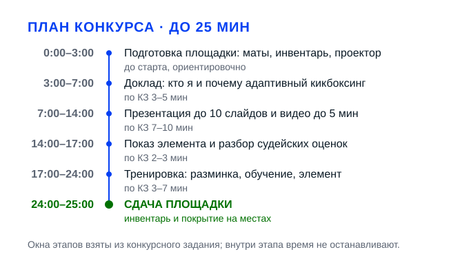
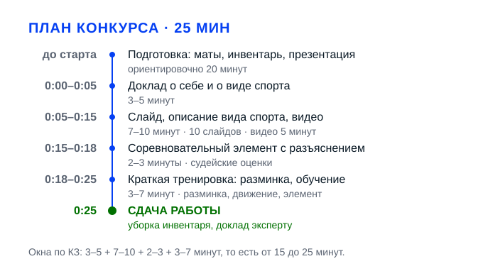
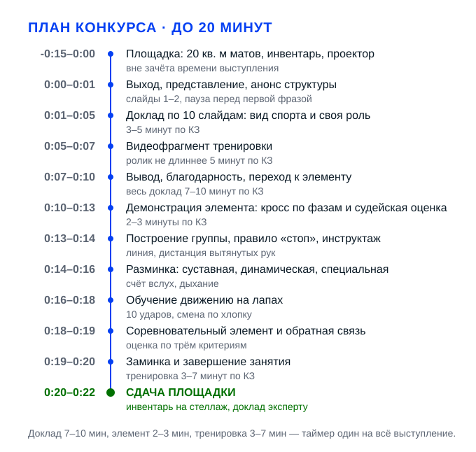

Помощник тренера (Адаптивный кикбоксинг) (ФВ)
Задания ниже — официальные файлы «Абилимпикс» (источник: abilympics-russia.ru), разложенные по категориям. Решения написаны по тексту задания, регламенту и критериям оценки; в них указано, что именно проверяет эксперт.
Школьник
14–16 лет, базовый уровень заданияВ официальном файле категории не разделены отдельными разделами — приводим задание целиком; различия по категориям смотрите в таблице модулей.
Пошаговое решение
Конкурсное задание этой компетенции не про спарринг, а про то, как участник работает с группой: он представляет себя и вид спорта, показывает презентацию не больше чем из десяти слайдов с видео до пяти минут, демонстрирует один соревновательный элемент с разбором судейских оценок и проводит короткую тренировку из разминки, обучения движениям и соревновательного элемента. Времени на этапы немного: три-пять минут на доклад, семь-десять на презентацию с видео, две-три на показ элемента и три-семь на тренировку. Площадка — двадцать квадратных метров будо-матов «ласточкин хвост», инвентарь — по два комплекта лап, ракеток и макивар, техника для показа — проектор. Решение ниже идёт шаг за шагом по этим четырём этапам и отдельной задачей разбирает подготовку площадки, потому что покрытие, дистанция и исправная лапа решают, получится ли показать удар и провести разминку без травмы. В каждом шаге сначала то, что делают руками и голосом, затем зачем это нужно по регламенту и охране труда, затем как проверить результат и что обычно идёт не так.

Задача 1. Подготовить площадку, покрытие и технику до выхода к комиссииПодготовка до старта · покрытие 20 кв. м
Конкурсное задание начинается не с первого слова доклада, а с того, что участник делает на площадке до него. По разделу охраны труда он обязан проверить укладку покрытия, исправность оборудования, освещение и убрать с пола всё лишнее, а по перечню оснащения у него двадцать квадратных метров будо-матов, по два комплекта лап, ракеток и макивар и проектор для презентации. Эти десять-пятнадцать минут решают, будет ли чем показать удар и куда ставить ногу, поэтому подготовка идёт отдельной задачей, а не фоном к докладу.
Действие 1.1. Уложить и проверить покрытие
Шаг 1.1.1
Начинаем укладку от дальней от входа стены и двигаемся к комиссии, чтобы замки ложились «под ногу» и не расходились, когда по ним пойдут босиком. Маты «ласточкин хвост» соединяем замок в замок: сначала выравниваем длинную сторону, затем наступаем на стык коленом и добиваем ладонью до щелчка. Полосу за полосой укладываем так, чтобы покрытие закрывало не меньше двадцати квадратных метров — этого хватает на рабочую зону, место для группы и запас у края, куда уходит нога при лоу-кике.
Покрытие эксперт осматривает первым, и в разделе охраны труда прямо сказано, что травмы в зале получают при падении на неплотно застеленные маты. Щель в два-три миллиметра на вид безобидна, но при ударе ногой пятка уходит в неё, и вместо показа элемента получается растяжение связок. Двадцать квадратных метров — не формальность: если покрытие меньше рабочей зоны, спортсмен на задней линии оказывается на голом полу.
Проведите ладонью по всем стыкам: ни один замок не должен расходиться под пальцем. Толкните крайний мат ногой от себя — он остаётся на месте, а не едет по полу. Обойдите периметр и убедитесь, что кромка покрытия не выступает над полом выше пальца.
Частая ошибка — положить маты внахлёст, «чтобы держалось»: получается ступенька, и первый шаг босиком превращается в подвёрнутую стопу. Вторая — оставить щель у стены и прикрыть её краем мата: на видео это видно, а на разминке спортсмен наступает туда всей стопой.
Эксперт проходит по покрытию до доклада и отдельно смотрит стыки в той зоне, где участник собирается бить ногой. Ему важно увидеть проверку действием, а не фразой о том, что «всё проверено».
Шаг 1.1.2
Обходим площадку по периметру и убираем всё, что может оказаться под ногой: бутылки, чехлы от инвентаря, свисающие провода от проектора, сумки за краем матов. Провод от проектора прокладываем вдоль стены и прижимаем к полу так, чтобы его не пересекала ни одна траектория перемещения. Если пол вокруг покрытия скользкий, отмечаем это для себя и не выводим группу за край матов во время разминки.
По требованиям охраны труда поверхность пола не должна быть скользкой, а на полу не должно быть никаких предметов — это условие допуска к занятию, а не пожелание. На конкурсе площадка общая: рядом работает другая категория, и брошенный чехол может оказаться в вашей рабочей зоне между докладом и тренировкой.
Пройдите площадку по диагонали и посмотрите сверху вниз, как смотрят на пол перед тренировкой: на матах и вокруг них не должно остаться ни одного предмета. Провод лежит у стены и не пересекает зону, где вы будете перемещаться с группой.
Оставить провод от проектора поперёк рабочей зоны: о него спотыкаются на первом же перемещении, и это единственная ошибка, которая может закончить конкурс досрочно. Не менее обидно убрать мусор с матов, но забыть про зону в двух шагах за краем.
Эксперт по охране труда обходит периметр вместе с участником и отдельно смотрит на провод от проектора и на пол за краем матов. Это единственный пункт, где замечание делают сразу, не дожидаясь конца этапа, поэтому проверку лучше показывать действием — рукой по полу, а не словами о порядке.
Шаг 1.1.3
Проверяем условия зала по трём признакам: освещение, воздух и средства помощи. Свет должен давать не меньше трёхсот люкс на уровне покрытия — читаемо, без слепящих пятен от ламп в глаза тому, кто стоит лицом к окну. Температура в зале для лёгкой работы держится в коридоре двадцати одного до двадцати четырёх градусов, влажность от сорока до шестидесяти процентов. Аптечка и огнетушитель должны быть на своих местах, и вы должны показать их группе рукой, а не словами.
Эти цифры взяты из раздела минимальных требований к оснащению и из требований охраны труда, и они относятся к участникам с ментальными нарушениями, для которых перегрев и духота быстро превращаются в потерю внимания. Духота в зале — причина не капризов, а срыва разминки: ребёнок перестаёт слышать команду через пять-семь минут. Знание, где лежит аптечка, эксперт проверяет вопросом, и ответ должен быть мгновенным.
Поднимите руку на уровень груди и посмотрите, не бьёт ли свет в глаза — если бьёт, разверните группу так, чтобы она работала боком к окну. Покажите аптечку и огнетушитель пальцем и убедитесь, что оба на месте и доступны, а не заперты в подсобке.
Ошибка новичка — начать занятие в душном зале и надеяться, что «потерпят»: к четвёртой минуте тренировки группа теряет темп, а участник переходит на повторение команд всё громче. Вторая ошибка — искать аптечку после того, как она понадобилась.
Эксперт оценивает, готов ли участник отвечать за группу: вопрос про аптечку и освещение задают почти всегда, и он не про эрудицию, а про привычку проверять зал перед занятием.
Действие 1.2. Разложить инвентарь по зонам
Шаг 1.2.1
Пересчитываем и раскладываем инвентарь по типам: лапы, ракетки и макивары — по два комплекта каждого, как указано в перечне оснащения. Лапы ставим в одну линию у короткой стороны покрытия, ракетки и макивары — рядом, но отдельными кучками, чтобы на тренировке не искать нужное под ногами. Два комплекта — это не «побольше на всякий случай», а расчёт на пары: пока одна пара работает, вторая ждёт и не толкается в проходе.
Инвентарь в этом задании не реквизит, а инструмент: участник по заданию выбирает, с чем будет проводить обучение ударам, и комиссия смотрит на обоснованность выбора. Если лапы лежат кучей в углу, выбрать осознанно невозможно — вы берёте то, что сверху. Порядок разложения экономит минуты внутри тренировки, где на всё отведено от трёх до семи минут.
Разложите инвентарь и отойдите на три шага: должно быть видно три отдельные группы и свободную дорожку между ними шириной не меньше полутора метров. Пересчитайте вслух: два комплекта лап, два комплекта ракеток, два комплекта макивар.
Свалить всё в одну кучу «потом разберу»: на тренировке участник тратит двадцать-тридцать секунд на поиск, а это почти десятая часть времени этапа. Вторая ошибка — разложить инвентарь внутри рабочей зоны, где группа будет перемещаться.
Эксперт смотрит на площадку до начала работы и отмечает, разложен ли инвентарь по трём группам и осталась ли между ними свободная дорожка. Порядок читается как понимание процесса: по нему видно, думал ли участник о том, как будет раздавать лапы группе, или просто выложил всё, что принёс.
Шаг 1.2.2
Каждую единицу проверяем на исправность: шнуровка лапы затянута и не порвана, поролон не продавлен до пластины, липучки держат, ручки ракеток не болтаются, макивара не имеет трещин на рабочей поверхности. Проверяем рукой, а не глазами: сжимаем лапу так, как её держит партнёр, и смотрим, не выворачивается ли крепление. Негодное откладываем в сторону, отдельно от рабочего инвентаря.
Порванная шнуровка на лапе — это не мелочь: на ударе лапа проворачивается, спортсмен бьёт в край и получает ушиб пальцев. Требования охраны труда прямо говорят о проверке исправности тренировочного оборудования перед занятием, и на конкурсе это оценивается как часть подготовки. Отложенная в сторону неисправная лапа ещё и показывает комиссии, что участник умеет отбраковывать, а не хватать первое.
Проверьте каждую лапу нажатием ладонью: поролон возвращается, пластина не чувствуется. Дёрните шнуровку и липучку — не разошлись. Ракетка не хрустит при сжатии ручки. Всё, что не прошло проверку, лежит отдельно и не берётся в работу.
Взять инвентарь, не глядя, и обнаружить порванную шнуровку в момент удара: лапа улетает, спортсмен бьёт по воздуху и теряет равновесие. Вторая ошибка — оставить неисправную единицу в общей куче, чтобы «потом разобраться».
Эксперт может взять любую лапу из рабочей зоны и сам проверить крепление, шнуровку и поролон — именно так выясняют, готовил участник инвентарь или выложил его. Отдельно отмечается неисправная единица, отложенная в сторону: она показывает, что отбраковка была настоящей, а не на словах.
Шаг 1.2.3
Инвентарь, который не нужен в первые минуты, убираем за край покрытия, но не дальше чем в двух шагах: так он не мешает, но и не требует бегать через зал. Рабочие лапы и ракетки протираем влажной салфеткой с внутренней стороны — их берут руками, а группа работает без перчаток. Проход между рабочей зоной и местом хранения инвентаря оставляем шириной не меньше полутора метров, как требует раздел оснащения рабочих мест.
Полтора метра прохода — это ширина, при которой ребёнок с нарушением координации не задевает инвентарь плечом, а помощник тренера проходит с лапой в руке, не разворачиваясь боком. Гигиена инвентаря в разделе охраны труда не описана отдельным пунктом, но лапы и ракетки — предметы общего пользования, и протирать их перед сменой партнёра это нормальная привычка помощника тренера.
Пройдите от края покрытия до инвентаря с лапой в руке: вы не задеваете ни группу, ни стойку с проектором, а рука не тянется через рабочую зону. Внутренняя сторона лап и ручки ракеток сухие и чистые, без следов старого пота и пыли.
Поставить инвентарь так, что до него надо идти через всю рабочую зону: на тренировке это лишние перемещения и риск столкновения с бьющим. Вторая ошибка — отдать лапу следующему спортсмену мокрой, не протерев её после предыдущей пары.
Эксперт смотрит на траектории: если участник ни разу не пересёк рабочую зону зря и ни разу не развернулся спиной к группе, организация засчитана. Отдельно фиксируется, берёт ли он инвентарь одной рукой, не перебирая всю кучку.
Действие 1.3. Проверить технику для доклада и презентации
Шаг 1.3.1
Проектор включаем заранее, не в момент выхода: проверяем кабель, источник сигнала, фокусировку и то, что изображение выводится целиком, а не обрезано по краям. Ноутбук ставим так, чтобы до него можно было дотянуться одной рукой, не разворачиваясь спиной к комиссии. Яркость и контраст поднимаем под свет в зале — при включённых лампах картинка с проектора бледнеет, и это видно на записи.
Презентация и видео — обязательная часть задания, и по регламенту на них отводится от семи до десяти минут вместе с комментарием. Если техника не запустилась, эти минуты уходят на возню с кабелем, а не на содержание, и комиссия видит не доклад, а техническую паузу. Проверка заранее — единственный способ этого избежать, потому что в зале у вас не будет второго ноутбука.
На экране виден первый слайд целиком, без обрезанных полей, и заголовок читается с последнего ряда. Курсор, панели инструментов и уведомления убраны с экрана, звук системы не отключён в ноль, а ноутбук стоит на расстоянии вытянутой руки от места, где вы стоите.
Включить проектор впервые за минуту до выхода: половина времени этапа уходит на поиск источника сигнала, и комиссия видит техническую паузу вместо доклада. Вторая ошибка — оставить на экране рабочий стол с папками и открытыми документами: это первое, что попадает в кадр.
Эксперт фиксирует, готов ли участник работать с техникой: запуск без заминки считается частью навыка проведения занятия. Отдельно смотрят, не разворачивается ли участник спиной к комиссии, наклоняясь к ноутбуку.
Шаг 1.3.2
Проверяем файл презентации по требованиям задания: не больше десяти слайдов, титульный, затем описание вида спорта, затем своя роль и примеры работы с группой. Видео открываем отдельным файлом и смотрим начало и конец: продолжительность не больше пяти минут, звук есть, картинка не перевёрнута. Файлы держим на рабочем столе с короткими именами, чтобы не искать их в проводнике при комиссии.
Десять слайдов и пять минут видео — это жёсткие рамки конкурсного задания, и выход за них читается как неумение отбирать материал. Проверка продолжительности важна ещё и потому, что видео часто оказывается длиннее, чем кажется: пять минут это примерно один полный раунд с разминкой и без пауз. Открывать файл с рабочего стола, а не из облака, нужно из-за сети: в зале она может не работать.
Слайдов ровно десять или меньше, каждый открывается без задержки, а переход идёт по одному щелчку и не листает сразу три экрана. Видео заканчивается на пятой минуте, звук слышен с последнего ряда, картинка не растянута и не перевёрнута.
Принести двадцать слайдов и пролистывать половину со словами «это я быстро»: комиссия видит, что материал не отобран, а время этапа уходит на прокрутку. Вторая ошибка — запускать видео из облака и ждать загрузки перед комиссией в зале, где сеть не работает.
Эксперт может попросить открыть конкретный слайд или вернуться на два назад: важно, чтобы переход был мгновенным, без поиска в проводнике и без пролистывания всей презентации. Так проверяют, знает ли участник свой материал наизусть.
Шаг 1.3.3
Готовим страховку: копию презентации и видео на флешке, распечатанный план доклада на одном листе, таймер или часы перед глазами. Печатный текст для участников с нарушением зрения делаем крупным, не меньше шестнадцати-восемнадцати пунктов, и держим его при себе, если в группе есть слабовидящий. План кладём не в карман, а на край покрытия текстом к себе, чтобы взгляд падал на него без наклона.
Копия на флешке — это реакция на единственный реальный риск этапа: техника в чужом зале. Распечатанный план нужен не для чтения вслух, а для контроля хронометража: доклад идёт от трёх до пяти минут, и без ориентира участник либо обрывает себя на второй минуте, либо перебирает. Крупный шрифт взят из раздела оснащения рабочих мест, где для слабовидящих указан именно этот кегль.
Флешка вставлена, копия открывается с первого щелчка, на бумаге видны четыре опорные точки доклада крупным шрифтом. Взглянув на лист, вы за две секунды понимаете, на каком блоке находитесь, и вам не нужно подносить его к глазам.
Держать план в голове и надеяться на память: на волнении третий блок выпадает первым, и доклад заканчивается раньше времени. Вторая ошибка — положить лист текстом от себя и разворачивать его при комиссии.
Эксперт замечает, что участник сверяется с планом незаметно, не поднимая лист к лицу: это признак подготовленной речи, а не чтения с листа. Если взгляд уходит в бумагу на каждой фразе, оценка за подачу материала снижается.
Задача 2. Представить себя и вид спорта — доклад на 3–5 минутЭтап 1 конкурсного задания · 3–5 минут
Первый этап задания сформулирован коротко: представить вид спорта и рассказать, почему участник решил заниматься именно им. На это отводится от трёх до пяти минут, то есть примерно четыреста-шестьсот слов в спокойном темпе. Внутри этого времени нужно успеть три вещи: назвать себя и свою роль, объяснить личную причину прихода в адаптивный кикбоксинг и показать, что участник понимает, чем адаптированные занятия отличаются от обычных. Доклад — не чтение биографии, а ответ на вопрос, почему этому человеку можно доверить группу.
Действие 2.1. Выйти, представиться и задать структуру
Шаг 2.1.1
Выходим на площадку и останавливаемся так, чтобы комиссия видела лицо, а группа стояла сбоку и не перекрывала обзор. Дистанция — около полутора метров от стола комиссии: ближе читается как нависание, дальше приходится повышать голос. Стопы на ширине плеч, вес на обеих ногах, руки свободно опущены или сложены перед собой — поза открытая, без скрещённых рук и без рук в карманах.
Первые десять секунд задают то, как вас будут слушать остальные пять минут, и эксперт оценивает поведение на площадке с момента выхода. Открытая поза и устойчивая стойка — это то же, что вы требуете от спортсменов на разминке, и комиссия видит совпадение слов и поведения. Скрещённые руки на уровне груди читаются как закрытость, даже если участник говорит правильные вещи.
Вы стоите так, что вам удобно смотреть и на комиссию, и на группу, не разворачиваясь всем корпусом. Ноги не переступают, руки не тянутся поправить одежду. Проверьте до выхода: шнурки завязаны, костюм не сползает.
Выйти и встать почти вплотную к столу: комиссии приходится откидываться назад, и первое впечатление смазано. Вторая ошибка — встать боком, чтобы видеть экран, и полтора этапа говорить в профиль, теряя контакт с теми, кто оценивает.
Эксперт отмечает выход отдельно от речи: устойчивая стойка без суеты, руки не в карманах, взгляд на комиссию — уже половина оценки поведения. Если участник вышел и сразу начал поправлять костюм или переступать, это фиксируется как волнение, и дальше слушают строже.
Шаг 2.1.2
Представляемся коротко и по делу: имя и фамилия, компетенция и роль, которую участник выполняет в группе. Формулировка вроде «я помощник тренера по адаптивному кикбоксингу, занимаюсь в этой группе третий год» даёт комиссии всё нужное за десять секунд. Дальше добавляем одну фразу о том, с кем работает группа, если это уместно, и переходим к главному.
Задание требует представить себя, и это единственная часть доклада, где перечисление уместно: комиссия должна понимать, перед ней спортсмен-помощник или взрослый тренер. Роль проговаривается вслух потому, что вся дальнейшая демонстрация идёт от неё: помощник показывает, объясняет и страхует, а не руководит соревнованием. Лишние тридцать секунд на рассказ о наградах здесь работают против вас — они съедают время из пяти минут.
После представления комиссия знает три вещи: кто перед ней, в какой роли и с какой группой. Если попросить любого эксперта повторить эти три пункта после доклада, он должен суметь это сделать без подсказки.
Начать с перечисления медалей и разрядов: время уходит, а роль так и остаётся непонятной. Вторая ошибка — говорить скороговоркой, из которой не разобрать фамилию, а фамилию вписывают в лист с первого раза и переспрашивать не станут.
Эксперт вписывает в лист именно роль участника: если она не прозвучала, дальше оценивать показ и тренировку ему приходится с оговоркой. Формулировку «помощник тренера» он ждёт дословно, а не «занимаюсь с детьми».
Шаг 2.1.3
Сразу объявляем, из чего будет состоять выступление: сначала короткий рассказ о виде спорта и о себе, затем презентация с видео, затем показ соревновательного элемента с разбором судейских оценок, затем короткая тренировка. Одну фразу строим как маршрут, а не как список: «дальше я покажу слайды и видео, потом разберу элемент, а закончим короткой тренировкой».
Объявленная структура — это договор с комиссией: она перестаёт ждать подвоха и начинает слушать по разделам, а вы получаете право на паузу между этапами. Кроме того, объявление структуры страхует от главной ошибки доклада — увлечься рассказом о себе и не дойти до показа элемента, на который отведено отдельное время. Порядок совпадает с порядком этапов в конкурсном задании, и это дополнительно показывает, что участник знает регламент.
После вступительной фразы комиссия может назвать следующий этап, не спрашивая вас. Если вы сбились на середине, достаточно вернуться к этой фразе и продолжить с того места, на котором остановились, — структура держит.
Начать говорить без объявления структуры: через три минуты комиссия не понимает, когда ждать презентации, и может прервать на середине рассказа. Вторая ошибка — объявить пять этапов, а провести четыре.
Эксперт сверяет фактический ход выступления с объявленным: совпадение читается как управление временем, а расхождение — как импровизация. Он отмечает и то, назвал ли участник показ элемента и тренировку, а не только доклад с презентацией.
Действие 2.2. Рассказать, почему выбрал адаптивный кикбоксинг
Шаг 2.2.1
Личную причину рассказываем через конкретный случай, а не через общие слова. Работает короткая история: что было трудно, что изменилось после начала занятий, кто помог. Например, как на первых тренировках не получалось держать равновесие на одной ноге, а через полгода тот же ребёнок выполнил лоу-кик на лапу без подстраховки. Одного эпизода с деталями хватает: место, время, что именно получилось.
Задание прямо требует объяснить, почему участник решил заняться именно этим видом спорта, и комиссия слушает не правильность, а подлинность. Конкретный случай невозможно выдумать на ходу, поэтому он и работает: он показывает, что за словами стоит опыт группы. Общие формулировки про пользу спорта звучат одинаково у всех и не запоминаются никому.
В истории есть три обязательные точки: трудность, действие, результат. Если после рассказа слушатель может пересказать эпизод своими словами — с местом, действием и тем, что получилось, — значит, он прозвучал, а не прошёл фоном.
Говорить абстрактно: «кикбоксинг развивает силу и выносливость». Это можно сказать про любой вид спорта, и время на доклад потрачено зря. Вторая ошибка — рассказать чужую историю, которую участник не пережил.
Эксперт слушает именно этот блок внимательнее всего: по нему видно, работает участник с группой или повторяет заученный текст. Вопрос «а что было дальше» задают как раз здесь, и ответ по памяти выдаёт настоящий опыт.
Шаг 2.2.2
Связываем личный опыт с результатом у занимающихся: что меняется у ребёнка через полгода занятий адаптивным кикбоксингом. Называем два-три конкретных изменения, которые можно увидеть глазами: держит равновесие на одной ноге дольше, выполняет команду с первого повтора, не бросает упражнение после ошибки, спокойно работает в паре. Каждое изменение лучше иллюстрировать ситуацией с тренировки, а не прилагательным.
Компетенция построена вокруг спортивной абилитации детей и подростков с особенностями ментального развития, и именно динамика, а не сам факт занятий, является смыслом работы помощника. Когда участник называет наблюдаемые изменения, он показывает, что умеет смотреть на ученика, а не только на технику. Это же качество проверяется дальше, когда он исправляет ошибку на лапах.
Изменения сформулированы так, что их можно проверить на занятии: равновесие, реакция на команду, поведение после ошибки, работа в паре. Если формулировка не проверяется наблюдением, она не годится и в докладе звучит как оценка, а не как факт.
Перечислять качества вроде «стал увереннее и дисциплинированнее»: это оценка, а не наблюдение, и её нельзя увидеть. Вторая ошибка — говорить о результатах группы в целом, не называя ни одного ребёнка и ни одной ситуации.
Эксперт вполне может задать вопрос «а как вы это увидели», и ответ должен опираться на конкретную тренировку, а не на общее впечатление. Он же сверяет названные изменения с тем, что участник будет исправлять на лапах через десять минут.
Шаг 2.2.3
Объясняем, что такое адаптивный кикбоксинг и чем он отличается от обычного: правила и дозировка подстраиваются под возможности группы, контакт ограничен, приоритет у техники и контроля, а не у силы удара. Говорим о том, что меняется в занятиях: короткие блоки по три-пять минут, команда из одного-двух слов, показ вместо длинного объяснения, фиксированные маркеры на полу. Одно предложение стоит посвятить тому, что остаётся неизменным — стойка, дистанция и уважение к партнёру.
Понимание адаптации — ядро компетенции: помощник тренера работает именно на стыке кикбоксинга и коррекционной педагогики. Если участник рассказывает о виде спорта как о обычном единоборстве, дальше он и тренировку построит по взрослой схеме, а на группе с ментальными нарушениями это не работает. Формулировка «правила подстраиваются» одновременно показывает комиссии, что участник не путает адаптивный кикбоксинг с лечебной физкультурой.
В объяснении есть две части: что адаптируется и что остаётся неизменным. Если обе прозвучали, блок закрыт. Проверьте себя вопросом: смогу ли я после этого объяснения провести занятие с новым ребёнком.
Свести адаптацию к «занимаемся полегче»: тогда непонятно, зачем вообще кикбоксинг, и комиссия справедливо спросит о технике безопасности. Вторая ошибка — рассказывать только о виде спорта и забыть про адаптацию, хотя она в названии компетенции.
Эксперт оценивает точность терминологии: «адаптивный», «абилитация», «дозировка нагрузки» должны употребляться по делу, а не как украшение речи. Отдельно он слушает, не путает ли участник адаптивный кикбоксинг с лечебной физкультурой.
Шаг 2.2.4
Называем свою роль в группе по действиям: провожу разминку, готовлю и подаю инвентарь, показываю движение, страхую на перемещениях, подсказываю тренеру, кто из ребят сегодня не в форме. Формулируем так, чтобы было понятно, что помощник делает сам, а что остаётся за тренером: ответственность за группу не переходит к помощнику, но половина работы на площадке — его.
Задание описывает программу подготовки помощников тренера именно через эти навыки: проводить разминку, помогать с инвентарём, обучать простым защитным и атакующим действиям. Проговаривание роли вслух связывает доклад с тем, что участник будет делать через десять минут, и комиссия слушает дальше уже с прицелом на эти действия. Кроме того, честное разделение зон ответственности — признак зрелости, который в этой категории ценят отдельно.
Перечисленные действия совпадают с тем, что участник реально делает в показе и на тренировке: разминка, подача лапы, показ движения, страховка. Если названо то, чего дальше не будет, комиссия это заметит и спросит, почему не сделано.
Приписать себе роль тренера: «я отвечаю за группу и планирую занятие». Это не соответствует компетенции и звучит как непонимание границ. Вторая ошибка — перечислить обязанности уборщика инвентаря и не сказать ни слова о работе с детьми.
Эксперт держит в голове именно этот перечень и сверяет с ним дальнейшие действия участника на площадке. Расхождение между обещанным и сделанным он отмечает в графе коммуникации, даже если показ элемента прошёл хорошо.
Действие 2.3. Уложиться в 3–5 минут и удержать контакт с комиссией
Шаг 2.3.1
Делим доклад на три блока с фиксированным временем: минута на представление и роль, две минуты на историю и смысл адаптивного кикбоксинга, минута-полторы на свою работу в группе с переходом к презентации. Внутри каждого блока держим по одной опорной фразе, с которой начинаем, если сбились. На площадке удобно ориентироваться по часам у стола комиссии или по таймеру на телефоне, положенному экраном вверх у края покрытия.
От трёх до пяти минут — это регламент задания, и выход за нижнюю границу читается как неготовность, а за верхнюю — как неумение отбирать. Разбивка на блоки нужна не для педантизма, а потому что середина доклада всегда съедается: история увлекает, и на роль в группе времени не остаётся. Опорная фраза спасает от провала, когда мысль потерялась на волнении.
Взглянув на часы после первого блока, вы видите примерно первую минуту. Если на часах уже две, второй блок сокращаем до одной истории и переходим к третьему, иначе показ элемента начнётся с опозданием.
Готовить доклад без хронометража и впервые замерять его на конкурсе: обычно он оказывается на две минуты длиннее, и комиссия останавливает участника на середине. Вторая ошибка — репетировать с секундомером, но без группы, и на площадке растянуть всё вдвое.
Эксперт отмечает время начала и конца этапа и сравнивает с регламентом: попадание в коридор три-пять минут фиксируется отдельно, а выход за пять минут считают перебором даже при хорошем содержании.
Шаг 2.3.2
Говорим громче, чем кажется нужным: в зале с матами и работающей рядом группой голос садится за минуту, если начать на разговорной громкости. Темп — около ста-ста двадцати слов в минуту, с паузой после каждой законченной мысли, потому что пауза помогает и слушателю, и вам. Смотрим на комиссию, а не в потолок и не на экран: взгляд держим на уровне глаз сидящих, переводя его по трём точкам.
Голос и темп — это то, что делает содержание слышимым, и в зале с шумом до восьмидесяти одного децибела тихая речь просто исчезает. Ровный темп с паузами читается как спокойствие, а скороговорка — как желание поскорее закончить, даже если текст хороший. Работа с голосом пригодится и на тренировке, где команду нужно подавать так, чтобы её услышали все и с первого раза.
Вас слышно у последнего ряда без напряжения, окончания слов не съедаются. Паузы на месте: после ключевой фразы вы молчите секунду, а не заполняете её «ээ» и «как бы», и в этой паузе комиссия успевает записать.
Начать на разговорной громкости и к третьей минуте сорваться в шёпот: комиссия перестаёт разбирать слова и оценивает только поведение. Вторая ошибка — говорить в экран, повернувшись спиной к столу, где сидят эксперты.
Эксперт слушает с последнего ряда и отмечает разборчивость: тихая речь воспринимается как неуверенность, даже если текст сильный. Он же смотрит на темп — скороговорка читается как желание поскорее закончить и уйти.
Шаг 2.3.3
Заканчиваем доклад одной фразой-выводом, в которой сжата главная мысль: зачем вы в этой группе и что умеете делать руками. Произносим её стоя, глядя на комиссию, а не в лист с планом. После вывода делаем паузу в полторы-две секунды, чтобы мысль осела, и только потом объявляем переход к презентации. Не добавляем новых фактов в финал: всё, что не прозвучало раньше, уже не поместится.
Финальная пауза — приём, который делает доклад законченным: без неё последняя фраза сливается с суетой вокруг ноутбука, и комиссия не успевает зафиксировать вывод. Отдельным баллом это не оценивается, но именно по финалу складывается впечатление о том, умеет ли участник завершать работу, а не обрывать её. Переход к презентации, произнесённый вслух, экономит время следующего этапа.
После последней фразы наступает тишина, а не продолжение речи: пауза в полторы-две секунды выдержана вами, а не выпрошена. Комиссия успевает записать вывод, а вы — сделать вдох и взяться за ноутбук без суеты.
Закончить на полуслове и сразу начать искать файл на ноутбуке: этап выглядит брошенным. Вторая ошибка — уйти в новый рассказ и перебрать время, потому что остановиться без вывода психологически труднее всего.
Эксперт фиксирует завершённость этапа: пауза перед переходом читается как управление собственным выступлением. Если доклад оборвался на полуслове и сразу пошёл поиск файла, этап считают незакрытым.
Задача 3. Показать презентацию и видео — 7–10 минутЭтап 2 конкурсного задания · 7–10 минут · ≤10 слайдов
Второй этап задания описан так: представить слайд, рассказать о виде спорта и показать видеоматериал. Презентация ограничена десятью слайдами, видео — пятью минутами, а на весь этап вместе с комментарием отводится от семи до десяти минут. Значит, на каждый слайд приходится меньше минуты, и почти всё содержание должно идти голосом, а не текстом на экране. Здесь проверяют не красоту оформления, а способность участника удерживать внимание группы и комиссии и объяснять материал так, чтобы его понял ребёнок с особенностями ментального развития.
Действие 3.1. Собрать десять слайдов, которые читаются с последнего ряда
Шаг 3.1.1
Отбираем содержание под жёсткий лимит: титул, что такое кикбоксинг, дисциплины и разрешённые зоны, что меняется в адаптивном варианте, кто занимается в нашей группе, как строится занятие, роль помощника тренера, инвентарь и площадка, результаты, финальный слайд с выводом. Десять слайдов — это ровно тот минимум, при котором про каждый можно сказать одну законченную мысль. Всё, что не поместилось, уходит в речь, а не в слайд.
Лимит в десять слайдов задан в конкурсном задании, и он не про экономию, а про структуру: на семь-десять минут этапа десять экранов означают по сорок-шестьдесят секунд на каждый. Если слайдов больше, участник начинает пролистывать их со словами «это я быстро», и именно на этом месте теряется оценка за подачу материала. Один слайд — одна мысль работает ещё и потому, что группе с ментальными особенностями трудно удерживать взгляд на перегруженном экране.
Посчитайте слайды и назовите вслух мысль каждого. Если на каком-то слайде мыслей две, он делится или чистится. Десять или меньше — это проверяется счётом, а не на глаз.
Оставить тридцать слайдов и пролистать половину за две минуты: комиссия видит прокрутку вместо рассказа. Вторая ошибка — убрать слайды про адаптацию, чтобы освободить место под фотографии, и потерять смысловой центр.
Эксперт смотрит на соответствие числа слайдов заданию и на то, есть ли отдельный слайд про адаптацию: это смысловое ядро компетенции.
Шаг 3.1.2
Проверяем читаемость: основной текст на слайде не меньше двадцати четырёх пунктов, заголовок — тридцати двух, на слайде не больше пяти строк, контраст тёмного текста на светлом фоне без пестрых подложек. Фотографии и схемы ставим крупно, по одной-две на слайд, чтобы детали были видны с последнего ряда. Фон и шрифты во всей презентации одинаковые: разнобой отвлекает сильнее, чем помогает.
Кегль в двадцать четыре пункта и выше — это не вкусовое требование: на проекторе с расстояния в пять-семь метров мелкий текст превращается в серую полосу, и группа перестаёт следить за слайдом. В разделе оснащения для слабовидящих участников тот же принцип задан через крупный шрифт в шестнадцать-восемнадцать пунктов на бумаге, а на экране он должен быть ещё крупнее. Пять строк на слайде держат внимание, тогда как абзац текста заставляет читать вместо слушания.
Отойдите от экрана на пять-шесть шагов и прищурьтесь: заголовок и главная цифра должны читаться сразу, остальное — без напряжения. На слайде нет абзацев, которые приходится разбирать.
Сделать слайды с текстом в четырнадцать пунктов и пересказывать их дословно: комиссия перестаёт слушать и начинает читать. Вторая ошибка — пёстрый фон и разные шрифты, из-за которых фотография удара сливается с подложкой.
Эксперт оценивает подачу визуального материала глазами зрителя: он сидит на том же расстоянии, что и группа.
Шаг 3.1.3
Отдельно проверяем слайд про нозологию и адаптацию: на нём должно быть названо, с какой группой работает участник и что конкретно меняется в занятии. Формулировки пишем простые и без диагнозов: «занимаются ребята, которым трудно удерживать внимание и равновесие», «занятие идёт блоками по три-пять минут», «команда состоит из одного-двух слов». Никаких медицинских терминов на экране, если их не объяснить голосом.
Именно этот слайд отличает презентацию по адаптивному кикбоксингу от рассказа о единоборстве вообще, и по нему видно, понимает ли участник, для кого он работает. Простые формулировки нужны не только комиссии, но и группе: если ребёнок видит на экране слово, которого не понимает, он перестаёт смотреть. Отсутствие диагнозов — этическая норма, которая в этой компетенции соблюдается строже, чем в любой другой.
На слайде названа группа и три конкретных изменения в занятии. Если убрать со слайда всё остальное, смысл сохраняется — это признак правильно сформулированного слайда.
Написать на слайде медицинские диагнозы: это нарушение этики и лишний повод для вопроса комиссии. Вторая ошибка — ограничиться фразой «занимаемся с особенными детьми», за которой нет ни одного конкретного изменения.
Эксперт почти всегда задаёт вопрос по этому слайду, поэтому участник должен уметь объяснить каждое слово на нём.
Действие 3.2. Рассказать о виде спорта по слайдам
Шаг 3.2.1
Первый слайд — титул, и он держится на экране, пока мы называем тему: адаптивный кикбоксинг, роль помощника тренера, наша группа. Дальше идёт слайд с определением вида спорта: кикбоксинг — это ударное единоборство, где работают руками и ногами в стойке, а соревнования идут по правилам конкретной дисциплины. Проговариваем это одной-двумя фразами и сразу переходим к тому, что важно для группы: удары обозначаются контролированно, а техника ценится выше силы.
Определение вида спорта — обязательная часть этапа, но оно не должно занимать больше сорока-пятидесяти секунд: на всё отведено семь-десять минут, и энциклопедический рассказ съедает время у показа и тренировки. Формулировка про контроль и технику нужна потому, что она сразу вводит рамку безопасности, внутри которой дальше будет идти вся работа. Комиссия должна услышать, что участник понимает: кикбоксинг в адаптивной группе — это не драка, а точная работа по цели.
После двух слайдов у слушателя есть ответ на вопрос, что это за вид спорта и почему в нём ценится контроль. Проверьте по часам: прошло не больше полутора-двух минут.
Потратить три минуты на историю кикбоксинга и перечисление федераций: времени на показ элемента уже не останется. Вторая ошибка — говорить о виде спорта только как о соревновании, забыв про контроль удара.
Эксперт слушает, прозвучала ли рамка безопасности: для адаптивной группы это ключевой признак профессионального понимания.
Шаг 3.2.2
На слайде о дисциплинах и зонах называем то, что нужно группе: удары руками и ногами, разрешённые зоны — голова спереди и сбоку, корпус, бёдра, и то, что запрещено всегда: затылок, спина, пах, горло. Объясняем, что в адаптированном варианте контакт ограничен и удар обозначается, а не проводится в полную силу. Для наглядности показываем рукой уровень зоны: ладонь у виска, у ребра, у бедра.
Разрешённые и запрещённые зоны — это то, из чего потом вырастает судейский разбор элемента, и без этого блока следующий этап повисает в воздухе. Показ уровня рукой нужен группе: словесное описание зоны ребёнок с трудностями восприятия не удерживает, а жест запоминает сразу. Ограничение контакта проговаривается ещё и потому, что оно снимает у комиссии вопрос о безопасности занятия.
Слушатель может показать три разрешённые зоны и назвать три запрещённые. Жест рукой совпадает со словом: вы показываете зону в тот момент, когда её называете.
Перечислять зоны, не показывая их: половина группы не поймёт, о чём речь, а комиссия отметит разрыв между словом и жестом. Вторая ошибка — назвать запрещённые зоны вскользь, одним словом «и некоторые другие».
Эксперт проверяет точность: ошибка в зонах на этом слайде обязательно всплывёт на показе элемента.
Шаг 3.2.3
Слайд про группу и адаптацию комментируем не списком изменений, а одной историей: как занятие строится вокруг конкретного ребёнка. Рассказываем, что занятие разбито на короткие блоки, что каждое движение сначала показывается, а потом называется, что на полу лежат маркеры для стойки и дистанции. Добавляем фразу о том, что цель занятия — не победа на соревновании, а уверенность и управляемое движение.
Это тот же смысловой центр, что и в докладе, но здесь он подкреплён визуальным рядом, и комиссия сверяет слова со слайдом. Разбивка на короткие блоки и маркеры на полу — не украшение рассказа, а реальные инструменты адаптации, которые участник будет использовать на тренировке через несколько минут. Формулировка цели занятия снимает главное недоразумение этой компетенции: адаптивный спорт оценивают не по медалям.
На слайде и в речи совпадают три инструмента адаптации, и участник может показать маркер на полу рукой. Если после этого спросить группу, что мы делаем на занятии, ответ будет про уверенность и движение.
Рассказывать про адаптацию абстрактно, а на слайде держать фотографии медалей: слова и картинка начинают спорить друг с другом. Вторая ошибка — называть адаптацию «упрощением» программы.
Эксперт смотрит на связку «слайд — речь — будущая тренировка»: она должна быть одной линией.
Шаг 3.2.4
Последний содержательный слайд — про роль помощника тренера: что участник делает на занятии и как это выглядит. Показываем на слайде три-четыре фотографии или пиктограммы: подача лапы, показ движения, страховка рядом с ребёнком, разметка маркерами. Комментируем одной фразой на каждое действие и заканчиваем переходом к видео: «сейчас посмотрим, как это выглядит на тренировке».
Третий и четвёртый этапы конкурса — показ элемента и тренировка — проверяют те же навыки, что названы на этом слайде, поэтому слайд работает как анонс. Фотографии с реальной тренировки убедительнее любого текста: они показывают, что участник действительно стоял рядом с детьми, а не описывает теорию. Переход к видео, произнесённый вслух, избавляет от неловкой паузы, пока открывается файл.
На слайде четыре действия, и каждое участник может показать руками без подготовки. Переход к видео прозвучал до того, как вы начали искать файл.
Оставить слайд с текстом «мои обязанности» и списком из десяти пунктов: его никто не прочитает. Вторая ошибка — не связать слайд с видео, и видео начинается без объяснения, что в нём смотреть.
Эксперт отмечает, прозвучало ли указание, на что смотреть в видео: это признак умения управлять вниманием группы.
Действие 3.3. Показать видео не дольше пяти минут и закрыть этап
Шаг 3.3.1
Запускаем видео сами, не перекладывая это на комиссию: один щелчок, проверка, что пошёл звук и картинка на весь экран. Перед запуском называем, что в ролике и сколько он длится: «две минуты, разминка и работа на лапах с одним из ребят». Первые пять секунд стоим вполоборота, чтобы видеть и экран, и комиссию, и не загораживать проектор.
Видео — обязательная часть этапа, и по заданию оно не должно быть длиннее пяти минут, а на весь этап отведено семь-десять, значит ролик в две-три минуты оставляет время на комментарий. Запуск своими руками нужен потому, что пауза с поиском файла читается как неготовность, а короткая аннотация перед показом превращает просмотр в учебный материал. Поза вполоборота — мелочь, которую замечают: участник должен контролировать и экран, и реакцию зала.
Ролик пошёл с первой попытки, звук слышен, изображение на весь экран, никто не загораживает проектор. Продолжительность объявлена до запуска и совпадает с фактической.
Искать файл в проводнике перед комиссией и открывать не тот ролик: теряется минута и доверие. Вторая ошибка — стоять спиной к залу и смотреть видео вместе со всеми, отвернувшись от комиссии.
Эксперт фиксирует время этапа: заминка на запуске уходит из семи-десяти минут, отведённых на презентацию и видео.
Шаг 3.3.2
Во время показа не перебиваем ролик, но и не молчим всю дорогу: делаем две-три короткие подписи в моменты, когда на экране происходит главное. Формулировки короткие: «здесь я держу лапу на уровне груди», «тут он впервые выполнил удар без подсказки», «обратите внимание, как я страхую его у края покрытия». Говорим тише, чем в докладе, чтобы голос шёл фоном, а не спорил со звуком записи.
Комментарий по ходу превращает просмотр в разбор: комиссия видит не просто фрагмент тренировки, а понимание, что в нём важно. Две-три подписи — оптимальное количество, потому что больше превращает видео в вашу закадровую речь, а меньше оставляет зрителя одного с картинкой. Тихо и коротко — потому что в зале шум до восьмидесяти одного децибела, и перекрывать запись бессмысленно.
В ролике прозвучали ровно те моменты, которые вы назвали, и по ним можно пересказать, чему был посвящён фрагмент. Ваш голос не заглушает запись.
Комментировать каждую секунду: ролик превращается в фон, а речь — в пересказ очевидного. Вторая ошибка — не сказать ни слова и после просмотра не объяснить, что это было.
Эксперт оценивает умение выделять главное: подписи должны попадать в смысловые точки, а не в начало и конец.
Шаг 3.3.3
После ролика делаем паузу в секунду, закрываем видео и возвращаемся к комиссии лицом. Одной-двумя фразами формулируем вывод: что было видно на записи и что это доказывает. Дальше объявляем следующий этап: «теперь покажу соревновательный элемент и разберу, как его оценивают судьи». Ноутбук закрываем или отставляем, чтобы он не мешал работать на покрытии.
Вывод после видео — это то, что остаётся в памяти комиссии, если ролик смотрели невнимательно, а второй этап заканчивается только тогда, когда участник его закрыл. Объявление следующего этапа экономит время и удерживает внимание. Убранный ноутбук нужен ещё и по безопасности: на показе удара ногой техника не должна стоять в рабочей зоне.
После ролика прозвучал вывод из одного-двух предложений, и комиссия знает, что будет дальше. Ноутбук и провода убраны с пути движения.
Выключить видео и молча начать искать лапу: этап обрывается без вывода, а комиссия ждёт продолжения. Вторая ошибка — оставить ноутбук на краю покрытия, где будет выполняться удар ногой.
Эксперт отмечает завершённость этапа и готовность площадки к показу элемента: техника вне рабочей зоны.
Задача 4. Показать соревновательный элемент и разобрать судейские оценкиЭтап 3 конкурсного задания · 2–3 минуты
Третий этап — самый короткий и самый плотный: за две-три минуты нужно показать один соревновательный элемент, объяснить его выполнение и рассказать, как этот элемент оценивают судьи. Здесь участник фактически работает в двух ролях сразу: спортсмена, который чисто выполняет движение, и помощника тренера, который умеет разложить его на фазы и объяснить критерии зачёта. Именно на этом этапе видно, различает ли участник красивое движение и засчитанный удар.
Действие 4.1. Объявить элемент, зону и дистанцию
Шаг 4.1.1
Выбираем элемент заранее и называем его коротко и точно: например, лоу-кик правой ногой в бедро снаружи, или двойка рук джеб-кросс, если участнику ближе работа руками. Называем вслух две вещи: что это за удар и по какой зоне он наносится. Не «покажу удар ногой», а «лоу-кик правой ногой в наружную часть бедра». Уточнение зоны обязательно, потому что от неё зависит разбор судейских оценок.
Задание требует продемонстрировать один соревновательный элемент с подробным разъяснением, и точное название — начало разъяснения. Когда зона названа, дальше можно объяснять, почему удар в эту точку засчитывается, а соседняя уже нет. Кроме того, конкретное название показывает, что элемент выбран осознанно, а не взят первый из тех, что получаются.
Прозвучали название удара, нога или рука и зона. Комиссия может записать элемент в лист, не переспрашивая.
Назвать элемент общими словами: тогда разбор судейских критериев повисает, потому что непонятно, к чему он относится. Вторая ошибка — выбрать элемент, который участник выполняет неуверенно, ради эффектности.
Эксперт записывает заявленный элемент и сверяет с ним показ: расхождение между словом и движением стоит дороже, чем скромный выбор.
Шаг 4.1.2
Встаём на покрытие в боевую стойку и обозначаем дистанцию: около полутора метров до воображаемого партнёра, отмеченного маркером или краем мата. Показываем рукой уровень зоны — бедро, ребро или голова — и только после этого начинаем движение. Если на площадке есть партнёр-волонтёр, договариваемся с ним о сигнале: удар обозначается до контакта, лапа держится на уровне зоны.
Дистанция — часть техники, и без неё лоу-кик превращается в замах: с полутора метров удар виден, с полуметра он уже не читается как соревновательный. Обозначение зоны рукой связывает показ с предыдущим слайдом и помогает группе и комиссии одновременно видеть цель. Договорённость с партнёром о контроле — прямое требование безопасности, которое в этой компетенции проверяют на каждом этапе.
Стойка на покрытии, дистанция выдержана, зона показана рукой до начала движения. Партнёр, если он есть, подтвердил сигнал кивком.
Начать показ без обозначения дистанции и зоны: зритель не понимает, куда идёт удар, и элемент выглядит как взмах. Вторая ошибка — работать вплотную к партнёру без договорённости о контроле.
Эксперт по безопасности смотрит на дистанцию и на партнёра: контакт без договорённости фиксируется отдельно.
Шаг 4.1.3
Проверяем себя перед движением: стопы на ширине плеч, вес распределён, колени чуть согнуты, руки у подбородка прикрывают корпус, подбородок опущен. Свободной рукой показываем на зону, затем возвращаем её в стойку. Делаем один вдох и только потом начинаем: спешка в первой фазе — самая частая причина потери равновесия на показе.
Стойка — это то, из чего складывается оценка техники: судья смотрит, сохранил ли спортсмен положение до, во время и после удара. Проверка стойки перед движением занимает две секунды, но именно она отличает показательный удар от случайного. Вдох перед началом нужен, чтобы движение пошло на выдохе, а не на задержке: задержка дыхания сбивает ритм первых двух фаз.
В стойке видны три признака одновременно: колени согнуты, руки у подбородка, вес не ушёл на одну ногу. Кадр до начала движения выглядит так же, как кадр после завершения.
Встать прямо, с выпрямленными коленями и опущенными руками: удар пойдёт из неготовности, и судейская оценка техники упадёт независимо от попадания. Вторая ошибка — начинать движение на задержке дыхания и рвать темп на второй фазе.
Эксперт смотрит на исходное положение: по стойке он предсказывает, будет ли удар засчитан.
Действие 4.2. Показать элемент по фазам
Шаг 4.2.1
Первая фаза — подготовка: небольшой шаг передней ногой вперёд или разворот опорной стопы, вес переносится на опорную ногу, корпус остаётся вертикальным, руки не опускаются. Показываем эту фазу медленно, в половину скорости, и называем вслух, что происходит: «разворачиваю стопу, переношу вес, поднимаю бедро». Медленный показ занимает пять-семь секунд и даёт группе увидеть то, что в полном темпе не видно.
Показ по фазам — основной инструмент обучения в группе с особенностями ментального развития: скопировать целое движение сразу почти невозможно, а разложенное на три части копируется по частям. Называние вслух связывает движение со словом, и потом достаточно команды, чтобы ребёнок воспроизвёл фазу. Кроме того, разложение на фазы — это и есть разъяснение выполнения, которое требует задание.
В медленном показе видны три раздельных действия: разворот стопы, перенос веса, подъём бедра. Корпус не наклоняется вперёд больше, чем на ладонь.
Показать движение в полную силу и потом объяснять словами: группа не успевает разглядеть механику, а объяснение без показа не работает. Вторая ошибка — наклонять корпус на первой фазе, из-за чего удар получается толчковым.
Эксперт смотрит именно на медленную фазу: по ней видно, понимает ли участник механику движения или воспроизводит заученную форму.
Шаг 4.2.2
Вторая фаза — выход на удар: бедро идёт вперёд-в сторону, колено разворачивается, голень выходит по дуге, опорная стопа продолжает разворот, пятка отрывается от покрытия. Голень должна идти расслабленно и включаться в момент, близкий к контакту: тогда удар получается хлёстким, а не толкающим. Руки при этом остаются в защите, а не разлетаются в стороны для равновесия.
Хлёсткость — то, что отличает засчитанный лоу-кик от толчка: судья видит именно момент включения голени. Разворот опорной стопы даёт дополнительную амплитуду без потери равновесия, а разлетевшиеся руки — признак того, что движение держится на балансе, а не на технике. В адаптированной группе эта же фаза объясняется проще: «поверни пятку и отпусти ногу».
На второй фазе виден разворот опорной стопы, голень выходит расслабленно, руки остаются у корпуса. Если остановить кадр в середине, равновесие не потеряно.
Бить прямой ногой, как в фронт-кике, и называть это лоу-киком: судья не засчитает удар по бедру, выполненный прямой ногой, потому что траектория не та. Вторая ошибка — разводить руки и ловить равновесие.
Эксперт смотрит на траекторию и на опорную ногу: разворот стопы — маркер правильной техники.
Шаг 4.2.3
Третья фаза — момент удара: голень приходит в наружную часть бедра воображаемого партнёра, примерно на ладонь выше колена, удар контролируется и обозначается, а не пробивается в полную силу. Взгляд в момент контакта направлен в зону, а не в пол и не в сторону. Если работаете с лапой, точка контакта — центр лапы, а не её край.
Контроль удара в адаптивном кикбоксинге — не вежливость, а условие зачёта: неконтролированный контакт в группе с детьми означает травму и остановку занятия. Точка на ладони выше колена выбрана потому, что это зона, по которой засчитывается лоу-кик, и одновременно место, где удар безопасен. Взгляд в зону — привычка, которую помощник тренера прививает группе: без него ребёнок бьёт «примерно туда» и мажет.
Голень пришла в названную зону, контакт обозначен, взгляд в точку удара. На лапе след от удара остался в центре, а не на краю.
Пробивать в полную силу по лапе партнёра: на конкурсе это фиксируется как нарушение контроля, а в группе приводит к ушибу. Вторая ошибка — смотреть в пол в момент удара, из-за чего зона теряется.
Эксперт оценивает контроль и точность отдельно от силы: слабый, но точный и контролированный удар получает зачёт, сильный и неточный — нет.
Шаг 4.2.4
Четвёртая фаза — возврат: нога идёт обратно по той же дуге, а не падает вниз, стопа ставится на ширину плеч, руки возвращаются к подбородку, корпус выпрямляется. Заканчиваем движение в той же стойке, в которой начали, и держим её секунду, чтобы было видно, что равновесие сохранено. Только после этого расслабляемся и смотрим на комиссию.
Возврат по той же дуге — признак техники, а не усталости: нога, падающая вниз, открывает сопернику вход и говорит судье, что движение не контролировалось до конца. Стойка после удара входит в оценку техники и равновесия, поэтому её держат осознанно, а не «как получится». Секунда удержания нужна и комиссии: она успевает увидеть завершение.
После удара участник стоит в стойке, стопы на ширине плеч, руки у подбородка, корпус вертикально. Ничего не шатается и не переступает.
Уронить ногу вниз и сразу развернуться к комиссии: движение выглядит брошенным, и оценка техники снижается. Вторая ошибка — гасить инерцию шагом в сторону, из-за которого теряется линия стойки.
Эксперт смотрит на последний кадр: восстановление стойки — половина впечатления от элемента.
Действие 4.3. Объяснить, как элемент оценивают судьи
Шаг 4.3.1
Разбираем критерии зачёта по трём признакам, называя их по порядку: техника, то есть движение выполнено по форме и завершено возвратом в стойку; точность, то есть удар пришёл в разрешённую зону; контроль, то есть сила ограничена и партнёр не травмирован. Проговариваем, что все три признака должны совпасть: удар в зону, но прямой ногой, не засчитывается, как и техничный удар мимо зоны. Показываем каждый признак рукой на себе.
Задание требует объяснить судейские оценки, и разложение на три признака — самый короткий способ это сделать за две-три минуты. Совпадение всех трёх условий — то, что отличает судейское решение от впечатления: именно поэтому участник, который умеет назвать признаки, выглядит человеком, понимающим соревнование изнутри. Такой разбор пригодится и в группе: дети быстрее принимают замечание, когда слышат, какой именно признак не сработал.
Названы три признака, и к каждому приведён пример. Если убрать один признак, зачёт становится невозможным — это и есть проверка полноты.
Свести оценку к «судья смотрит, попал или нет»: тогда непонятно, почему красивый удар иногда не засчитывают. Вторая ошибка — назвать признаки, но не показать их на движении.
Эксперт слушает, совпадают ли термины с общепринятыми: техника, точность, контроль — это язык, на котором говорит судейская бригада.
Шаг 4.3.2
Объясняем, что удар не засчитывается и когда судья делает замечание: попадание в запрещённую зону — затылок, спина, пах, горло; удар после команды «стоп»; потеря равновесия или падение; удар в полную силу там, где контакт ограничен. Отдельно говорим о запрещённых технических действиях: удары локтем, коленом, головой и броски в адаптированном разделе не применяются. Замечание — это не оценка силы, а фиксация нарушения правил.
Знание того, за что снимают, важнее знания того, за что дают: в группе дети чаще ошибаются именно на границе разрешённого. Для помощника тренера это ежедневная работа — остановить движение до того, как оно стало нарушением. Проговаривание запретов вслух на показе показывает комиссии, что участник понимает рамку безопасности, а не только форму удара.
Названы как минимум три основания для незачёта и три запрещённых действия. Формулировки короткие, без объяснения каждого пункта: на это уйдут секунды.
Ограничиться фразой «за нарушения судья делает замечание», не назвав ни одного нарушения: блок выглядит формальным. Вторая ошибка — перечислять запреты десять секунд и не успеть показать элемент.
Эксперт проверяет, различает ли участник нарушение правил и техническую ошибку: это разные вещи и разные последствия.
Шаг 4.3.3
Показываем два варианта одного движения: сначала зачётный — в зону, контролированно, с возвратом в стойку, затем незачётный — тот же удар с промахом или с потерей равновесия. После каждого варианта называем, какой признак сработал или не сработал: «здесь точность есть, техника есть, контроль есть — зачёт», «здесь удар выше зоны, точности нет — не зачёт». Два показа занимают около двадцати секунд и заменяют минуту объяснений.
Сравнение двух вариантов — самый убедительный способ объяснить судейскую оценку: зритель видит разницу, а не слышит о ней. Для группы этот приём работает ещё сильнее, потому что ошибка показывается безопасно, на собственном примере, без критики ребёнка. Заканчивать нужно зачётным вариантом: последний кадр остаётся в памяти.
Показаны оба варианта, и после каждого названо, какой признак не сработал. Завершается показ чистым выполнением.
Показать только правильный вариант: тогда разговор о судействе остаётся теорией. Вторая ошибка — закончить показ на ошибке, оставив у комиссии впечатление небрежного движения.
Эксперт отмечает, умеет ли участник разбирать ошибку без разрушения движения: это навык, который он будет применять на тренировке.
Задача 5. Провести короткую тренировку — разминка, обучение движению, элементЭтап 4 конкурсного задания · 3–7 минут
Финальный этап — короткая тренировка: разминка, обучение отдельным движениям и соревновательный элемент. На всё отводится от трёх до семи минут, и это самый жёсткий хронометраж конкурса, потому что внутри должны уместиться четыре разные задачи. Сначала группа строится и разогревается, затем участник обучает одному движению на лапах, затем связывает его с соревновательным элементом и закрывает занятие заминкой и прощанием. Здесь видно всё сразу: голос, показ, работа с инвентарём, страховка и умение держать темп, не теряя ни одного ребёнка.
Действие 5.1. Построить группу и провести разминку
Шаг 5.1.1
Собираем группу хлопком в ладоши и короткой командой: «в одну линию, на вытянутые руки». Сами встаём напротив, лицом к группе, на расстоянии полутора метров, чтобы каждый видел показ целиком. Проверяем интервал: между спортсменами не меньше метра, чтобы при ударе ногой никто никого не задел. Маркеры на полу, если они есть, ставим под переднюю стопу — по ним ребёнок держит линию без напоминаний.
Построение в линию и дистанция в метр-полтора — это не строевая формальность: в адаптированной группе границы площадки держат пространство понятным, и ребёнок перестаёт пятиться назад. Лицом к группе нужно стоять потому, что показ идёт зеркально: если встать боком, половина детей повторит движение в противоположную сторону. Маркеры снимают необходимость повторять команду «ровняйся» каждые двадцать секунд.
Линия ровная, интервалы одинаковые, все смотрят на вас. Между крайними спортсменами и стеной остаётся место для замаха ногой.
Строить группу лицом к стене или к экрану: дети повторяют движение зеркально и путают ногу. Вторая ошибка — поставить всех плотно, «чтобы слышали»: на лоу-кике это прямой риск столкновения.
Эксперт смотрит на первую минуту: как быстро группа собралась и стоит ли она в безопасных интервалах.
Шаг 5.1.2
Разминку ведём сверху вниз и не больше двух минут: наклоны и повороты головы в медленном темпе, круги плечами вперёд и назад, вращение в локтях и кистях, повороты корпуса, наклоны к ногам, круги коленями и голеностопами. Каждое упражнение — восемь повторов на счёт вслух, показ зеркально и одновременно с группой. Счёт держим ровным, на выдохе чуть громче, чтобы группа ловила ритм.
Разминка идёт первой в задании не случайно: без неё удары ногой по холодным мышцам — прямой путь к растяжению, а раздел охраны труда начинается именно с подготовки к нагрузке. Восемь повторов выбраны потому, что это ровно столько, сколько ребёнок удерживает внимание на одном движении, и одновременно достаточно для суставов. Счёт вслух работает как метроном: он снимает необходимость объяснять темп словами.
Все упражнения выполнены сверху вниз, ни одно не пропущено. Счёт совпадал с движением, группа не разъезжалась по фазе больше чем на один повтор.
Начать разминку с ног и прыжков: холодные суставы получают нагрузку первыми, и это самая частая причина травмы на показе. Вторая ошибка — считать вслух в разном темпе, из-за чего группа сбивается и перестаёт слушать.
Эксперт фиксирует последовательность сверху вниз и ровный счёт: это признаки отработанной разминки, а не импровизации.
Шаг 5.1.3
После суставной части даём короткую активацию на минуту: перемещения в стойке вперёд-назад по команде «шаг», подъёмы коленей на месте в течение двадцати секунд, три-четыре неглубоких приседания. Всё в спокойном темпе, без прыжков и без резких разворотов. Заканчиваем двумя глубокими вдохами и выдохами, чтобы группа вошла в работу с ровным дыханием.
Активация нужна, чтобы перейти от разогрева к ударам без рывка: первые удары по лапе всегда чуть неловкие, и короткая серия перемещений снимает эту неловкость заранее. Отказ от прыжков и резких разворотов — прямое следствие группы: у детей с нарушениями координации прыжок в сторону часто заканчивается падением на мат. Дыхательные упражнения в конце задают темп, в котором группа будет работать дальше.
Группа дышит ровно, никто не сбился и не остановился. После активации все стоят на своих маркерах, а не разбрелись по площадке.
Дать прыжковую серию «для разогрева»: на матах это выглядит эффектно, но заканчивается тем, что один ребёнок едет ногой по стыку. Вторая ошибка — пропустить активацию и начать сразу с удара, из-за чего первый повтор получается рваным.
Эксперт смотрит на дозировку: разминка не должна утомить группу до основной части, иначе на лапах все будут работать вяло.
Шаг 5.1.4
Объявляем задачу тренировки одной фразой и сразу показываем, как мы поймём, что получилось: «сегодня учимся бить лоу-кик в лапу так, чтобы после удара оставаться в стойке; в конце каждый сделает пять ударов без подсказки». Ставим лапы на пол перед собой и показываем пальцем, где они будут лежать. Договариваемся о сигнале остановки: два хлопка — все замирают на месте.
Объявленная задача и критерий «получилось» — это то, что отличает занятие от набора упражнений: и группа, и комиссия понимают, к чему мы идём. Простой измеримый критерий вроде пяти ударов без подсказки работает в адаптированной группе лучше, чем «постарайтесь хорошо»: ребёнок видит финиш. Сигнал остановки двумя хлопками — обязательный элемент безопасности, потому что голосом в зале с шумом до восьмидесяти одного децибела группу останавливают не всегда.
Задача названа одной фразой, критерий понятен, сигнал остановки проверен: по двум хлопкам группа замерла. Если кто-то не отреагировал, повторяем сигнал до того, как начнётся работа.
Начать тренировку без объявленной задачи: группа не понимает, зачем делает упражнение, и теряет интерес к третьей минуте. Вторая ошибка — не договориться о сигнале остановки и потом ловить детей голосом.
Эксперт отмечает, прозвучал ли критерий успеха: по нему видно, умеет ли участник ставить задачу, а не только показывать.
Действие 5.2. Обучить движению и отработать его на лапах
Шаг 5.2.1
Показываем движение сначала целиком в рабочем темпе — один удар, чтобы группа увидела, к чему мы идём. Затем разбиваем на три фазы и показываем медленно, с остановкой в каждой: стойка и разворот стопы, выход бедром и голенью, возврат в стойку. Каждую фазу повторяем дважды и только после этого просим группу повторить без лапы, по воздуху.
Целый показ перед разбором нужен, чтобы движение осталось образом, а не набором деталей: дети копируют общий рисунок, а фазы потом уточняют. Три фазы — то количество, которое удерживается в памяти сразу; при четырёх-пяти группа теряет первую, пока разбирает последнюю. Повтор по воздуху до работы на лапе снимает страх ошибки и показывает, кто не понял движение.
После медленного показа группа повторяет по воздуху и делает это в одном темпе. В каждом повторе видны все три фазы, никто не начинает сразу с удара ногой.
Показать движение один раз в полную силу и сразу раздать лапы: половина группы не поняла механику и бьёт как получится. Вторая ошибка — разбирать сразу пять фаз и терять первые.
Эксперт оценивает показ как основной инструмент обучения: медленный показ по фазам — то, что отличает помощника тренера от спортсмена.
Шаг 5.2.2
Сопровождаем показ короткой командой из одного-двух слов на каждую фазу: «пятка», «бедро», «стойка». Никаких длинных объяснений вроде «перенесите центр тяжести на опорную ногу и разверните корпус» — в группе это не работает. Для каждой фазы придумываем образ: «поверни пятку, как будто открываешь дверь», «нога — как хвост у рыбы». Образ произносим один раз и дальше пользуемся только им.
Короткая команда — не упрощение, а требование к работе с группой с ментальными особенностями: длинная фраза распадается, и ребёнок удерживает из неё последнее слово. Образ даёт опору для движения там, где анатомическое объяснение бесполезно, и работает быстрее любого повторного показа. Один и тот же образ во всех повторах нужен потому, что меняющиеся слова сбивают: ребёнок ищет новый смысл вместо движения.
Команда состоит из одного-двух слов, и группа реагирует на неё без дополнительного объяснения. Образ применяется тот же, что и в первый раз.
Объяснять фазу тремя предложениями с анатомическими терминами: группа перестаёт слушать на середине фразы. Вторая ошибка — менять образ на каждом повторе, из-за чего дети теряют опору.
Эксперт слушает именно команды: по ним видно, готовил ли участник язык для этой группы или говорит как со взрослыми.
Шаг 5.2.3
Раздаём по две лапы на пару: один держит на уровне бедра, второй бьёт, затем меняются по команде «смена». Каждому по пять ударов, считаем вслух и следим за дистанцией — бьющий стоит на расстоянии шага от лапы, а не вплотную. Лапу держим центром к бьющему, чуть ниже своей руки, чтобы не получить по пальцам. Держащего предупреждаем: смотреть в зону удара, а не в лицо партнёру.
Пять повторов на человека — рабочий объём для трёх-семи минут этапа: за это время движение закрепляется, но не превращается в монотонность, от которой группа отключается. Разделение ролей по команде «смена» нужно, чтобы обе стороны отработали и держание лапы, и удар, а заодно чтобы никто не устал держать руку. Дистанция шага и центр лапы — вопрос безопасности: удар по краю лапы или по пальцам заканчивает занятие.
Каждый спортсмен сделал по пять ударов, смены прошли по команде, никто не бил вплотную. Следы на лапе остались в центре и на одной высоте.
Дать по двадцать ударов «чтобы наверняка»: за три минуты группа выдыхается, форма разваливается, и последние повторы хуже первых. Вторая ошибка — не следить за тем, кто держит лапу: удар по пальцам случается именно там.
Эксперт смотрит на организацию пар: сколько времени ушло на раздачу, как быстро прошла первая смена, все ли работают одновременно.
Шаг 5.2.4
Замечаем ошибку у одного спортсмена и исправляем её, не останавливая остальных: подходим сбоку, кладём руку на плечо, показываем нужную фазу на себе и просим повторить один раз. Вслух не называем ошибку как недостаток, а говорим, что сделать: не «ты бьёшь неправильно», а «поверни пятку». Если ошибка у половины группы, останавливаем всех двумя хлопками, показываем фазу и продолжаем.
Индивидуальная подсказка вместо общей остановки экономит время, которого на этапе от трёх до семи минут, и не выдёргивает ребёнка на виду у всех — в этой группе публичное замечание часто приводит к отказу продолжать. Формулировка через действие, а не через оценку, позволяет исправить движение без обиды. Правило «ошибка у половины — общая остановка» нужно, чтобы не бегать между парами с одной и той же подсказкой.
Спортсмен повторил движение с исправлением и сделал его правильно хотя бы один раз. Остальные в это время продолжали работать, а не стояли и не смотрели.
Остановить всю группу из-за ошибки одного: время уходит, остальные остывают. Вторая ошибка — сказать «делай ровнее», не показав, что именно изменить.
Эксперт наблюдает за реакцией ребёнка: помощник тренера оценивается по тому, продолжает ли спортсмен работать после замечания.
Действие 5.3. Связать движение в элемент, закрыть занятие и сдать площадку
Шаг 5.3.1
Собираем из отработанного движения соревновательный элемент: два удара подряд — сначала джеб передней рукой, затем лоу-кик той же стороной, три повтора на каждого. Объявляем связку одной фразой: «рука, нога, стойка». Считаем вслух только первые два повтора, третий группа делает сама, чтобы вы видели, удержался ли ритм без подсказки.
Связка из двух ударов — минимальный соревновательный элемент, в котором видно, умеет ли спортсмен вернуться в стойку после первого удара: именно на этом ломается большинство новичков. Три повтора достаточно, чтобы закрепить последовательность, и мало, чтобы утомить. Счёт только на первых повторах нужен как проверка: если на третьем ритм рассыпался, значит, движение ещё не автоматизировано.
Все выполнили три повтора, и третий прошёл без счёта, в общем темпе. Между ударами есть возврат в стойку, а не провал корпуса вперёд.
Дать связку из четырёх-пяти ударов: в группе она рассыпается, и элемент выглядит хуже, чем одиночный удар. Вторая ошибка — считать все повторы вслух, из-за чего группа не учится держать ритм самостоятельно.
Эксперт смотрит на связку как на итог обучения: она показывает, перенеслось ли движение из показа в работу.
Шаг 5.3.2
Проводим короткий отрезок работы по заданию: тридцать секунд каждый бьёт связку в лапу в своём темпе, затем смена. Перед началом напоминаем про контроль и про то, что скорость не важнее стойки. Стоим так, чтобы видеть обе пары одновременно, и через пятнадцать секунд подаём одну подсказку на группу — например, «пятка». За десять секунд до конца предупреждаем: «заканчиваем».
Отрезок в тридцать секунд — это тот формат, в котором проходит работа в реальной группе, и на конкурсе он показывает, умеет ли участник держать темп и одновременно следить за двумя парами. Одна подсказка на всех за отрезок лучше пяти индивидуальных: группа слышит общий ориентир и не отвлекается. Предупреждение за десять секунд нужно, чтобы работа закончилась по команде, а не на середине удара.
Отрезок закончился по команде, все остановились и вернулись в стойку. За тридцать секунд никто не потерял равновесие и не вышел за пределы своей зоны.
Гнать темп и требовать скорости: на этом отрезке видно, что форма разваливается первой, и комиссия фиксирует потерю техники. Вторая ошибка — стоять спиной к одной из пар.
Эксперт оценивает именно управление темпом: команда начала, подсказка в середине, команда конца.
Шаг 5.3.3
Закрываем занятие за две минуты: три спокойных упражнения на растяжку — наклоны к ногам, растяжка бедра стоя, круги плечами с глубоким вдохом. Затем строим группу в линию, благодарим за работу и показываем ритуал прощания — поклон и хлопок в ладоши. После этого собираем лапы и ракетки, протираем их и убираем на место, покрытие оставляем ровным и без инвентаря.
Заминка нужна не для галочки: после ударов ногой мышцы остаются сокращёнными, и спокойная растяжка снимает завтрашнюю боль, а заодно возвращает группу в ровное состояние после нагрузки. Ритуал прощания дисциплинирует: занятие имеет начало и конец, и это одна из привычек, которые помощник тренера прививает группе. Убранный инвентарь — требование охраны труда: по окончании занятия спортивный инвентарь убирают в отведённое место, и площадка сдаётся в том виде, в котором её приняли.
Группа построена в линию, поклон выполнен, инвентарь на месте и лежит там же, где лежал до тренировки. На покрытии нет ни одной лапы и ни одного маркера.
Закончить на последнем ударе и разойтись: занятие выглядит брошенным, а баллы за организацию и уборку уже не вернуть. Вторая ошибка — оставить инвентарь на матах, сославшись на то, что дальше работает другая категория.
Эксперт смотрит на последние тридцать секунд этапа: ритуал и порядок на площадке — самая заметная часть завершения.
Студент
учащиеся колледжей и техникумовВ официальном файле категории не разделены отдельными разделами — приводим задание целиком; различия по категориям смотрите в таблице модулей.
Пошаговое решение
Задание категории «Студенты» идёт около двадцати пяти минут и состоит из четырёх подряд идущих этапов: представление вида спорта и рассказ о выборе кикбоксинга (3–5 минут), показ слайда с описанием вида спорта и видео (7–10 минут, не больше десяти слайдов и пяти минут ролика), демонстрация одного соревновательного элемента с разъяснением и судейскими оценками (2–3 минуты) и короткая тренировка с разминкой, обучением движению и элементом (3–7 минут). Баллы здесь не расписаны по модулям, поэтому ориентир один — время этапа и перечень того, что в нём должно прозвучать и быть показано. Отдельная часть работы — среда: маты «ласточкин хвост» на 20 квадратных метров, по два комплекта лап, ракеток и макивар, проектор, проход от полутора метров и условия, в которых занимающийся с особенностями развития чувствует себя безопасно. Ниже задание разложено на пять задач, действия и шаги.

Задача 1. Подготовить площадку, инвентарь и технику до выхода к экспертамДо старта · площадка 20 м² · проход 1,5 м
Всё, что оценивают в первые же минуты, делается до того, как вы скажете первое слово: застеленные и скреплённые маты, разложенный по зонам инвентарь, работающий проектор и проверенный хронометраж. Уберите отсюда суету: эксперт смотрит не на скорость, а на то, умеет ли помощник тренера готовить среду так, чтобы занимающийся с особенностями развития вошёл в неё и не споткнулся на первом шаге.
Действие 1.1. Застелить и проверить площадку
Шаг 1.1.1
Начинаем с покрытия. Собираем из матов «ласточкин хвост» сплошной ковёр примерно четыре на пять метров — это и есть требуемые 20 квадратных метров. Первый ряд кладём вдоль длинной стены, каждый следующий вводим в замок под углом 30–40 градусов, покачиваем и прижимаем ладонью до щелчка, а не забиваем каблуком: от удара шипы сминаются, и стык расходится под нагрузкой. Угловые маты дополнительно прижимаем: именно на них приходится шаг в сторону во время передвижений.
Покрытие — первое, что видит эксперт, и первое, что способно травмировать. В разделе охраны труда прямо сказано: занятия идут только на специальном покрытии, маты скреплены по типу «ласточкин хвост», пол не скользкий. Неплотно застеленные маты названы первой причиной падений, и проверяют это до старта, а не после: поправить покрытие под ногами занимающегося уже нельзя.
Проведите ладонью по каждому стыку: перепада нет, замок закрыт по всей длине, мат не «гуляет» под ногой. Поднимите угол одного мата — соседний должен тянуться за ним, а не расходиться с щелчком. Отдельно наступите на угловой мат всем весом: он не должен подворачиваться.
Чаще всего маты кладут встык, без защёлкивания замка: снаружи ровно, а при шаге в сторону покрытие разъезжается. Вторая ошибка — щель в два-три сантиметра между рядами: в неё попадает пятка, и получается вывих на ровном месте, хотя виноват не занимающийся, а подготовка.
Эксперт проходит по площадке до старта и переносит вес на стыки, а иногда просит участника показать передвижение по краю ковра. Если мат играет или слышен щелчок, снимается балл за организацию места.
Шаг 1.1.2
Обходим ковёр по периметру и проверяем кромки: они должны лежать плоско, без задиров и заломов, наружные шипы замка — быть закрытыми, чтобы о них не цеплялась стопа. Убираем с площадки и из зоны шага всё лишнее: бутылки, свистки, обрезки липучек, сумки. Мусор и мелкий инвентарь уносим за границу ковра в отведённое место, а не сдвигаем ногой к стене, где он всё равно останется лежать.
Задранная кромка — это подножка, которую никто не замечает, пока не споткнётся занимающийся с нарушением координации. Посторонний предмет на полу в требованиях охраны труда запрещён отдельно, и это же первое, что проверяет эксперт, когда смотрит на площадку целиком: чисто ли, свободно ли, не валяется ли что-то в рабочей зоне.
Пройдите по всему периметру, глядя под ноги, а не вперёд, и проверьте полосу шириной хотя бы полметра вокруг ковра. Кромки прижаты, предметов на ковре и рядом с ним нет. Площадка должна выглядеть так, будто по ней сейчас пойдёт человек, которому нельзя падать.
Оставить у края ковра снятую обувь и сумку «чтобы не мешали» — их видно сразу, и они же мешают проходу. Вторая ошибка — прижать кромку, но не проверить шипы: открытый замок цепляет носок и рвёт покрытие, а на разорванном мате работать уже нельзя.
Эксперт смотрит на площадку с расстояния и обходит её по кругу, отмечая кромки и свободный пол. Это самые заметные детали, и они читаются за пару секунд, без пояснений.
Шаг 1.1.3
Размечаем рабочую зону. Место участника — 3000 на 1900 миллиметров, проход между рабочими местами — не меньше 1,5 метра. Если в зале есть занимающийся на кресле-коляске, оставляем у ковра площадку для подъезда и разворота радиусом около полутора метров и не ставим туда инвентарь. Свою зону показываем рукой, чтобы эксперту было понятно: вот ковёр, вот место для проектора, вот куда складываем лапы.
Ширина прохода и размеры места взяты из требований к оснащению — это не пожелание, а норма, по которой оценивают доступность. Помощник тренера отвечает за то, чтобы человек с нарушением опорно-двигательного аппарата мог войти в зону, развернуться и работать без посторонней помощи, а не ждать, пока его перенесут.
Отмерьте рулеткой или шагами: от ковра до проектора не меньше полутора метров свободного прохода, кресло проходит и разворачивается целиком. Посторонних предметов в этой полосе нет, стойка и стулья за границей зоны. Проверьте подход к ковру с той стороны, откуда войдёт группа.
Поставить стойку с инвентарём в проход «временно» и забыть про неё — проход сужается, и это фиксируют как нарушение доступности. Вторая ошибка — поставить маты вплотную к стене, оставив на разворот полметра: коляска упирается, и занимающийся вынужден просить помощи.
Эксперт проверяет зону один раз, но сразу и по размерам: смотрит проход, место для коляски, свободные подходы. Если в задании упомянута нозология, именно эту зону и проверяют в первую очередь.
Шаг 1.1.4
Проверяем условия: освещённость не ниже 300 люкс, температура воздуха для лёгкой работы 21–24 градуса, влажность 40–60 процентов, шум не выше 81 дБА. Лампы осматриваем на предмет мигания, аптечку и огнетушитель — на месте и с целой пломбой, пути выхода — свободны. Всё, что нарушает норму, показываем наставнику до старта и просим поправить, а не надеемся, что обойдётся.
Это не формальность: для участников с соматическими и ментальными нарушениями температура, влажность и шум входят в перечень обязательных условий, а аптечка и огнетушитель — в требования охраны труда. Если что-то не так, исправлять это посреди тренировки будет нечем, а замечание останется в протоколе и повлияет на общую оценку организации.
Термометр и гигрометр в зале есть — сверьтесь с ними, а не с ощущениями. Проверьте, что запасной выход открывается изнутри, аптечка укомплектована бинтами и жгутом, огнетушитель не просрочен. Свет должен быть ровным, без тёмных пятен на ковре.
Не посмотреть на условия вовсе, считая, что «зал подготовили до меня»: при 26 градусах занимающийся с сердечно-сосудистым заболеванием уходит с площадки, и тренировка не состоится. Вторая ошибка — заметить, что аптечка пустая, и промолчать.
Эксперт оценивает готовность среды в первые минуты и отдельно отмечает, заметил ли участник проблему сам или она всплыла по ходу работы, когда исправлять было уже поздно.
Действие 1.2. Разложить и проверить инвентарь
Шаг 1.2.1
Достаём лапы — по заданию их два комплекта. Каждую осматриваем: шов по канту целый, поролон не сбит в комок, липучка держит, ремешок не перетёрт. Продавливаем ладонью центр — поверхность должна пружинить ровно, без провала и без хруста старого наполнителя. Складываем проверенные в стопку изображением внутрь, чтобы они не пачкались о маты, а дефектные откладываем отдельно.
Лапа, у которой сбит поролон, не принимает удар: кисть проваливается до костяшек, и на обучении новичка это прямой риск травмы. Инвентарь входит в перечень оборудования на участника — по два комплекта лап, ракеток и макивар, и его состояние тоже видно эксперту, когда вы начинаете показ.
Проверьте каждую пару рукой: нажатие пружинит одинаково по всей площади, липучка застёгивается с натягом, шов не расходится при растяжении. Отдельно проверьте ремешок на тыльной стороне — он должен держать кисть так, чтобы лапа не проворачивалась при ударе.
Взять лапы «на глаз», не проверяя шов: на третьем-четвёртом ударе поролон вылезает через разрыв, и работать приходится на голой руке, а занимающийся бьёт в полную силу. Вторая ошибка — перепутать лапы для прямых ударов и для боковых: у них разная жёсткость и форма.
Эксперт смотрит, как участник держит лапу при показе: если кисть подворачивается под удар или лапа ходит ходуном, значит, инвентарь не проверяли и держать его не учили.
Шаг 1.2.2
Раскладываем ракетки и макивары, тоже по два комплекта. Ракетку берём плоской стороной к себе, проверяем рукоять на люфт и трещины у основания; макивару сжимаем — она должна быть жёсткой, без продавливания. Отдельно проверяем крепление на руке: ремень не должен прокручиваться вокруг кисти, иначе при боковом ударе снаряд вывернется вместе с рукой. Раскладываем проверенные снаряды по парам: так на площадке сразу видно, чего не хватает.
Ракетка нужна для точности, макивара — для силы, и путать их в обучении нельзя: на ракетке ставят попадание в точку, на макиваре — вложение массы и выдох. Треснувшая рукоять ломается в момент удара, и щепка летит в лицо тому, кто держит снаряд, — то есть вам, а не занимающемуся.
Возьмите ракетку в рабочую руку и сделайте два-три медленных удара ладонью: снаряд не проворачивается, рукоять не хрустит. Макивара не прогибается больше чем на сантиметр при нажатии большим пальцем, ремень затягивается на кисти без болтанки. Отложенные в брак снаряды убираем под стойку, чтобы в спешке не взять их снова.
Держать ракетку за край, а не за рукоять: при сильном ударе она выворачивается из кисти и летит в сторону. Вторая ошибка — взять макивару с трещиной у основания и работать на силу: трещина идёт дальше ровно в тот момент, когда ударяют в полную силу.
Эксперт смотрит на хват снаряда во время обучения удару — это показатель, умеет ли помощник тренера страховать партнёра и держать мишень так, чтобы её не выбило из рук.
Шаг 1.2.3
Готовим экипировку: перчатки нужного размера, бинты, капа, при работе в паре — шлемы и защита на голень. Бинты стираные и сухие, перчатки изнутри обработаны, капа промыта. Свою форму проверяем отдельно: закрытая обувь на нескользящей подошве, спортивный костюм, ничего свободного, что можно схватить или зацепить, длинные волосы убраны под резинку. Всё это раскладываем так, чтобы надеть можно было за полминуты и молча, не отвлекая группу.
Требования охраны труда говорят прямо: занятия проводят в специальной одежде и обуви, украшения и свисающие предметы недопустимы. Для адаптивной группы это критичнее: занимающийся с нарушением координации хватается за то, что рядом, и болтающийся шнур становится рычагом, а кольцо на руке — причиной рассечения.
Проверьте комплектность по размеру: перчатка садится на руку с бинтом без зазора, капа держится на зубах, шлем не закрывает глаза и не съезжает на лоб. Снимите часы, кольца, длинные серьги — до выхода к экспертам, а не в процессе.
Надеть перчатку без бинта «на минуточку»: рука скользит, кисть подворачивается при ударе. Вторая ошибка — работать в часах и цепочке, которые бьют по лицу партнёра, и не убрать волосы: на видео и на показе это видно сразу.
Эксперт осматривает участника и партнёра до начала работы: несоответствие формы и незакрытые украшения фиксируются сразу, без обсуждения. Отдельно смотрит на руки: ногти короткие, бинт намотан, перчатка застёгнута.
Шаг 1.2.4
Раскладываем инвентарь по зонам так, чтобы его можно было взять одной рукой, не наступая на маты и не поворачиваясь спиной к группе. Лапы — слева от ковра стопкой, ракетки и макивары — справа, экипировка — в сумке у края. Всё, что не понадобится в первые две минуты, убираем за границу площадки: сцена должна читаться, а не выглядеть складом. Между стопками оставляем проход, чтобы не переступать через снаряды на ковре.
Порядок раскладки — это время. Пока вы ищете вторую лапу, группа стоит и теряет настрой, а на тренировку по заданию отведено от трёх до семи минут, и каждая потерянная минута видна в хронометраже и в том, успели ли вы дать элемент. К тому же за спиной искать снаряд — значит на секунды потерять из вида группу.
Пройдите взглядом по сценарию: разминка — беру ракетку, обучение — беру лапу, элемент — беру макивару. Всё нужное оказывается под рукой с той стороны, с которой вы стоите. Проверьте, что за стопкой инвентаря видно занимающихся.
Сложить весь инвентарь в одну кучу посередине: вы будете переступать через неё и наступите на маты в обуви. Вторая ошибка — поставить стойку так, что за ней не видно занимающегося, и потерять контроль над группой на первой же минуте.
Эксперт отмечает, берёт ли участник инвентарь не глядя и не разрывая контакт с группой: это признак того, что площадка продумана, а не собрана на бегу. Заодно видно, умеет ли он отдавать снаряд партнёру, а не бросать его.
Действие 1.3. Проверить технику и материалы
Шаг 1.3.1
Разворачиваем проектор: ставим на стол, а не на пол, объектив направляем в центр экрана, кабель питания уводим за стойку, чтобы за него не зацепились. Включаем, ждём выхода из спящего режима, проверяем фокус и размер картинки. Отдельно проверяем, что ноутбук не уходит в спящий режим через пять минут: показ идёт дольше, и гаснущий экран выглядит как провал.
Проектор указан в оборудовании на участника именно для презентации и видео, и на этих двух этапах строится почти половина выступления. Кабель, лежащий поперёк прохода, — нарушение безопасности и одновременно потерянные минуты на поиск неисправности, когда зал уже смотрит на вас.
Изображение резкое по всему полю, края не обрезаны, цвет не ушёл в зелень. Проверьте с расстояния пяти метров: заголовок слайда и подписи читаются без прищуривания. Убедитесь, что пульт лежит у вас в руке, а батарейка в нём свежая.
Надеяться на автоподстройку: половина слайдов выходит обрезанной по краям, и часть текста пропадает. Вторая ошибка — оставить пульт на столе и обнаружить, что он не работает, уже во время показа, лихорадочно нажимая кнопки у ноутбука.
Эксперт смотрит, готов ли показ технически: срывы, поиск кнопок и тёмный экран читаются как неподготовленность, даже если содержание сильное. Отдельно отмечает, стоял ли участник у экрана или прятался за ноутбуком.
Шаг 1.3.2
Открываем файл презентации и считаем слайды: по заданию их не больше десяти. Проверяем кегль основного текста — не меньше 24 пунктов, строк на слайде — не больше шести, контраст светлого текста на тёмном фоне. Дублируем файл на флешку и в почту: два носителя спасают, когда зал не тот, что ожидался, а проектор видит только свою флешку. Заодно проверяем, что файл открывается не только в редакторе, но и в режиме показа.
Презентация ограничена десятью слайдами, и это жёсткая рамка задания. Мелкий шрифт и плотный текст не читаются с экрана и не работают на доступность: для участников с нарушением зрения в требованиях прямо указан крупный кегль, от 16–18 пунктов даже в документах, а на экране нужен запас больше.
Пройдите по слайдам в режиме показа, а не в редакторе: каждый текст читается с пяти метров, ни один блок не вылезает за поле, номер слайда виден. Проверьте, что порядок слайдов совпадает с вашим рассказом, а не живёт отдельно.
Сделать двенадцать слайдов «чтобы всё уместилось» — это прямой выход за рамки задания. Вторая ошибка — набрать текст 14-м кеглем и объяснять его голосом: зал видит стену букв и перестаёт следить за мыслью.
Эксперт считает слайды и оценивает читаемость: это первое, что проверяется при показе, и спорить с очевидным не получится. Отдельно смотрит, есть ли на слайдах фотографии зала и адаптивной группы, а не только текст.
Шаг 1.3.3
Открываем видео и проверяем три вещи: длительность не больше пяти минут, звук идёт через колонку зала, картинка не дёргается. Ставим громкость заранее, на паузу в начале, и включаем субтитры, если они есть. Отдельно проверяем, что ролик запускается с флешки, а не только с вашего телефона, и что он не требует интернета для воспроизведения. Громкость проверяем на слух из дальнего угла зала, а не рядом с колонкой.
Видео ограничено пятью минутами, а в требованиях к доступности для участников с нарушением слуха прямо предусмотрены звукоусиливающая аппаратура и текстовое сопровождение. Ролик без звука и без субтитров половину зала оставляет вне происходящего, и ваши пояснения этого не исправят.
Запустите первые тридцать секунд и последние десять: звук слышен в дальнем углу, кадр не рассыпается, тайм-код укладывается в пять минут. Проверьте паузу и перемотку — ими придётся пользоваться, если что-то пойдёт не так.
Показать ролик с телефона, поднеся его к экспертам: экран маленький, звук тихий, и это заметно. Вторая ошибка — не проверить длительность и упереться в лимит на середине, обрывая сюжет на самом интересном месте.
Эксперт фиксирует, уложился ли ролик в пять минут и был ли он понятен без ваших пояснений: это отдельная планка задания, а не приложение к докладу. Смотрит и на то, комментировали ли вы кадры или просто нажали кнопку.
Шаг 1.3.4
Делаем полный прогон с таймером, не торопясь и не жалея себя: доклад, слайд, видео, элемент, тренировка. Записываем, сколько вышло по этапам, и сверяем с заданием — на представление 3–5 минут, на слайд с видео 7–10, на элемент 2–3, на тренировку 3–7. Там, где вылезли за верхнюю границу, режем текст, а не темп речи. Полезно сразу записать прогон на телефон: по записи слышно, где сбивается дыхание.
Хронометраж в этом задании — часть оценки: этапы ограничены по времени сверху и снизу, и выход за рамки виден эксперту без всяких измерений. Прогон вслух показывает то, чего не видно на бумаге: где вы замолкаете, где начинаете частить и где теряете логику перехода.
Все четыре этапа укладываются в свои окна, а общий прогон не превышает 25 минут. Отметьте, на какой минуте вы сбиваетесь, — это место и переписываем. Полезно прогнать второй раз с секундомером на виду, отмечая время на каждом переходе между этапами.
Прогонять «в голове», глядя в записи: на деле текст оказывается вдвое длиннее. Вторая ошибка — ускорять речь, чтобы уложиться: для адаптивной аудитории быстрый темп равносилен невнятности, и смысл теряется раньше, чем время.
Эксперт засекает время по этапам открыто, и на границах окон видно, готовился участник или импровизировал по ходу выступления. Хронометраж он сверяет с заданием: 3–5, 7–10, 2–3 и 3–7 минут по этапам.
Задача 2. Представиться и объяснить, почему вы пришли в кикбоксингЭтап 1 · 3–5 минут
Первый этап задания: сведения о себе и своей деятельности. Эксперты должны за три-пять минут понять, кто перед ними, сколько вы занимаетесь, что уже умеете и почему выбрали именно кикбоксинг. Здесь не нужен пафос — нужна короткая, связная и честная история, из которой видно, что вы понимаете спорт изнутри и готовы помогать тренеру.
Действие 2.1. Собрать рассказ о себе
Шаг 2.1.1
Строим рассказ из четырёх блоков и держим их в голове, а не на бумаге: кто вы и где занимаетесь, как пришли в кикбоксинг, что умеете сейчас, почему решили стать помощником тренера. На каждый блок — по одной-две фразы, между ними живой переход: «а потом», «через год», «именно тогда». Начинаем с имени и возраста, потому что эксперты слышат вас впервые и не знают ничего, а заканчиваем фразой о том, зачем вам роль помощника.
Этап на 3–5 минут — это примерно 400–600 слов спокойной речи, и в них должно поместиться всё, что задание называет представлением вида спорта и рассказом о выборе. Без каркаса рассказ расползается: половину времени занимает детство, а про адаптивный кикбоксинг не сказано ни слова, хотя именно он в названии компетенции.
Проверьте себя просто: если убрать любой из четырёх блоков, рассказ рассыпается. Проговорите его вслух и засеките время — должно выйти от трёх до пяти минут без спешки и без провалов в молчание. Если получилось две минуты, вы чего-то не сказали, если восемь — рассказ надо резать.
Самая частая ошибка — рассказывать биографию с детского сада и не дойти до главного: почему именно этот вид спорта и почему помощник тренера. Вторая — выучить текст наизусть и читать его как доклад: на середине интонация падает, а глаза уходят в потолок, и контакт с залом теряется.
Эксперт слушает и одновременно отмечает логику: есть ли завязка, развитие и вывод, или это набор фактов без связи между собой. Отдельно фиксирует, прозвучала ли мотивация идти в помощники тренера, а не только история спортсмена.
Шаг 2.1.2
Готовим факты и цифры: сколько лет занимаетесь, в каком клубе или секции, сколько тренировок в неделю, что уже освоили, где выступали и с каким результатом, с какого возраста работаете с младшими. Цифры держим точные: «четыре года, три тренировки в неделю, два раза помогал на городском турнире» звучит весомее, чем «давно и много». Отдельно называем, с какими детьми уже работали и что именно проводили самостоятельно.
Конкретика — это доказательство. Эксперт по цифрам понимает, реальный ли перед ним спортсмен и есть ли у него опыт работы с группой: именно на этом опыте строится роль помощника тренера, который проводит разминку, помогает с инвентарём и обучает простым защитным и атакующим действиям. Без таких деталей рассказ звучит как пересказ чужого опыта.
Проверьте, что каждую цифру, которую вы называете, можно подтвердить: год, разряд, турнир, количество занимающихся, с которыми работали. Если точного числа не помните, назовите приблизительное и скажите, что это приблизительно, — так честнее и надёжнее, чем выдуманная точность до человека.
Придумать результаты, которых не было: эксперт может задать один уточняющий вопрос, и вся история теряет вес. Вторая ошибка — сыпать разрядами и медалями, не сказав ни слова о том, что умеете передать другому: помощника тренера оценивают не по кубкам, а по умению работать с людьми.
Эксперт отмечает достоверность и уместность: цифры, которые проверяются одним вопросом, он и проверяет, а заодно смотрит, говорит ли участник о детях с особенностями развития без страха и без жалости.
Шаг 2.1.3
Убираем из рассказа термины, которые не расшифрованы: если говорите «лоу-кик», сразу поясняете, что это удар по бедру; если «клинч» — что это ближняя дистанция с захватом; если «лапы» — что это снаряд, который держит тренер. Сложные слова оставляем, но каждый первый раз объясняем одной фразой. Темп держим ровный, паузы — после главной мысли, а не в середине предложения.
Задание рассчитано на аудиторию, в которой есть люди с разным опытом и разными возможностями восприятия, а требования к доступности в этом документе описаны отдельным разделом. Речь, понятная с первого раза, — это и есть профессиональный язык тренера, а не упрощение: тренер, которого не понимают дети, не сможет провести занятие.
Проверьте на слушателе, который спортом не занимается: пусть он перескажет вашу главную мысль. Если пересказ совпадает с тем, что вы хотели сказать, язык подобран верно. Второй тест — запись на телефон: на ней сразу слышно, где вы частите, а где проглатываете окончания.
Говорить скороговоркой и сыпать англицизмами, чтобы показать квалификацию: смысл теряется уже на второй фразе. Вторая ошибка — наоборот, объяснять азбучные вещи так долго, что на суть не остаётся времени, а суть здесь — ваш путь и ваша роль в группе.
Эксперт оценивает культуру речи и доступность изложения — это видно с первой минуты и без всяких критериев в руках. Отдельно отмечает слова-паразиты и умение держать паузу.
Действие 2.2. Выйти, заговорить и уложиться во время
Шаг 2.2.1
Выходим к площадке заранее, встаём так, чтобы вас видели и эксперты, и занимающиеся: не за проектором, не в тени, лицом к залу, на расстоянии двух-трёх шагов от ковра. Стопы на ширине плеч, руки свободно, взгляд на уровне глаз аудитории. Первую фразу говорим после короткой паузы в секунду — она собирает внимание лучше, чем окрик «внимание». Проверьте, что за спиной нет стула и стойки и что свет не бьёт вам в лицо.
Первые десять секунд задают тон всему выступлению, и эксперт смотрит именно на вход: как участник двигается, куда смотрит, слышно ли его с последнего ряда. Позиция за проектором или вполоборота к залу сразу читается как неуверенность, и дальше слушают уже с поправкой на это впечатление.
Проверьте, слышно ли вас у дальней стены — попросите кого-нибудь встать там и кивнуть. Вас должно быть видно целиком, ничего не загораживает лицо, руки не спрятаны в карманы, а ноги не переступают на месте. Проверьте это до старта, а не в момент первой фразы.
Начать говорить на ходу, пока идёте к месту: половина первой фразы теряется, и зал входит в курс дела с опозданием. Вторая ошибка — встать спиной к экспертам, лицом к экрану, и весь доклад провести, глядя в проектор: тогда вас слушают, но не видят.
Эксперт фиксирует выход и позицию сразу, ещё до содержания: видно ли участника, слышно ли его, держит ли он контакт с залом. Эта оценка ставится в первые секунды и потом уже не меняется.
Шаг 2.2.2
Заранее решаем, как сделать рассказ доступным для тех, кто в зале: если есть участник с нарушением слуха — говорим лицом к нему, не закрывая рта, и дублируем ключевые слова жестом или на слайде; если есть человек с нарушением зрения — проговариваем то, что показано на экране, словами. В зале может работать сурдопереводчик, и тогда темп речи подстраиваем под него, делая паузы после каждой смысловой части.
В требованиях к оснащению мест отдельно указаны звукоусиливающая аппаратура, индукционная система, наушники и переводчик русского жестового языка для участников с нарушением слуха. Умение говорить с такой аудиторией, а не мимо неё, — прямой профессиональный навык помощника тренера, и он же входит в понятие доступности занятия.
Проверьте себя тремя вопросами: слышно ли вас без аппаратуры, видно ли ваше лицо, понятно ли содержание без картинки. Если на все три ответ «да», рассказ доступен. Дополнительно проверьте, не стоите ли вы против окна или лампы — тогда лицо в контровом свете и читать по губам нельзя.
Говорить в сторону или в экран, когда в зале есть человек, читающий по губам: для него выступление просто пропадает. Вторая ошибка — комментировать слайд словами «вот тут всё показано», не описывая, что именно, — человек с нарушением зрения не получает ничего.
Эксперт смотрит, учитывает ли участник состав аудитории: это отличие помощника тренера от просто выступающего. Учитывать — значит заранее решить, как дублировать смысл, а не импровизировать на ходу.
Шаг 2.2.3
Держим таймер на виду — телефон на столе экраном к себе или часы на руке, но не демонстративно. Контрольные точки: к первой минуте названо, кто вы и где занимаетесь; к третьей — как пришли в спорт и что умеете; к четвёртой-пятой — почему помощник тренера, и переход к презентации. Если чувствуете, что не укладываетесь, снимайте детали, а не вывод: вывод слушают, детали прощают.
Этап ограничен тремя-пятью минутами, и переход к слайду должен быть плавным: если доклад съел десять минут, второй этап на 7–10 минут начинается с потерянным вниманием зала и с сокращённым показом видео, а видео — самая наглядная часть задания, которую пересказом не заменишь.
Проверьте по прогону: последняя фраза звучит на четвёртой или пятой минуте, а не на седьмой. После неё сразу следует фраза-мостик: «а теперь покажу, что такое кикбоксинг, на слайдах». Проверьте и обратное: мостик не звучит раньше, чем вы договорили мысль.
Увлечься рассказом о себе и не заметить, что прошло восемь минут: тогда видео придётся резать на ходу, а зал уже устал. Вторая ошибка — оборвать рассказ на полуслове, чтобы уложиться, и потерять вывод, ради которого всё и говорилось.
Эксперт сверяет время по этапу и отдельно слушает, есть ли логичный переход к следующей части, а не пауза «ну, теперь слайды». По переходу видно, репетировал участник связку или нет.
Задача 3. Показать слайд, рассказать о виде спорта и включить видеоЭтап 2 · 7–10 минут · 10 слайдов · видео до 5 минут
Самый длинный этап: за семь-десять минут вы объясняете, что такое кикбоксинг, чем отличается адаптивный, как устроены правила и экипировка, и подтверждаете рассказ видео. Презентация ограничена десятью слайдами, ролик — пятью минутами, и внутри этой рамки нужно успеть сказать главное, не превращая показ в чтение текста с экрана.
Действие 3.1. Собрать презентацию на десять слайдов
Шаг 3.1.1
Раскладываем десять слайдов по смыслу: титул с именем и компетенцией, что такое кикбоксинг, разделы и дисциплины, экипировка, площадка и правила, судейство, адаптивный кикбоксинг, чем он отличается, ваша роль помощника тренера, результаты и планы. Один слайд — одна мысль, и на каждый слайд приходится примерно минута рассказа, кроме титула, на который уходит пятнадцать секунд.
Десять слайдов — не пожелание, а граница в задании, и внутри неё умещается ровно столько смысла, сколько можно объяснить за семь-десять минут. Если мыслей больше, они не помещаются в формат, и первым делом страдает самое важное — адаптивная часть, ради которой компетенция и существует.
Проверьте каркас: прочитайте только заголовки подряд. Если из них складывается связная история, структура работает. Если заголовки похожи или повторяются, слайд лишний. Полезно разложить слайды распечаткой на столе и посмотреть на них как на ряд картинок.
Сделать два слайда про историю спорта и ни одного про адаптацию: задание называется «адаптивный кикбоксинг», и перекос виден сразу. Вторая ошибка — пятнадцать слайдов по три строки, которые никто не успевает прочитать, а вы — проговорить.
Эксперт смотрит на структуру: есть ли логика от общего к частному и есть ли отдельная часть про адаптивный вариант. Если блок про адаптацию стоит последним и занимает один слайд, это читается как формальность.
Шаг 3.1.2
Текст на слайде сокращаем до тезисов в три-пять слов, а всё остальное говорим голосом: кегль не меньше 24 пунктов, не больше шести строк на слайде, заголовок в две-три строки не разбивается. Фон спокойный, текст контрастный: тёмные буквы на светлом или светлые на тёмно-синем, как в брендовой палитре, без градиентов и теней под буквами. Один слайд — один тезис, иначе взгляд не находит, за что зацепиться.
Крупный кегль в этом задании не украшение: в требованиях к доступности для участников с нарушением зрения указан размер шрифта от 16–18 пунктов даже в печатных документах, а на экране, который смотрят с пяти метров, этого мало. Читаемость слайда — это забота о тех, кто сидит в зале, а не о красоте макета.
Отойдите от экрана на пять метров: заголовок и тезисы читаются без прищуривания, ни одна строка не обрезана, цвет не сливается с фоном. Проверьте на проекторе, а не на ноутбуке — на большом экране всё выглядит иначе, и то, что было видно, может пропасть.
Набрать на слайде полный текст доклада — тогда зал читает вместо того, чтобы слушать, и вы теряете контакт: люди дочитывают абзац, пока вы говорите о другом. Вторая ошибка — светло-серый текст на белом фоне: на проекторе он пропадает совсем.
Эксперт оценивает оформление и читаемость, а также то, не превратился ли показ в чтение с экрана. Он смотрит на слайд и на участника одновременно и видит, куда направлен взгляд.
Шаг 3.1.3
Подбираем визуальный ряд: фотографии зала, спарринга, работы с лапами, адаптивной группы. Снимки свои или разрешённые, лица детей — только с согласия, иначе кадр обрезаем или заменяем. Схему стойки и удара рисуем простыми линиями: положение стоп, колена, кулака, направление движения — по одной схеме на слайд, крупно и без мелких подписей. Подписи на схеме делаем словами, которые вы произносите вслух, а не стрелками без объяснения.
Фотография и схема объясняют быстрее, чем абзац текста, и для человека, который никогда не был в зале, это единственный способ представить, о чём речь. При этом снимки детей без согласия — нарушение, которое может стоить всей работы, а схема с мелкими подписями не читается с расстояния.
Проверьте, что каждый кадр читается с пяти метров: главное видно, лишнее обрезано, схема подписана словами, а не только стрелками. На слайде не больше двух объектов одновременно, и у каждого есть подпись, которую вы произносите вслух.
Вставить коллаж из десяти мелких фото «чтобы было наглядно»: с расстояния это цветное пятно, а не доказательство. Вторая ошибка — показать чужое видео с водяным знаком или чужие фото без ссылки: это вопрос этики и авторского права, и он обсуждается.
Эксперт смотрит на уместность и качество визуального ряда и отдельно — на этичность кадров с детьми. Если на фото видно лицо ребёнка крупным планом, он может спросить о согласии.
Действие 3.2. Рассказать о виде спорта по слайдам
Шаг 3.2.1
На втором-третьем слайде объясняем, что такое кикбоксинг: единоборство, где разрешены удары руками и ногами, а поединок идёт в стойке на дистанциях — дальней, средней и ближней. Перечисляем основные разделы: фулл-контакт, лоу-кик, К-1, лайт-контакт, поинтфайтинг и сольные композиции. Каждый раздел — одна фраза, чем он отличается от соседнего. Держим в голове порядок: от полного контакта к ограниченному и к сольным формам.
Без этой базы дальше ничего не понятно: правила, экипировка и судейство опираются на раздел, а задание требует представить вид спорта. Эксперт по перечислению сразу видит, разбирается ли участник в дисциплинах или знает только свою секцию и говорит о ней как о всём кикбоксинге.
Проверьте: если слушатель после вашего объяснения может сказать, чем лоу-кик отличается от поинтфайтинга, вы справились. Достаточно одной фразы на раздел, без углубления в регламенты, но эта фраза должна быть точной.
Перечислить разделы, не объяснив разницы: получается список незнакомых слов, который никто не запоминает. Вторая ошибка — назвать кикбоксинг «просто дракой по правилам»: это неточно, обидно для вида спорта и сразу выдаёт дилетанта.
Эксперт слушает точность формулировок: термины должны употребляться по смыслу, а не для солидности. Одна перепутанная дистанция — и он задаёт уточняющий вопрос.
Шаг 3.2.2
На слайде про адаптивный кикбоксинг объясняем главное: техника и правила сохраняются, а меняются условия — дозировка, способы показа и требования к среде. Приводим по одному примеру для разных нозологий: для человека с нарушением слуха — визуальные команды и световой сигнал вместо свистка; для незрячего — тактильный показ и работа в паре с направляющим; для нарушения опорно-двигательного аппарата — работа с опорой или сидя на стуле.
Именно этот блок отличает компетенцию от обычного кикбоксинга, и он же самый частый провал на конкурсе: участники рассказывают общий спорт и лишь упоминают адаптацию. В задании прямо сказано, что боевые искусства — способ абилитации детей с особенностями ментального развития, и это должно прозвучать вашими словами.
Проверьте, что на каждый пример у вас есть конкретное действие тренера, а не общее «учитываем особенности». Пример должен звучать так, чтобы его можно было повторить на занятии завтра: «команду подаю жестом и дублирую хлопком по мату», а не «использую особый подход».
Сказать «адаптивный — значит полегче»: это неверно и обидно для занимающихся, которые работают в полную силу своих возможностей. Вторая ошибка — перечислить нозологии без единого методического приёма: получается медицинский справочник, а не тренер.
Эксперт ждёт здесь конкретики: если блок про адаптацию звучит общими словами, оценка за содержание падает, как бы хорошо ни был рассказан остальной спорт. Это ключевой слайд всей презентации.
Шаг 3.2.3
На следующем слайде — экипировка и площадка: перчатки 10–12 унций для работы в паре, бинты, капа, шлем и защита голени для спарринга; ринг или татами, будо-маты «ласточкин хвост», лапы, ракетки и макивары для отработки. Показываем рукой на инвентарь, который лежит рядом на площадке, — так слово и предмет совпадают в голове слушателя. Называем и вес перчаток, и высоту матов, если речь о покрытии.
Экипировка и площадка — это безопасность, а безопасность в этом задании описана отдельным разделом требований: специальная одежда и обувь, нескользящий пол, скреплённые маты, аптечка и огнетушитель в зале. Помощник тренера, который не знает, чем защищают голень, не сможет подготовить занимающегося к работе в паре.
Проверьте, что называете точные цифры: вес перчаток в унциях, назначение каждого снаряда. Если показали на лапу — сказали, для чего она, а не просто «вот инвентарь». Спросите себя, какой снаряд нужен для силы, а какой для точности, и ответьте вслух.
Назвать «перчатки и шлем» и остановиться: половина экипировки остаётся необъяснённой. Вторая ошибка — перепутать назначение ракетки и макивары: это слышно сразу, и дальше слушают с недоверием, даже если остальное рассказано верно.
Эксперт проверяет знание материальной части: по этому блоку видно, работает ли участник в зале или знает спорт по видео. Он может попросить взять нужный снаряд со стола.
Шаг 3.2.4
На слайде о правилах и судействе объясняем, за что дают баллы: чистый удар в разрешённую зону, техника, контроль, соблюдение дистанции; за что наказывают: удары в запрещённые зоны, удары открытой перчаткой, захваты и удары после команды «стоп». Сразу говорим, что в поинтфайтинге балл начисляют за точное попадание, а в фулл-контакте оценивают активность и результат удара.
Судейство — это тот язык, на котором помощник тренера разговаривает со спортсменом между раундами, и без него невозможно объяснить элемент на следующем этапе. К тому же здесь естественно подводится база к демонстрации соревновательного элемента с судейскими оценками, которую требует задание.
Проверьте, что можете назвать три разрешённых и три запрещённых действия без запинки. На этом же слайде должно быть слово «дистанция» — без него правила выглядят набором запретов. И обязательно прозвучит, что оценивают не только удар, но и защиту.
Свести правила к фразе «нельзя бить в голову»: это неверно для большинства разделов и сразу выдаёт поверхностное знание. Вторая ошибка — перечислять санкции, не сказав, за что дают баллы: тогда судейство выглядит системой наказаний.
Эксперт оценивает точность: правила — та часть, где ошибка слышна специалисту мгновенно, и он почти наверняка задаст вопрос про запрещённые зоны или про удары после команды.
Действие 3.3. Показать видео и связать его с рассказом
Шаг 3.3.1
Перед запуском ролика говорим две фразы: что сейчас будет на экране и на что смотреть. Например: «Это фрагмент занятия адаптивной группы, обратите внимание, как я показываю удар и как занимающийся повторяет его с поддержкой». Дальше запускаем и отходим в сторону, не закрывая экран, чтобы вас не искали за проектором и чтобы зал видел и ролик, и вас. Пульт держим в руке, а не на столе.
Ролик до пяти минут — это половина этапа, и без вводной фразы зал смотрит видео как отдельное кино, не связывая его с рассказом. Задание требует представить слайд, описать вид спорта и продемонстрировать видео материал — то есть показать, а не просто включить файл и ждать, пока он кончится.
Проверьте, что вводная фраза называет и группу, и то, что нужно увидеть. После запуска экран не перекрыт, звук слышен, вы стоите сбоку и не разговариваете поверх ролика. Пульт держите в руке, а не ищете его на столе.
Запустить ролик молча: первые секунды уходят на то, чтобы зал понял, что происходит, и часть смысла теряется. Вторая ошибка — комментировать видео громче его самого, так что не слышно ни того, ни другого, а эксперт фиксирует неумение работать с материалом.
Эксперт отмечает, подготовлена ли аудитория к просмотру и была ли вводная фраза, а не просто нажатие кнопки. Ему важно видеть, что участник управляет показом, а не зависит от него.
Шаг 3.3.2
Во время показа не молчим совсем: двумя-тремя короткими репликами в нужных местах обозначаем, что происходит на экране — «здесь я держу лапу и корректирую высоту», «а вот занимающийся выполняет удар самостоятельно». Говорим тише ролика и только в паузах, не перекрывая звук, и не превращаем показ в собственный монолог поверх картинки. Реплики говорим коротко, по одной фразе, как подпись к кадру.
Короткие подписи к кадрам нужны тем, кто не может разглядеть детали: для человека с нарушением зрения видео вообще неинформативно без голосового описания, а в требованиях к доступности такое сопровождение предусмотрено. Заодно это показывает, что вы владеете материалом, а не просто принесли файл из дома.
Проверьте баланс: ваш голос не заглушает ролик, но и тишины в четыре минуты нет. Реплик должно быть три-четыре, каждая — не длиннее одной фразы. Если вы не можете назвать, что происходит в кадре, значит, ролик выбран неудачно.
Молчать все пять минут и потом сказать «ну, вот так мы и занимаемся»: ролик остаётся непонятым, а этап — пустым. Вторая ошибка — говорить без остановки, пересказывая то, что и так видно, и мешая смотреть: эксперт фиксирует, что участник не чувствует материал.
Эксперт смотрит, умеет ли участник работать с видео как с инструментом показа, а не как с заставкой. Особенно заметно, если в зале есть человек с нарушением зрения: тогда голосовое описание становится обязательным.
Шаг 3.3.3
После ролика делаем короткий вывод на три фразы: что было показано, чему научился занимающийся и какую роль играл помощник тренера. Затем ставим видео на паузу и возвращаемся к слайдам, чтобы перейти к следующему этапу — демонстрации соревновательного элемента. Вывод говорим стоя, лицом к залу, а не в экран, и не торопясь: это последняя фраза этапа, её слышат.
Вывод закрывает этап: без него показ выглядит обрывком, а эксперт оценивает целостность изложения. Кроме того, именно здесь уместно назвать свою роль — помощник тренера проводит разминку, помогает с инвентарём и обучает простым защитным и атакующим действиям, и это должно прозвучать из ваших слов, а не подразумеваться.
Проверьте, что после вывода не остаётся вопросов «и что это было». Три фразы — ровно столько, чтобы связать видео с темой, и ни секундой больше. Если тянет рассказывать дальше, значит, вывод не сформулирован и вы его ищете на ходу.
Оставить ролик последним кадром и перейти сразу к элементу: связка теряется, и этапы выглядят как отдельные номера программы. Вторая ошибка — пересказывать видео своими словами ещё две минуты и съедать время у следующего этапа.
Эксперт оценивает связность: переход от видео к элементу должен быть логичным и коротким. Если участник после ролика молча идёт к ковру, это читается как отсутствие плана.
Задача 4. Показать соревновательный элемент и объяснить судейскую оценкуЭтап 3 · 2–3 минуты
Здесь вы на две-три минуты становитесь и спортсменом, и судьёй, и тренером: показываете один соревновательный элемент, разбираете его по фазам и объясняете, как его оценивают. Главное — уложиться в три минуты, потому что показ, разбор и судейский комментарий должны уместиться в один короткий блок, а не растянуться на десять.
Действие 4.1. Выбрать элемент и отработать его
Шаг 4.1.1
Выбираем один элемент и называем его точным термином: например, лоу-кик правой ногой по бедру или прямой удар ногой вперёд передней ногой. Выбор объясняем в одну фразу — почему именно этот: он базовый, его осваивают первыми, он понятен зрителю и его легко адаптировать под разные возможности. Записываем название на карточке, чтобы не сбиваться в терминах и не называть один и тот же удар двумя словами.
Задание требует продемонстрировать один соревновательный элемент с подробным разъяснением и судейскими оценками, и на всё это отведено две-три минуты. Один элемент, разобранный до конца, весит больше, чем три, показанные галопом: эксперту нужно увидеть понимание техники, а не набор движений, которые сменяют друг друга без объяснения.
Проверьте, что можете назвать элемент, его зону поражения и раздел, в котором он оценивается, не заглядывая в записи. Если сомневаетесь между двумя вариантами — берите тот, который отработан до автоматизма и в котором вы уверены физически, а не тот, который эффектнее выглядит.
Выбрать элемент, который вы видели, но не отрабатывали: на показе потеряется равновесие, и разбор уйдёт на оправдания вместо техники. Вторая ошибка — взять эффектный удар в голову, где риск ошибки выше, а объяснять его дольше и сложнее.
Эксперт смотрит, обоснован ли выбор: если участник говорит «покажу то, что лучше получается», это слабее, чем «беру базовый лоу-кик, потому что он первый в программе и легко дозируется для новичка». Обоснование показывает, думает ли он как тренер.
Шаг 4.1.2
Раскладываем элемент на четыре фазы и проговариваем их про себя: исходная стойка и дистанция, замах или подготовительное движение, сам удар с выходом бедра и разворотом опорной стопы, возврат в стойку с готовностью защищаться. На каждую фазу — одно предложение, которое вы скажете при разборе. Фазы нумеруем, чтобы не путаться в собственных объяснениях и не перескакивать с третьей на первую.
Разбор по фазам — это то, что отличает тренера от бойца: боец показывает, тренер объясняет, из чего состоит движение. На этап отведено две-три минуты, и если у вас нет готовой схемы из четырёх частей, объяснение превращается в поток и съедает время, которого и так немного.
Проверьте себя: расскажите фазы вслух без показа, глядя в стену. Если сбиваетесь на третьей, значит, элемент разобран не до конца. Хороший признак — когда вы можете назвать фазу одним словом: стойка, замах, удар, возврат.
Показывать сразу и говорить «ну, вот так примерно»: эксперт не понимает, что именно оценивать. Вторая ошибка — разложить движение на десять микрошагов, в которых запутается и участник, и зал, и вы сами на середине объяснения.
Эксперт слушает структуру: есть ли у участника внутренняя схема движения, или он повторяет заученную последовательность без понимания. По разбору видно, сможет ли он объяснить то же самое ребёнку.
Шаг 4.1.3
Отрабатываем элемент до показа: три-четыре повтора в медленном темпе без вложения, затем два-три в рабочем. Работаем с партнёром на лапе или на макиваре, дистанцию держим такую, чтобы удар доходил до снаряда, но не проваливался внутрь. Опорная стопа развёрнута, пятка не отрывается раньше времени, взгляд не уходит в пол, кулаки у подбородка. Отмечаем, с какой ноги удобнее начинать, чтобы не сбиться на показе.
Отработка перед показом нужна не для разогрева, а для проверки: на холодной ноге теряется равновесие, а на показе это выглядит как неумение. Кроме того, партнёр должен заранее знать, куда и с какой силой придёт удар, иначе он подставит руку неверно и получит травму прямо на площадке.
Проверьте три точки: попадание в центр снаряда, устойчивость после удара и возврат в стойку без заступа. Попросите партнёра сказать, чувствует ли он удар в лапу ровно, а не по краю, и не приходится ли ему отступать после каждого удара.
Работать в полную силу без разогрева: связки не готовы, и первый же удар в полную амплитуду даёт растяжение. Вторая ошибка — пренебречь партнёром и бить в снаряд, который он держит одной рукой на вытянутой руке: так ломаются кисти.
Эксперт смотрит на устойчивость и контроль: элемент без равновесия не считается выполненным, как бы высоко ни была поднята нога. Он же отмечает, предупреждает ли участник партнёра перед началом работы.
Действие 4.2. Показать элемент и разъяснить технику
Шаг 4.2.1
Начинаем с названия: «показываю лоу-кик правой ногой по бедру, раздел лоу-кик, зона — наружная поверхность бедра». Затем встаём в стойку, проверяем дистанцию шагом, делаем один удар в рабочем темпе и возвращаемся в стойку. Один удар, а не серия: зал должен увидеть движение целиком, а не пытаться выхватить его из комбинации из четырёх ударов. Тело при этом остаётся в профиль к залу, чтобы фазы были видны.
Первые секунды этапа задают рамку: зритель и эксперт должны понять, что именно они смотрят и в каком разделе это оценивается. Показ в реальном темпе нужен, чтобы движение было узнаваемым, а не превратилось в гимнастическое упражнение, которое к единоборству отношения не имеет.
Проверьте, что удар виден с дальнего конца зала: амплитуда достаточная, стойка читается, возврат в исходное положение есть. Если вы после удара стоите на одной ноге дольше секунды, равновесие потеряно и это видно всем.
Показать сразу серию из трёх-четырёх ударов: разобрать их потом невозможно, а зал запомнит только общий шум. Вторая ошибка — бить в полную силу и с криком, чтобы произвести впечатление: на разбор не остаётся дыхания, и голос садится на первой же фразе.
Эксперт смотрит именно первый показ: по нему он составляет представление о технике, которое потом только уточняет. Если первый удар получился случайным, исправить впечатление будет трудно.
Шаг 4.2.2
Повторяем то же движение в медленном темпе, по фазам, с остановками: встали в стойку — показали замах — довели бедро и развернули опорную стопу — вернулись. Движемся зеркально по отношению к залу, если стоите к нему лицом, чтобы правая нога у вас совпадала с правой у зрителя. Каждую фазу называем одним словом и держим паузу, чтобы её успели рассмотреть.
Медленный показ — единственный способ объяснить, из чего состоит удар: в реальном темпе движение проходит за долю секунды и глаз не успевает разложить его на части. Зеркальность нужна потому, что человек повторяет за тренером как в зеркале, и при несовпадении сторон он делает движение не той ногой.
Проверьте, что на каждой остановке вы устойчивы и можете говорить, не теряя равновесия. Если для сохранения позы приходится задерживать дыхание, значит, медленный показ слишком высокий по амплитуде и его надо упростить.
Показывать медленно, но с той же амплитудой и силой: получается просто замедленная съёмка, и ошибки в ней не видны. Вторая ошибка — встать спиной к залу и показывать «как удобно», путая стороны: половина зала повторяет не той ногой.
Эксперт оценивает именно методику показа: умеет ли участник замедлить движение, не потеряв его структуру. Это навык, без которого помощник тренера бесполезен в группе новичков.
Шаг 4.2.3
Проговариваем ключевые точки, на которые смотрит тренер: вес на передней части стопы, пятка опорной ноги разворачивается наружу на 30–40 градусов, бедро идёт вперёд раньше голени, кулаки у подбородка, вторая рука страхует, взгляд на снаряде. После удара нога возвращается по той же траектории, а не падает вниз: падение открывает контратаку и теряет равновесие.
Эти точки и есть содержание разъяснения, которое требует задание: не «бей сильнее», а «разверни стопу и выведи бедро». Помощник тренера обучает простым защитным и атакующим действиям, и его ценность в том, что он видит, какая именно деталь не работает у конкретного занимающегося, а не ругает его целиком.
Проверьте, что каждая точка проверяема: вы можете встать рядом, положить руку на бедро или на стопу и показать направление. Если формулировка не позволяет проверить себя самому, она бесполезна и для вас, и для ребёнка.
Говорить общими словами «резче», «сильнее», «техничнее»: занимающийся не понимает, что менять, и повторяет ту же ошибку. Вторая ошибка — перечислять десять точек сразу, из которых человек запомнит одну, и то не ту, которую вы считали главной.
Эксперт слушает, называет ли участник конкретные ориентиры: разворот стопы, работу бедра, положение рук. Именно по этому видно, готов ли он работать помощником, а не только выступать сам.
Шаг 4.2.4
Отдельно говорим о страховке и о том, что делает партнёр: он держит лапу на уровне бедра, локоть прижат, вторая рука у лица, дистанция — полторы-две стопы. Показываем, как поправить занимающегося, который бьёт слишком близко: шагом назад и командой «дистанция». И называем две типичные ошибки новичка — удар носком вместо подъёма и потеря равновесия после удара, когда нога падает вниз вместо возврата.
Безопасность — часть демонстрации, а не отдельная тема: в требованиях охраны труда прямо сказано, что тренер обязан провести инструктаж по безопасным приёмам и технике страховки при падении. Помощник тренера, который показывает удар и не говорит о страховке, выглядит как человек, который не работал с группой и не отвечал за детей.
Проверьте, что можете показать страховку руками, а не только словами: где стоит партнёр, как держит снаряд, что делает, если занимающийся проваливается вперёд. Показ важнее описания, и эксперт смотрит именно на руки.
Показать удар и ни слова не сказать о партнёре: снаряд держит кто-то, и его безопасность — ваша ответственность. Вторая ошибка — исправлять ошибку словами «делай правильно», не показав, как именно, и не встав рядом с занимающимся.
Эксперт смотрит на эту часть внимательнее всего: именно здесь видно, работал ли участник с детьми по-настоящему. Он может попросить показать, как вы остановите группу, если кто-то бьёт слишком сильно.
Действие 4.3. Объяснить, как элемент оценивают
Шаг 4.3.1
Называем, за что элемент получает балл: попадание в разрешённую зону, чистота и контроль удара, сохранение равновесия, возврат в стойку, соблюдение дистанции. Проговариваем, что засчитывается только удар, нанесённый без нарушения правил и до команды «стоп»: удар после сигнала не считается, даже если он красивый и точный. Полезно назвать и то, что не оценивают: громкость, гримасы, силу крика.
Задание отдельно требует судейских оценок, и это то, чего чаще всего не хватает участникам: элемент показан, а как его оценивают — не сказано. Критерии засчитывания — язык, на котором спортсмен разговаривает с судьёй, и помощник тренера обязан его знать, хотя бы для того, чтобы объяснить ребёнку результат раунда.
Проверьте, что можете перечислить три критерия засчитывания и назвать хотя бы один пример чистого удара и один — грязного. Если примеров нет, критерии не усвоены: слово «чистота» без примера ничего не значит.
Перечислить критерии, но не показать, как они выглядят в движении: «чистота» остаётся словом из регламента. Вторая ошибка — сказать, что балл дают за силу: сила оценивается не во всех разделах, и в поинтфайтинге она вообще не главное.
Эксперт проверяет связь показа и оценки: участник должен уметь объяснить, почему конкретный удар был засчитан или нет. Если он говорит «ну, судья решил», значит, критериев он не знает.
Шаг 4.3.2
Называем нарушения, за которые удар не засчитывают, а спортсмен получает предупреждение: удары в запрещённые зоны, удары открытой перчаткой или внутренней стороной стопы, захваты и толчки, удары после команды. Объясняем разницу между предупреждением и дисквалификацией: первое — за техническую ошибку, второе — за грубое или повторное нарушение, и оно останавливает поединок.
Понимание запретов — это не формальность, а прямая безопасность: на адаптивном занятии риск получить удар в запрещённую зону выше, потому что контроль движения снижен, а реакция замедлена. Помощник тренера останавливает работу до того, как нарушение случится, и объясняет, почему нельзя.
Проверьте, что называете не только сам запрет, но и его причину: в глаза, в пах, в затылок — потому что там нет защиты и последствия тяжелее. Запрет без объяснения дети не соблюдают, а обходят, и на занятии это заканчивается травмой.
Сказать «нельзя бить в голову» и не уточнить, что в некоторых разделах это разрешено и защищено шлемом: получается путаница, и ребёнок теряет доверие к правилам. Вторая ошибка — не назвать наказание за повторное нарушение.
Эксперт отмечает точность и уместность: перечень запретов должен соответствовать разделу, а не быть общим списком из интернета. Он может спросить, что будет после третьего предупреждения.
Шаг 4.3.3
Объясняем, как объявляют оценку: судья поднимает руку со стороны засчитавшего спортсмена, объявляет балл и коротко называет, за что он дан. В поинтфайтинге счёт идёт по очкам за точные попадания, в фулл-контакте оценивают результат удара, в сольных композициях — технику и сложность. Показываем жестом, как это выглядит, и проговариваем пример вслух, чтобы оценка перестала быть абстрактной цифрой.
Судейская оценка — не абстракция, а конкретный жест и фраза, которые спортсмен видит в бою. Если помощник тренера может объяснить, откуда взялся балл, он снимает у ребёнка половину обиды за проигранный раунд и половину спорных вопросов к судье. Без этого объяснения оценка воспринимается как несправедливость.
Проверьте, что можете показать жест судьи и назвать цифру, а затем объяснить, за что она. Полезно проговорить вслух пример: «балл засчитан за чистый удар в бедро, равновесие сохранено, возврат в стойку выполнен».
Объявить оценку без объяснения: «два-один» и молчание, после которого ничего не понятно. Вторая ошибка — путать системы подсчёта разных разделов и называть очки там, где оценивают результат удара: такая путаница сразу слышна специалисту.
Эксперт слушает, понимает ли участник разницу систем: это видно по тому, как он формулирует пример. Одна оговорка про «очки в фулл-контакте» — и он задаёт уточняющий вопрос.
Шаг 4.3.4
Последний шаг этапа — связать элемент с адаптацией: как тот же удар оценивают, если занимающийся выполняет его с опорой, сидя или в замедленном темпе. Говорим, что критерии сохраняются — попадание, контроль, возврат, — а требования к амплитуде и скорости подстраиваются под возможности. И приводим пример: для незрячего спортсмена ориентиром служит голос тренера и звук снаряда, для глухого — жест и световой сигнал.
Это замыкает всю компетенцию: адаптивный кикбоксинг тем и отличается, что техника остаётся, а условия меняются. Эксперт ждёт такого вывода именно здесь, после показа и разбора, потому что теперь у него есть оба элемента — движение и оценка, и он видит, умеет ли участник их соединить.
Проверьте, что ваш пример адаптации не отменяет критерий, а меняет способ его достижения. Если после ваших слов кажется, что занимающемуся «всё прощают», формулировка неверна и её надо переписать: адаптация меняет путь, а не цель.
Сказать, что для детей с особенностями критерии снижают: это обесценивает их работу и расходится с идеей абилитации, ради которой компетенция и существует. Вторая ошибка — не упомянуть адаптацию на этом этапе вовсе, хотя весь элемент показан ради неё.
Эксперт оценивает, прозвучал ли адаптивный смысл в судейской части: именно здесь видно, понимает ли участник, в какой компетенции он выступает и чем она отличается от обычного кикбоксинга.
Задача 5. Провести короткую тренировку и сдать площадкуЭтап 4 · 3–7 минут
Финальный и самый показательный этап: за три-семь минут вы проводите короткую тренировку из разминки, обучения отдельному движению и соревновательного элемента. Здесь видно всё сразу — умеете ли вы держать группу, дозировать нагрузку, показывать и страховать, и есть ли у вас та манера общения, с которой ребёнок с особенностями развития пойдёт за вами.
Действие 5.1. Построить группу и провести разминку
Шаг 5.1.1
Собираем группу на ковре полукругом, на расстоянии вытянутой руки друг от друга, лицом к себе. Команду подаём спокойным голосом и показываем рукой место: «становимся здесь, вот так, дистанция — вытянутая рука». На это уходит двадцать-тридцать секунд, и за них же надо успеть поздороваться, назвать себя и одной фразой сказать, что мы будем делать. Говорим коротко: кто вы, что за тренировка и сколько она займёт.
Начало тренировки — это проверка управляемости группы, и эксперт смотрит именно на первые полминуты: собрал ли участник внимание, понятна ли команда, стоит ли группа там, где нужно. Требования охраны труда требуют перед занятием провести внешний осмотр и опрос занимающихся, поэтому вопрос о самочувствии — не вежливость, а обязательный элемент.
Проверьте, что все стоят лицом к вам, никто не заходит за спину, между занимающимися есть свободное место. Спросите про самочувствие и дождитесь ответа — молчание не считается ответом. Если кто-то пришёл не в форме, по правилам его отстраняют от занятия.
Начать говорить упражнения, пока группа ещё идёт и переговаривается: первое задание пропускают все. Вторая ошибка — построить группу спиной к свету или к проектору, чтобы лицо было в тени и команду не читали по губам.
Эксперт оценивает управление группой с первой команды: громкость, чёткость, посадка корпуса, контакт глазами. Дальше он смотрит, сохраняется ли это до конца тренировки.
Шаг 5.1.2
Разминку ведём сверху вниз и укладываем в две минуты: четыре поворота головы в каждую сторону, шесть кругов плечами вперёд и назад, по четыре круга локтями и кистями, шесть кругов тазом, восемь пружинящих полуприседов с руками вперёд, десять перекатов с пятки на носок. Каждое упражнение показываем сами, считаем вслух и держим единый темп для всей группы.
Разминка занимает половину отведённого времени, и без неё нельзя переходить к ударам: в требованиях охраны труда прямо говорится об опасности травм при выполнении упражнений без подготовки. Сверху вниз идём потому, что так принято в единоборствах: от шеи к стопам, без пропусков, которые потом дают растяжения.
Проверьте, что все выполняют движение одновременно и в одну сторону, никто не отстаёт и не обгоняет. Счёт вслух помогает держать ритм и заодно проверяет внимание: если группа сбилась со счёта, темп слишком быстрый.
Провести разминку «на ходу», называя упражнения без показа: дети с ментальными нарушениями не понимают название и повторяют за соседом неверно. Вторая ошибка — дать по двадцать повторов каждого упражнения и не оставить времени на обучение.
Эксперт смотрит на методику: последовательность сверху вниз, дозировка, показ, счёт. Отдельно отмечает, видит ли участник тех, кто сбился, и поправляет ли их.
Шаг 5.1.3
Вторую минуту отдаём активации: двадцать секунд передвижений в стойке шаффлом вперёд-назад, тридцать секунд боя с тенью без ударов в полную силу, затем два подводящих упражнения — подъём колена к груди и разворот опорной стопы на месте. Подводящие нужны те же, из которых состоит движение, которому будем учить. Каждое подводящее — по шесть повторов, без спешки.
Активация связывает разминку с основной частью: после неё занимающийся готов к движению, а тренер видит, кто сегодня работает уверенно, а кому нужен упрощённый вариант. Подводящие упражнения — это мостик к обучению, и их выбор показывает, умеет ли помощник разложить движение на части.
Проверьте, что после активации дыхание участилось, но разговаривать ещё можно, а колени и стопы разогреты. Если кто-то дышит тяжело и держится за бок, нагрузка для него слишком велика сразу. Хороший признак — группа ещё может считать вслух вместе с вами.
Дать активацию в полную силу и уронить группу на первой минуте: впереди обучение, а сил уже нет. Вторая ошибка — пропустить подводящие и сразу перейти к удару, который занимающийся физически не готов выполнить.
Эксперт смотрит на дозировку: умеет ли участник чувствовать группу и менять нагрузку по ходу. Это один из главных признаков тренерского мышления. Он смотрит, замечает ли участник, что кто-то отстаёт.
Действие 5.2. Обучить отдельному движению
Шаг 5.2.1
Учим одному движению — например, лоу-кику. Сначала показываем целиком в рабочем темпе, потом разбираем по частям: стойка, разворот стопы, выход бедра, возврат. Потом снова целиком, уже медленнее. Схема «целое — части — целое» занимает около минуты, и за это время группа трижды видит движение, прежде чем начать его повторять. Название движения произносим один раз и не меняем его по ходу.
Обучение — сердце тренировки и то, ради чего в компетенции существует помощник тренера: он обучает детей простым защитным и атакующим действиям. Схема «целое — части — целое» работает потому, что сначала создаёт образ, потом объясняет механику и снова собирает движение в целое, не оставляя его набором фрагментов.
Проверьте, что после показа хотя бы двое из группы могут повторить движение без подсказки. Если нет, значит, показ был слишком быстрым или объяснение перегружено словами. Хороший тест — попросить одного занимающегося показать движение без вашего показа.
Объяснять движение словами, не показывая: для детей с особенностями ментального развития вербальная инструкция почти не работает без образца. Вторая ошибка — сразу требовать правильную технику на скорости, минуя медленный показ по частям.
Эксперт смотрит на структуру обучения: показ, разбор, повторный показ. Если участник сразу говорит «делаем шесть раз» без образца, оценка за методику снижается.
Шаг 5.2.2
Переходим к работе на снаряде: берём ракетку или лапу, встаём в полутора шагах и даём шесть-восемь повторов каждой ногой в медленном темпе. Смена идёт через тридцать секунд, чтобы никто не устал. Высоту снаряда держим на уровне бедра, руку не вытягиваем — иначе удар не дойдёт и занимающийся начнёт тянуться. После каждой серии меняем ногу и напоминаем про возврат в стойку.
Работа на снаряде ставит точку удара и даёт обратную связь: занимающийся слышит и чувствует попадание, а тренер видит, куда уходит нога. Дозировка в шесть-восемь повторов выбрана не случайно: за это время движение закрепляется, но группа не успевает устать и потерять интерес.
Проверьте, что удары приходят в центр снаряда, а не по краю, и что после каждого удара занимающийся возвращается в стойку. Снаряд при этом не уходит назад: если уходит, значит, бьют слишком сильно или слишком близко.
Дать по двадцать ударов подряд и превратить обучение в выносливость: техника рассыпается к десятому повтору. Вторая ошибка — держать лапу на вытянутой руке: занимающийся бьёт мимо, теряет равновесие и обижается.
Эксперт смотрит на дозировку и на то, как держится снаряд: ровно ли, на нужной высоте, с прижатым локтем. По этому видно, работал ли участник с лапами раньше.
Шаг 5.2.3
Обратную связь даём по одной ошибке за раз, и обязательно с показом: «стопу разверни вот так», — и показываем рукой направление. Сначала хвалим за конкретное — «попадание в центр, хорошо», — потом поправляем одну деталь. Следующий повтор просим сделать только с этой поправкой, не требуя всего сразу. Если поправка не сработала, повторяем показ, а не слова.
Одна поправка за один повтор — это правило адаптивной педагогики: ребёнок с особенностями развития не удерживает три инструкции одновременно. К тому же похвала за конкретное действие закрепляет правильное движение лучше, чем общее «молодец». Кроме того, так ребёнок понимает, что именно он сделал хорошо.
Проверьте, что после вашей поправки движение изменилось именно в той детали, о которой вы говорили. Если ничего не изменилось, объяснение не сработало и его надо показать руками. Считайте поправки: их должно быть не больше одной на подход.
Выдавать сразу пять замечаний: занимающийся перестаёт понимать, чего от него хотят, и теряет интерес. Вторая ошибка — исправлять только ошибки и ни разу не отметить то, что получилось: через две минуты группа замолкает.
Эксперт слушает формулировки: конкретные, короткие, с показом. Он отдельно отмечает, хвалит ли участник группу и делает ли это по делу. Ему важно слышать имя, а не обращение ко всей группе.
Шаг 5.2.4
Подстраиваем обучение под того, кто перед нами: для занимающегося с нарушением слуха дублируем показ жестом и встаём так, чтобы было видно лицо и руки; для незрячего — показываем движение тактильно, положив руки на бедро и стопу; для нарушения опорно-двигательного аппарата — даём вариант с опорой на стул или сидя; для ментальных нарушений — упрощаем до одного элемента и повторяем ритуалом.
Адаптация — это и есть название компетенции, и её видно только в действии: слова о доступности ничего не стоят, если тренер не меняет показ под конкретного человека. При этом техника не отменяется, меняется способ передачи: жест, прикосновение, опора, упрощение.
Проверьте, что для каждого варианта у вас есть готовое действие, а не объяснение: где встать, куда положить руку, что упростить. Если вариантов два и оба проверены на тренировке, это уже хороший результат.
Сказать «адаптирую по ситуации» и не показать ни одного приёма: эксперт ждёт конкретики. Вторая ошибка — снизить требования до «просто махни ногой», обесценив работу занимающегося. Третий промах — адаптировать показ, но забыть про инвентарь.
Эксперт смотрит именно на этот шаг как на ключевой для компетенции: он может попросить показать, как вы объясните то же движение ребёнку, который вас не слышит.
Действие 5.3. Связать движение с соревновательным элементом
Шаг 5.3.1
Собираем движение в связку: шаг вперёд — удар — возврат в стойку — защита рукой. Даём два-три повтора в паре, где партнёр держит лапу и не отвечает, а вы стоите рядом и подсказываете. Затем то же самое, но с командой «бой» и «стоп»: занимающийся должен начинать и заканчивать по сигналу, а не по собственному желанию. Команды подаём те же, что и на соревновании: «в стойку», «бой», «стоп».
Связка превращает учебное движение в соревновательное: появляется дистанция, команда и партнёр. Задание требует провести тренировку с обучением движениям и соревновательными элементами, и именно здесь они соединяются, а не существуют по отдельности. Именно на связке видно, переносится ли навык в условия.
Проверьте, что занимающийся реагирует на команду в пределах секунды и возвращается в стойку после удара. Если после «стоп» ещё летит второй удар, команда не отработана — повторите её отдельно. Проверьте и обратное: по команде «бой» движение начинается сразу.
Дать связку без команды: каждый работает в своём ритме, и на соревновании это кончается ударами после сигнала. Вторая ошибка — усложнить связку до четырёх движений, из которых группа не освоила ни одного. Третий промах — забыть про защиту и учить только удару.
Эксперт оценивает, как участник управляет темпом и командами: слышны ли они, одинаковы ли по интонации, останавливают ли группу мгновенно. Он также слушает, различает ли группа команды по интонации.
Шаг 5.3.2
Проводим три коротких раунда по тридцать секунд с отдыхом по тридцать: в первом — только передвижения и защита, во втором — одиночный удар по лапе, в третьем — связка из двух движений. Считаем вслух, объявляем начало и конец каждого раунда, между раундами даём одну поправку и одну похвалу. Время объявляем сами, не глядя на телефон каждые пять секунд: таймер держим в поле зрения.
Раунды дают то, чего не даёт упражнение: работу в режиме и умение слушать команды в движении. Тридцать секунд — дозировка, при которой ребёнок с особенностями успевает сделать несколько повторов и не устаёт настолько, чтобы потерять интерес к третьему раунду.
Проверьте, что между раундами дыхание восстанавливается, а техника в третьем раунде не хуже, чем в первом. Если к третьему раунду всё разваливается, раунды слишком длинные или нагрузка лишняя. Смотрите и на лица: к третьему раунду они должны быть собранными, а не отсутствующими.
Сделать пять раундов по минуте в рамках тренировки на семь минут: на обучение и заминку времени не остаётся. Вторая ошибка — не объявлять отдых и гнать группу без паузы, хотя в требованиях охраны труда режимы отдыха оговорены.
Эксперт смотрит на хронометраж внутри тренировки: сколько ушло на разминку, обучение, раунды и заминку, и укладывается ли всё в семь минут. Он отмечает, объявляет ли участник начало и конец раундов вслух.
Шаг 5.3.3
Заканчиваем заминкой: тридцать секунд спокойного дыхания с руками на поясе, затем лёгкая растяжка задней поверхности бедра и голени по двадцать секунд на каждую ногу. Спрашиваем, как самочувствие, и смотрим на лица: после нагрузки видно, кто перегрузился. Только после этого строим группу и подводим итог. Растяжку делаем мягко, до первого натяжения, без рывков и без помощи партнёра.
Заминка снижает риск растяжений и возвращает пульс, а вопрос о самочувствии — прямое требование охраны труда: при плохом самочувствии занятие прекращают и сообщают тренеру или эксперту. Кроме того, заминка даёт группе понятный финал: занятие закончилось, можно расслабиться.
Проверьте, что дыхание у группы восстановилось и все могут говорить полными фразами. Если кто-то садится на мат или держится за голову, нагрузку в следующий раз надо снижать. Спросите вслух, у кого что болит, и не пропускайте ответ мимо ушей.
Закончить на последнем ударе и сразу перейти к итогу: пульс не восстановлен, а растянутые связки и есть та самая травма, о которой предупреждает инструкция. Третий промах — делать растяжку рывками, споря с дыханием.
Эксперт отмечает, есть ли заминка вообще: её отсутствие видно сразу, и это минус в методике проведения тренировки. Он смотрит, спрашивает ли участник о самочувствии или просто уходит.
Действие 5.4. Завершить тренировку и сдать площадку
Шаг 5.4.1
Подводим итог в три фразы: что сегодня освоили, что получилось лучше всего и что повторим на следующем занятии. Хвалим конкретно и по имени: «сегодня у тебя стопа разворачивалась сама, без напоминания». Затем спрашиваем группу, что запомнили, и слушаем ответ — это проверка, дошло ли обучение. Итог говорим стоя в кругу, а не на ходу к инвентарю, и не дольше тридцати секунд.
Итог закрывает тренировку так же, как вывод закрывает показ видео: без него занятие обрывается на полуслове. Конкретная похвала закрепляет правильное действие, а вопрос группе показывает эксперту, умеет ли участник проверять результат, а не только выдавать задание.
Проверьте, что итог занимает не больше тридцати секунд и в нём нет общих слов «всем спасибо, все молодцы» без содержания. Один занимающийся должен назвать конкретное движение, которое сегодня учили. Если назвать никто не может, значит, обучение прошло мимо.
Закончить словами «ну, вроде всё»: группа не понимает, что закончилось, и продолжает двигаться. Вторая ошибка — хвалить всех одной фразой, не отметив никого конкретно: для ребёнка это ничего не значит. Третий промах — затянуть итог и съесть время доклада.
Эксперт слушает итог и отмечает, умеет ли участник дать обратную связь группе. Это отдельный критерий, и он виден только в конце занятия. Он отмечает, прозвучали ли имена и конкретные действия.
Шаг 5.4.2
Убираем площадку: лапы, ракетки и макивары — на стойку по своим местам, экипировку — в сумку, мусор — в контейнер. Маты не разбираем, если по заданию они остаются, но проверяем, что стыки на месте и кромки не задёрнуты. Пол в рабочей зоне должен остаться сухим. Инвентарь складываем так же, как он лежал до тренировки: лапы стопкой, снаряды по парам, ремешки не перекручены.
Требования охраны труда прямо говорят: по окончании соревнований спортивный инвентарь убирают в отведённое место. Кроме того, порядок после тренировки — это и есть та часть работы помощника тренера, которую он делает каждый день и которую эксперт видит. К тому же убранное место освобождает площадку следующему участнику.
Проверьте, что на ковре и вокруг него ничего не осталось, инвентарь лежит так же, как до начала, а ваши руки свободны. Пройдите по зоне глазами: если что-то осталось, значит, вы не закончили. Отдельно проверьте пол под ковром: там остаются бутылки и обёртки.
Свалить инвентарь в кучу у стены «потом разберут»: это видно сразу и снимает балл за организацию. Вторая ошибка — уйти, не проверив пол: мокрый участок остаётся, и следующий участник поскользнётся. Третий промах — оставить снаряды на матах, где по ним ходят.
Эксперт смотрит на завершение работы так же внимательно, как на начало: чистая площадка и собранный инвентарь — признак профессионала, а не уборщика. Отдельно отмечает, делает ли участник это сам, без напоминаний.
Шаг 5.4.3
Подходим к экспертам и коротко докладываем: что провели, сколько заняло по времени, что получилось, что вызвало затруднение. Отвечаем на вопросы по существу и без оправданий: если что-то не вышло, называем причину и говорим, как бы сделали иначе. Заканчиваем словами благодарности и отходим, не задерживая площадку. Говорим спокойным голосом, смотрим в глаза и не оправдываемся за заминки.
Доклад — последнее, что остаётся в памяти эксперта, и он же показывает, умеет ли участник анализировать свою работу. Помощник тренера каждый день отчитывается перед тренером, и навык короткого делового разговора здесь оценивается напрямую. Короткий отчёт показывает и то, что участник понимает, что именно он делал.
Проверьте, что доклад укладывается в минуту, содержит цифры и не содержит жалоб на условия. На вопрос «почему так вышло» у вас есть конкретный ответ, а не «волновался». Проверьте, что в докладе есть время, цифры и одна честная оценка.
Уйти молча, не подойдя к экспертам: работа сделана, а сдана не полностью. Вторая ошибка — начать объяснять и оправдываться на пять минут, вместо того чтобы ответить коротко. Третий промах — спорить с экспертом и доказывать, что оценка неверна.
Эксперт задаёт один-два вопроса и по ответам понимает, насколько участник владеет материалом. Здесь же он может уточнить спорные моменты из протокола. Ответ должен быть по делу и без пауз на поиск слов, а вопрос — услышан до конца.
Специалист
работающие профессионалыВ официальном файле категории не разделены отдельными разделами — приводим задание целиком; различия по категориям смотрите в таблице модулей.
Пошаговое решение
Конкурсное задание для категории «Специалисты» состоит из четырёх частей и укладывается в один выход на площадку: доклад о виде спорта с презентацией не более десяти слайдов и видео не длиннее пяти минут, демонстрация одного соревновательного элемента с разъяснением и судейской оценкой, затем короткая тренировка из разминки, обучения отдельному движению и соревновательного элемента. По таблице КЗ доклад с видео занимает семь-десять минут, элемент — две-три минуты, тренировка — три-семь минут. Оценивают не силу удара, а тренерскую работу: собранную группу, понятное объяснение, подобранный инвентарь, исправленную ошибку и соблюдённую безопасность на будо-матах. Ниже задание разобрано по шагам в том порядке, в котором его придётся выполнять, — от укладки покрытия до сдачи площадки.

Задача 1. Развернуть площадку и подготовить оборудованиеОрганизационный блок · до вызова · вне времени выступления
Пока вас не вызвали, зал должен превратиться в рабочее место помощника тренера: двадцать квадратных метров будо-матов, собранных без щелей, инвентарь, разложенный по зонам, и проектор, на котором слайды и видео читаются с последнего ряда. Эти действия не входят в семь-десять минут доклада и в три-семь минут тренировки, но именно они определяют, будет ли у вас чем работать. По КЗ площадка застилается специальным покрытием типа «ласточкин хвост», из инвентаря конкурсант выбирает лапы, ракетки или макивары — по два комплекта каждого, а презентация ограничена десятью слайдами и видео пятью минутами. Разворачиваем всё заранее и в том порядке, в котором это понадобится на выступлении: сначала пол, потом инвентарь, потом техника показа.
Действие 1.1. Принять зону и уложить покрытие
Шаг 1.1.1
Начинаем с пола. Раскладываем будо-маты от дальнего угла к выходу, каждый следующий кладём шипом в паз предыдущего и придавливаем ладонью по всей длине стыка, а не только по краям: щель прячется именно в середине шва. Ряд за рядом проходим двадцать квадратных метров, оставляя по периметру ровную кромку без задиров, а у стены последний ряд подрезаем не под линейку, а по месту, чтобы мат не вставал волной. Угловые маты кладём первыми и последними проверяем: именно угол расходится раньше всего, когда по покрытию начинают двигаться.
Покрытие — первый пункт охраны труда в КЗ: травмы в зале перечислены как падение на неплотно застеленные маты, и это единственная причина остановить работу посреди выступления. Двадцать квадратных метров — не абстрактная цифра: этого хватает на рабочую зону пары и на шаг назад при ударе, а меньше — упираетесь в кромку при отступлении. Собранное покрытие эксперт проверяет до старта, и замечание по полу тянет за собой весь блок безопасности.
Пройдите по периметру и наступите на каждый стык: мат не должен пружинить и разъезжаться под ногой. Просуньте палец в шов — он не проваливается, шипы сидят в пазах по всей длине. Кромка у стены лежит плотно, без бугров выше двух сантиметров, иначе о неё будет цепляться носок при развороте.
Самая частая ошибка — собрать маты «пятками», наступив на середину, и оставить швы открытыми: внешне покрытие ровное, а при ударе с шагом мат разъезжается на два-три сантиметра. Второй провал — положить последний ряд с нахлёстом на стену: кромка задирается, и первый же спортсмен, отступая, спотыкается. Это снимает баллы за безопасность.
Эксперт проходит площадку до выступления и проверяет стыки ногой, а не глазами. Отмечает отдельно, устранена ли неровность сразу или участник ждёт замечания: второе читается как отсутствие контроля над своим рабочим местом.
Шаг 1.1.2
Освобождаем пол: убираем стулья, сумки, бутылки, стойки для инвентаря — всё, что стоит в рабочей зоне, за её пределы. По КЗ ширина прохода между рабочими местами — полтора метра, и этот же коридор нужен вам, чтобы обходить группу по кругу и видеть каждого спортсмена сбоку. Проверяем кромки матов по всей длине: выступающие углы подворачиваем или перекладываем мат, а не закрываем опасное место тряпкой. Отдельно смотрим, нет ли на полу воды и мусора, — скользкая поверхность прямо названа в КЗ недопустимой.
Свободный коридор в полтора метра — не про удобство, а про возможность страховки: помощник тренера обязан подойти к спортсмену за секунду, а не переступать через сумки. Кроме того, КЗ требует, чтобы на поверхности пола не было никаких предметов, и это требование проверяется визуально одним взглядом от двери. Порядок в зоне напрямую влияет на оценку организации занятия.
Встаньте у входа и посмотрите на площадку целиком: рабочая зона ограничена кромкой матов, за ней пусто, проход к дальней стене свободен. Пройдите этот проход шагом — вы не должны ни разу притормозить или обойти предмет. Пол сухой на ощупь подошвой.
Оставить за площадкой сумку или бутылку «чтобы не искать»: при отходе назад после удара спортсмен наступает на неё и падает, а падение на конкурсе — это и травма, и остановка. Вторая ошибка — подвернуть опасную кромку ковриком для йоги: внешне ровно, но кромка прощупывается и подворачивается ещё сильнее.
Эксперт смотрит на площадку в первые секунды выхода и мысленно отмечает границы: видно ли, где заканчивается зона. Если участник сам показывает рукой границу и коридор, это засчитывается как понимание организации пространства.
Шаг 1.1.3
Проверяем условия, которые в КЗ расписаны по нозологиям: освещённость не менее трёхсот люкс, температура воздуха двадцать один — двадцать четыре градуса при лёгкой работе, влажность сорок — шестьдесят процентов, шум не выше восьмидесяти одного дБА. Свет смотрим не на потолок, а на пол: на матах не должно быть тёмных пятен и бликов, а экран проектора не должен ловить зайца от лампы. Находим глазом аптечку и огнетушитель и запоминаем, где они: КЗ требует, чтобы зал был ими оснащён, и чтобы тренер знал места их расположения.
Свет и температура — не формальность отчёта: при недостатке света спортсмен с остаточным зрением не видит показ, а в душном зале после двух минут разминки у человека с соматическим заболеванием начинается одышка. Помощник тренера отвечает за то, чтобы группа работала в условиях, прописанных в КЗ, и эксперт оценивает, заметил ли участник проблему до начала, а не после жалобы.
Пройдите по площадке и посмотрите на свои руки: тени должны быть мягкими, а не резкими, лицо спортсмена в дальней точке видно без прищура. Оцените экран из последнего ряда — надписи читаются. Если лампа мигает или гудит, это фиксируется как дефект освещения и устраняется до выступления.
Проверить свет по потолку и не заметить, что половина площадки в тени от стоек: спортсмены повторяют движение, глядя в полумрак, и теряют технику. Вторая ошибка — не найти аптечку заранее: при растяжении поиск занимает минуты, а помощь в зале требуется в первые секунды.
Эксперт обращает внимание, оглядел ли участник зал до старта: поднял ли голову к лампам, нашёл ли аптечку. Это мелкая деталь, но она отличает помощника тренера от человека, который пришёл только показать удар.
Действие 1.2. Отобрать и разложить инвентарь
Шаг 1.2.1
Выбираем снаряд под тот элемент, который будем показывать и разучивать. По КЗ на участника даётся по два комплекта лап, ракеток и макивар, и выбор здесь содержательный: для прямого удара рукой берём лапы — они держат плоскость и не дают провалиться кисти; для бокового и кругового движения удобнее ракетки, потому что их можно подставить под углом; макивары нужны там, где надо показать точку попадания и жёсткость, но для новичка с ментальными нарушениями они слишком тяжёлые. Останавливаемся на лапах и берём два комплекта: один рабочий, второй запасной, чтобы не искать замену посреди тренировки.
Выбор инвентаря — отдельный критерий, и он показывает, понимает ли участник, зачем нужен каждый снаряд. Лапа фиксирует кисть и снижает риск травмы, ракетка учит работать по движущейся плоскости, макивара даёт жёсткий отклик, но требует подготовленного партнёра. Ошибка в выборе видна сразу: удары уходят в пустоту, спортсмен бьёт мимо и теряет уверенность.
Разложите выбранные снаряды перед собой и назовите вслух, для какого движения каждый: если объяснение не складывается в одну фразу, снаряд взят не тот. Комплект должен закрывать работу в парах — два снаряда на двоих, плюс запасной, если группа больше.
Схватить первые попавшиеся макивары «они солиднее выглядят»: новичок после третьего удара начинает придерживать снаряд двумя руками, и обучение разваливается. Вторая ошибка — взять один комплект на группу из четырёх человек: половина стоит без работы, и это видно по простою.
Эксперт смотрит на связку «элемент — снаряд — объяснение». Если участник говорит, почему взял именно лапы, и показывает на них плоскость удара, это засчитывается как методическая грамотность.
Шаг 1.2.2
Осматриваем каждый снаряд до того, как он попадёт в руки партнёру: проверяем крепление на ладони, целостность поролона, липучки и швы. Лапу сжимаем в кулаке — она не должна проворачиваться вокруг кисти; тянем липучку — она должна держать, а не расходиться после первого удара. Поролон прощупываем по краю: трещина в два сантиметра на поверхности превращается в разрыв после десятка ударов. Снаряд с дефектом убираем в сторону и не кладём обратно в общую стопку, иначе он вернётся в работу.
КЗ прямо требует проверить исправность тренировочного оборудования до занятия, и это одна из немногих проверок, которая предотвращает травму руки. Разорванная лапа подворачивается, кисть уходит в щель, и удар приходится в костяшки партнёра. На конкурсе это ещё и вопрос впечатления: помощник тренера, который надевает рваный снаряд, показывает, что не осматривает инвентарь.
Возьмите снаряд в руку и нанесите по нему два-три несильных удара сам: поверхность не продавливается до костяшек, крепление не съезжает. Отдельно проверьте запасной комплект — именно он чаще оказывается с дефектом, потому что его никто не смотрит.
Проверить только рабочий комплект: запасной достаётся в середине тренировки, когда первый намок, и оказывается с разорванным швом. Вторая ошибка — оставить дефектный снаряд в общей стопке: его неизбежно возьмут, потому что руки выбирают ближайший.
Эксперт видит осмотр инвентаря, если участник разворачивает снаряд и смотрит крепление, а не просто берёт его за ручку. Отмечается и отложенный в сторону брак: это признак того, что проверка настоящая.
Шаг 1.2.3
Раскладываем инвентарь по зонам так, чтобы в рабочей части площадки ничего не лежало. Рабочий комплект лап кладём у дальней кромки матов лицевой стороной вверх, запасной — за кромкой, вместе с бутылкой воды и полотенцем. Макивары и ракетки, если их взяли, ставим вертикально у стены: лежащий снаряд подворачивается под ногу. Свисток, карточки с критериями и таймер держим при себе, в кармане или на поясе, потому что за ними нельзя идти через зал во время работы.
Раскладка по зонам экономит секунды, которых в тренировке три-семь минут: любая остановка на поиск снаряда съедает десятую часть времени. Кроме того, КЗ запрещает посторонние предметы на полу, и снаряд, лежащий в рабочей зоне, — прямое нарушение. Аккуратная раскладка читается экспертом как планирование.
Отойдите к линии старта и посмотрите на площадку: в рабочей зоне только маты, всё остальное — за кромкой и в одну линию. Проверьте, что можете дотянуться до запасного комплекта за два шага, не пересекая рабочую зону.
Сложить инвентарь горкой у входа: при первом же переходе к дальней стороне площадки кто-то задевает стопку, и снаряды рассыпаются по матам. Вторая ошибка — держать карточки с критериями на стуле: во время тренировки вы за ними не пойдёте, и судейская часть останется непоказанной.
Эксперт оценивает площадку одним взглядом: чисто ли в рабочей зоне, доступен ли запас. Отдельно фиксируется, держит ли участник необходимое при себе — это говорит о том, продуман ли ход занятия.
Шаг 1.2.4
Подгоняем лапы под руки того, кто будет их держать. Если держит ассистент или партнёр, надеваем лапу на ведущую руку, затягиваем липучку через тыльную сторону кисти и проверяем хват: снаряд сидит плотно, но не пережимает запястье. Плоскость лапы выставляем вертикально, на уровне подбородка спортсмена, а не выше и не ниже: именно эта высота соответствует зоне удара в кикбоксинге. Просим партнёра поднять вторую руку к подбородку — вторая рука всегда страхует, и это тоже часть показа.
Высота и угол лапы определяют, каким получится удар: слишком высокая провоцирует замах снизу, слишком низкая — провал корпуса вперёд. Правильно выставленная плоскость даёт спортсмену понятную цель и снимает половину ошибок ещё до объяснения. В критерии техники это учитывается как умение организовать место удара.
Встаньте в стойку напротив лапы: её центр на уровне вашего подбородка, плоскость перпендикулярна линии удара, зазор между ладонью и поролоном отсутствует. Партнёр не отводит снаряд назад до удара — проверьте это двумя медленными повторами.
Держать лапу на уровне груди: спортсмен бьёт вниз, корпус валится вперёд, и вместо прямого удара получается подобие толчка. Вторая ошибка — не затянуть липучку: на третьем ударе лапа проворачивается, и попадание приходится в ребро снаряда.
Эксперт смотрит на первые удары: если снаряд стоит правильно и не гуляет, значит участник умеет организовать работу в паре. Это относится к критерию владения инвентарём.
Действие 1.3. Подготовить показ: проектор, презентация, видео, таймер
Шаг 1.3.1
Включаем проектор заранее, за десять — пятнадцать минут, и даём ему прогреться: холодная лампа даёт тусклую картинку, и на экране не видно мелкий текст. Проверяем фокус по краю кадра, а не по центру, и выравниваем изображение так, чтобы оно не уходило трапецией. Первый слайд оставляем на экране до выхода: заставка с фамилией и регионом работает лучше, чем пустой белый прямоугольник. Яркость убавляем до комфортной для глаза — на белом фоне в тёмном зале она слепит экспертов в первом ряду.
Презентация по КЗ ограничена десятью слайдами, и если текст на них не читается, содержание доклада теряется целиком: эксперты оценивают доклад по тому, что видят и слышат, а не по тому, что вы имели в виду. Прогретая лампа и настроенный фокус — это те две минуты, которые отделяют уверенный показ от суеты с пультом. Кроме того, первый слайд на экране до выхода задаёт темп.
Отойдите к последнему ряду и прочитайте заголовок и подпись под картинкой: если приходится щуриться, кегль мал. Проверьте, что изображение не обрезано по краям и не двоится на буквах. Убедитесь, что пульт переключает слайд с первого нажатия.
Включить проектор при вызове: пока идёт загрузка, вы стоите и молчите, а таймер доклада уже идёт. Вторая ошибка — оставить автоматическую смену слайдов: презентация уезжает вперёд, и вы говорите не о том, что на экране.
Эксперт отмечает, начался ли доклад без технической паузы. Показатель простой: если первый слайд уже на экране, когда участник называет себя, подготовка засчитана.
Шаг 1.3.2
Проверяем видео до выхода, а не во время показа. По КЗ ролик не длиннее пяти минут, и это ограничение мы соблюдаем буквально: смотрим длительность по таймеру плеера и запоминаем минуту, на которой начинается рабочий фрагмент. Запускаем файл с того устройства, с которого будем показывать, — с ноутбука, а не с телефона, иначе звук уйдёт в наушники. Проверяем громкость на первых десяти секундах: речь тренера должна быть разборчива без прибавления, а музыка не должна перекрывать команды.
Видео в этом задании — доказательство работы, а не украшение доклада: именно по нему эксперты видят, как участник ведёт группу. Ролик, который не запускается, обнуляет целый пункт задания, а ролик со звуком в один канал или без субтитров не читается участниками с нарушением слуха, для которых КЗ требует доступных форматов. Проверка заранее — единственный способ этого избежать.
Воспроизведите первые тридцать секунд и последние тридцать: картинка не рассыпается, звук идёт из колонок зала, титры видны на светлом фоне. Убедитесь, что ролик не требует интернета — файл лежит локально.
Показать видео с телефона, рассчитывая на колонку по Bluetooth: соединение рвётся, и половина ролика идёт без звука. Вторая ошибка — не проверить длительность и запустить пять минут вместо полутора: доклад выходит за рамки, и вы не успеваете перейти к элементу.
Эксперт смотрит, готов ли ролик к показу и уложился ли участник в пять минут по КЗ. Отдельно отмечается, сопровождается ли видео коротким комментарием до и после.
Шаг 1.3.3
Собираем порядок слайдов и репетируем переключение. Десять слайдов раскладываем в жёсткую логику: титул, вид спорта, адаптивная группа, роль помощника тренера, инвентарь, методика обучения, безопасность, результаты, планы, контакты. Каждый слайд помечаем для себя одной фразой-мостиком, чтобы не искать слова на ходу. Таймер ставим на виду — на телефоне или часах — и прогоняем доклад целиком один раз, засекая, сколько уходит на слайды, а сколько на видео.
Десять слайдов при докладе в три — пять минут по КЗ означают примерно тридцать секунд на слайд: этого хватает на одну мысль и один пример, но не на чтение текста с экрана. Репетиция с таймером показывает, где вы проваливаетесь, — обычно это слайд про методику, где хочется рассказать всё сразу. Прогон целиком, а не по частям, нужен потому, что время съедают переходы, а не сами слайды.
Прогон укладывается в пять минут вместе с видео и не оставляет ощущения спешки. Проверьте, что каждый слайд несёт одну мысль: если на слайде две темы, вы будете говорить о второй, глядя на первую. Убедитесь, что последний слайд не заканчивается пустым экраном.
Сделать двенадцать слайдов «для полноты»: КЗ ограничивает десятью, и лишние либо не показываются, либо съедают время тренировки. Вторая ошибка — репетировать только начало: середина доклада всегда оказывается длиннее, чем кажется.
Эксперт считает слайды и следит за соответствием заявленной структуре. Если участник объявил план и держится его, это читается как организованность речи.
Задача 2. Провести доклад о виде спорта и о себеПункты 1–2 таблицы КЗ · доклад 3–5 минут, с видео 7–10 минут
Доклад — это первая половина задания и единственная часть, где эксперты слушают, а не смотрят. По таблице КЗ сюда входят представление вида спорта, короткий рассказ о том, почему вы выбрали именно его, показ слайдов с описанием вида спорта и видеоматериал. Ограничения жёсткие: не более десяти слайдов, не более пяти минут видео, весь блок вместе с роликом — семь-десять минут. Внутри этого времени нужно успеть представиться, объяснить, чем занимается помощник тренера в адаптивной группе, показать свою работу на записи и не превратить доклад в чтение слайдов вслух.
Действие 2.1. Выйти и представиться
Шаг 2.1.1
Выходим на площадку и встаём так, чтобы между вами и столом экспертов оставалось два-три шага: ближе — и вас не видно целиком, дальше — приходится повышать голос. Стопы на ширине плеч, вес ровно на двух ногах, руки свободно опущены — это уже боевая стойка наоборот, открытая поза. Первые две секунды молчим и смотрим в зал, даём экспертам поднять головы, и только потом начинаем говорить. Фразу строим так, чтобы она была слышна в последнем ряду без напряжения голоса.
Первые секунды задают оценку за коммуникацию: если участник выходит боком, смотрит в пол и начинает говорить на ходу, дальше его слушают вполсилы. Открытая поза и пауза перед первой фразой — приём, который используют тренеры на семинарах, и он работает без всякой подготовки. Два-три шага дистанции нужны ещё и потому, что эксперты должны видеть ваши руки, когда вы будете показывать движение.
Проверьте себя по трём признакам: вас слышно в дальнем конце зала, вы видите всех экспертов без поворота головы, руки не спрятаны за спину и не сцеплены. Пульт от проектора держите в левой руке, чтобы правая оставалась свободной для жеста.
Выйти и сразу начать с середины фразы «...вот поэтому я здесь»: первая мысль теряется, и приходится повторяться. Вторая ошибка — встать вплотную к столу: эксперты видят только верхнюю половину корпуса, а показ работы корпуса в ударе пропадает.
Эксперт отмечает выход и первую фразу: слышно ли, видно ли, есть ли пауза. Это часть оценки коммуникативных навыков, и она ставится до того, как прозвучит содержательная часть.
Шаг 2.1.2
Представляемся по схеме из четырёх элементов: имя и фамилия, регион, компетенция и роль, которую вы выполняете в группе. Звучит это так: «Меня зовут..., я представляю..., выступаю в компетенции помощник тренера по адаптивному кикбоксингу, в группе веду разминку, помогаю с инвентарём и обучаю базовым движениям». Дальше добавляем одну цифру о себе — сколько лет занимаетесь или сколько человек в вашей группе: цифра сразу делает рассказ конкретным и запоминается.
В таблице КЗ первый пункт — представление вида спорта и рассказ о себе, и экспертам нужно понять, кто перед ними: спортсмен, который помогает тренеру, или человек, который выучил текст. Роль, названная вслух, сразу объясняет, почему дальше вы будете показывать разминку и работу с лапами. Цифра о себе работает как якорь: после неё рассказ о виде спорта воспринимается как личный опыт.
После представления проверьте, прозвучали ли все четыре элемента и цифра. Если вы назвали только имя и компетенцию, добавьте роль — именно она связывает доклад с практической частью. Роль звучит своими словами, без запинки.
Ограничиться именем и регионом: дальше слушателю непонятно, от чьего лица идёт рассказ о методике. Вторая ошибка — уйти в биографию на две минуты: на доклад даётся три — пять минут, и половина уходит до того, как вы скажете о виде спорта.
Эксперт сверяет услышанное с заявкой: совпадает ли роль, которую участник называет, с той, что он показывает в тренировке. Расхождение читается как неготовность.
Шаг 2.1.3
Объявляем структуру и время: «Сначала о виде спорта и о том, почему я им занимаюсь, потом короткий фрагмент нашей тренировки, дальше — элемент и его судейская оценка». Это занимает двадцать секунд, но сразу снимает у экспертов вопрос, что будет дальше, и позволяет им распределить внимание. Одновременно переключаем первый слайд на второй, не глядя на ноутбук, — рука с пультом уже наготове. После объявления делаем короткую паузу и переходим к содержанию.
Анонс структуры — приём, который экономит минуты: слушатель, знающий план, не отвлекается на догадки и легче удерживает нить. В оценке доклада это идёт как логика изложения, а на практике даёт вам возможность в любой момент сказать «как я говорил», если время поджимает. Кроме того, объявленный план дисциплинирует: вы уже не сможете свернуть в сторону.
Убедитесь, что после анонса на экране второй слайд, а не титульный: застрявшая заставка ломает ритм. Проверьте, что назвали все три части — вид спорта, видео, элемент. Если слайд не сменился, вы это заметите по паузе, а не по тишине.
Не объявлять структуру и идти по слайдам подряд: через две минуты эксперты перестают понимать, где вы находитесь. Вторая ошибка — объявить план и тут же его нарушить, перескочив на видео. И то и другое снимает оценку за логику изложения.
Эксперт отмечает наличие плана и то, держится ли участник его. Структурированная речь оценивается выше, чем поток фактов, даже если фактов больше. Отдельно он отмечает, прозвучало ли обещание разобрать элемент.
Действие 2.2. Объяснить, почему вы занимаетесь кикбоксингом
Шаг 2.2.1
Рассказываем личную историю в три-четыре предложения и обязательно с конкретикой: год, когда пришли в зал, первое упражнение, которое не получалось, момент, когда получилось. Не «мне нравится этот вид спорта с детства», а «я пришёл в зал в двенадцать лет, первые два месяца не мог удержать равновесие на одной ноге, а через полгода впервые отработал раунд на лапах без остановки». Такая деталь показывает, что за словами стоит опыт, а не пересказ статьи.
КЗ отдельным пунктом просит краткий рассказ о том, почему участник решил заняться именно этим видом спорта, — значит, оценивается не знание истории кикбоксинга, а личная мотивация. Конкретный эпизод звучит достоверно и удерживает внимание, тогда как общие слова о пользе спорта не запоминаются. Для помощника тренера это ещё и проверка: он должен уметь говорить о себе так, чтобы его слушали дети.
В рассказе есть хотя бы одна дата или цифра и один эпизод, который нельзя пересказать про любого другого спортсмена. Если историю можно без потерь перенести на другого человека, она слишком общая. Проверьте это на слушателе, который вас не знает.
Сказать «кикбоксинг развивает силу и выносливость»: это не ответ на вопрос, почему выбрали его вы. Вторая ошибка — рассказать историю длиной в три минуты, оставив на весь остальной доклад одну. Оба варианта съедают время доклада.
Эксперт слушает именно этот фрагмент внимательнее остальных: по нему видно, говорит человек о своём опыте или воспроизводит заготовленный текст. Заготовленный текст он узнаёт по ровному ритму без пауз.
Шаг 2.2.2
Связываем личную историю с адаптивным направлением. Объясняем простыми словами: боевые искусства работают с координацией, вниманием и умением держать дистанцию, а для детей с особенностями ментального развития это едва ли не самый короткий путь к управлению собственным телом. Приводим масштаб: в родственном адаптивном тхэквондо в России занимается более пятисот детей и взрослых, часть выступает на всероссийских турнирах, и именно из них готовят помощников тренера. Дальше объясняем свою роль: помощник проводит разминку, держит лапы, повторяет с новичком одно движение столько раз, сколько нужно.
Пункт КЗ о представлении вида спорта требует не только личного, но и содержательного рассказа, а адаптивный кикбоксинг без объяснения контекста непонятен: зачем в зале помощник, если есть тренер. Цифра в пятьсот занимающихся и упоминание турниров дают масштаб, а описание своих задач перекидывает мостик к практической части. Это самый весомый абзац доклада по содержанию.
Проверьте, что в этом фрагменте прозвучали три вещи: что даёт кикбоксинг человеку с особенностями развития, сколько людей уже занимается, и что конкретно делает помощник тренера. Если чего-то нет, добавьте одной фразой, не перестраивая рассказ.
Говорить об адаптивном спорте общими словами «для социализации»: фраза верная, но пустая, и эксперт не слышит понимания методики. Вторая ошибка — назвать цифру, которую вы не можете объяснить, если спросят, откуда она.
Эксперт оценивает, понимает ли участник специфику именно адаптивной группы. Упоминание особенностей занимающихся и своей роли в занятии он отмечает как сильную сторону доклада.
Шаг 2.2.3
Держим зрительный контакт и не читаем со слайда. Говорим, глядя на экспертов, переводя взгляд с одного на другого каждые пять-семь секунд; на экран оборачиваемся только тогда, когда показываете на конкретный элемент — и оборачиваемся корпусом, а не одной головой. Руки работают: на словах о дистанции показываем дистанцию, на словах о стойке — стойку. Если сбились, останавливаемся на полуслове, делаем вдох и продолжаем с начала предложения — это выглядит увереннее, чем «э-э».
Доклад оценивают по тому, как он звучит, а не по тому, что написано на слайдах: чтение с экрана сразу снижает оценку, потому что эксперт видит перед собой спину и слышит монотонную речь. Жест, связанный со словом, помогает удержать внимание и заодно проверяет, насколько участник владеет материалом телом. Пауза вместо «э-э» — приём, который стоит отработать заранее.
Попросите кого-то из волонтёров посчитать, сколько раз вы посмотрели на экран за минуту: больше двух — вы читаете. Проверьте, что при слове «стойка» ваши ноги встают в стойку автоматически. Второй признак — руки не заняты пультом в момент рассказа.
Развернуться к экрану и читать слайд целиком: эксперты слышат ровное бормотание, а половина слов уходит в стену. Вторая ошибка — стоять неподвижно со сцепленными руками: даже хороший текст воспринимается как заученный.
Эксперт фиксирует, говорит ли участник в зал. Это входит в оценку коммуникации, и на этом же основании он решает, задавать ли уточняющий вопрос. Если вопрос задан, отвечает ли участник сразу, без «повторите».
Действие 2.3. Пройти по десяти слайдам
Шаг 2.3.1
Раскладываем содержание по десяти слайдам, которые требует КЗ. Первый — титул с фамилией, регионом и компетенцией; второй — что такое кикбоксинг и из чего он состоит; третий — адаптивная группа и её особенности; четвёртый — роль помощника тренера на занятии; пятый — инвентарь и площадка; шестой — методика обучения базовому движению; седьмой — безопасность и страховка; восьмой — результаты занимающихся; девятый — планы и развитие; десятый — контакты и завершение. На каждом слайде одна мысль, одна фотография и не больше шести строк текста.
Ограничение в десять слайдов из КЗ — это не формальность, а рамка, внутри которой доклад остаётся читаемым: одиннадцатый слайд обычно оказывается лишним пересказом. Логика от общего к частному ведёт экспертов по вашей мысли: вид спорта, группа, ваша роль, методика, результат. Если поменять местами методику и инвентарь, слушатель теряет нить, потому что ещё не понимает, зачем это всё.
Проведите по слайдам пальцем и назовите тему каждого вслух за две секунды. Если на каком-то слайде не получается, значит, тем две — его надо разделить или сократить. Шесть строк и один визуальный объект — предел, после которого слайд перестают читать.
Сделать слайд «О кикбоксинге» с полотном текста: его никто не прочитает, а вы потратите на него минуту из пяти. Вторая ошибка — поставить результаты в начало: без объяснения методики цифры ничего не говорят.
Эксперт следит за соответствием слайдов заявленным пунктам задания: вид спорта, видео, элемент. Пропущенный пункт виден по структуре презентации сразу.
Шаг 2.3.2
Держим темп тридцать — сорок секунд на слайд: десяти слайдам это даёт пять-шесть минут, из которых минута уходит на видео и переходы. Говорим по схеме «что на экране — почему это важно — пример из практики», и как только пример прозвучал, переключаем слайд, не дожидаясь паузы. Если чувствуете, что отстаёте, сокращаем не содержание, а примеры: методику оставляем, истории убираем. На слайды о безопасности и методике времени не жалеем, на титул и контакты — по десять секунд.
Регламент КЗ отводит на доклад с видео семь-десять минут, и превышение воспринимается как неумение планировать: эксперты вынуждены останавливать участника, а недосказанное уходит в минус. Схема «что — почему — пример» держит ритм и не даёт застрять на одном слайде. Приоритет методики и безопасности объясняется просто: именно эти два слайда показывают, что вы понимаете работу помощника тренера.
Поставьте таймер на видном месте и посмотрите на него после пятого слайда: если прошло больше трёх минут, темп выше плана. Нормальный ритм — середина доклада на третьей минуте. К пятому слайду на таймере должно быть около двух с половиной минут.
Застрять на слайде о своей группе и рассказать три истории подряд: на методику и безопасность времени не остаётся. Вторая ошибка — ускоряться в конце и проговаривать два последних слайда скороговоркой.
Эксперт смотрит на часы и на то, как участник распоряжается временем: успел ли сказать о методике, не оборвал ли доклад на полуслове. Отдельно он замечает, сократил ли участник примеры, а не методику.
Шаг 2.3.3
Делаем слайды доступными: кегль основного текста не меньше шестнадцати — восемнадцати пунктов, как требует КЗ для участников с нарушением зрения, контраст тёмного текста на светлом фоне, без тонких шрифтов и без текста поверх фотографии. Подписи под снимками — той же величины, что основной текст: мелкая подпись в двенадцать пунктов не читается с последнего ряда. Цветов используем два: основной и акцент, всё остальное — оттенки серого.
КЗ отдельно прописывает доступность материалов: текст не менее шестнадцати — восемнадцати пунктов, потому что в зале есть участники и зрители с остаточным зрением. Пёстрый слайд с четырьмя цветами читается хуже, чем строгий, и эксперты это отмечают как оформление. Крупный шрифт заодно дисциплинирует: в шесть строк по шестнадцать пунктов просто не влезает пересказ статьи.
Отойдите на пять метров и прочитайте подпись под фотографией: если буквы сливаются, кегль мал. Проверьте контраст: текст не теряется на фоне картинки. Проверьте также, что на слайде нет текста мельче основной подписи и что цветов не больше двух.
Поставить на слайд схему, нарисованную в мелком масштабе, и объяснять её словами: эксперт видит серое пятно и не может сверить сказанное с изображением. Вторая ошибка — светлый текст на светлой фотографии.
Эксперт оценивает оформление и доступность: читается ли текст с рабочего места. Это часть критерия подачи материала, и мелкий кегль отмечается отдельно.
Шаг 2.3.4
Управляем переключением, не поворачиваясь к экрану спиной. Пульт держим в левой руке, нажимаем не глядя, а если пульт не сработал — делаем шаг к ноутбуку и нажимаем пробел, продолжая говорить. Между слайдами держим короткую паузу в полсекунды: она даёт слушателю перевести взгляд. Если слайд не тот, не извиняемся и не листаем назад — проговариваем мысль и возвращаемся к нужному в следующем переходе.
Спина к экспертам — самая заметная техническая ошибка доклада: голос уходит в экран, а из зала видно только затылок. Спокойная реакция на сбой пульта тоже оценивается: суета с перелистыванием занимает секунды, которых в семи минутах нет. Кроме того, пауза между слайдами даёт вам время вдохнуть и не частить.
Проверьте на репетиции, что можете сменить слайд, не отрывая взгляда от воображаемых экспертов. Если пульт приходится искать в кармане, переложите его в руку заранее. Если на переключение уходит больше секунды, значит, пульт лежит не в руке.
Развернуться к экрану и листать, комментируя вслух «сейчас, сейчас»: полминуты доклада потеряны, и внимание зала сбито. Вторая ошибка — листать назад, чтобы найти нужный слайд, и терять нить. В обоих случаях теряется контакт с залом.
Эксперт отмечает, смотрит ли участник в зал во время переходов. Уверенное управление презентацией читается как опыт публичных выступлений. Пауза перед сменой слайда читается как уверенность.
Действие 2.4. Показать видео и закрыть доклад
Шаг 2.4.1
Видео анонсируем, а не включаем молча: говорим, что сейчас будет на экране, кто в кадре и на что смотреть — «фрагмент нашей тренировки, дети с особенностями развития, обратите внимание, как я держу лапу и как повторяю команду». Запускаем не весь ролик, а рабочий фрагмент полторы-две минуты, даже если он длиннее: КЗ допускает до пяти минут, но доклад целиком идёт семь-десять. Пока идёт запись, не комментируем поверх звука — стоите сбоку и смотрите на экран вместе со всеми.
Видео — единственное доказательство реальной работы с группой, и без анонса его смотрят как случайную запись: эксперты не знают, кого искать в кадре. Комментарий до и после превращает ролик в аргумент, а не в паузу в докладе. Полторы-две минуты выбраны не случайно: за это время видно и команду, и реакцию детей, и вашу страховку, а внимание ещё не рассеялось.
Перед запуском проверьте, что ролик начинается с рабочего момента, а не с двадцати секунд ходьбы по залу. После просмотра должно быть понятно, что именно вы делали в кадре, — проверьте это на волонтёре.
Включить пятиминутный ролик целиком: время доклада кончается, а элемент и тренировка ещё впереди. Вторая ошибка — комментировать поверх записи: два голоса смешиваются, и не слышно ни вашего объяснения, ни команд в кадре.
Эксперт смотрит видео именно там, куда вы указали: на работу с инвентарём и на взаимодействие с занимающимися. Отсутствие комментария он отмечает как слабую подачу.
Шаг 2.4.2
Закрываем доклад выводом в два предложения: что вы как помощник тренера даёте группе и что планируете освоить дальше. Вывод говорим без экрана, глядя на экспертов, и только потом благодарим за внимание и добавляем, что готовы ответить на вопросы. Останавливаем видео на рабочем кадре, а не на титрах, и оставляем на экране последний слайд с контактами — он работает, пока вы отвечаете. Если вопросов нет, коротко спрашиваем разрешения перейти к демонстрации элемента.
Финальные две фразы запоминаются лучше всего доклада, и именно на них эксперт формулирует впечатление: остаётся ли ощущение, что человек понимает свою роль. Готовность к вопросам показывает, что вы не боитесь темы, а остановка на рабочем кадре оставляет перед глазами именно то, что вы показывали. Без внятного финала доклад обрывается, и потом трудно начать практическую часть.
После финала проверьте, что сказали три вещи: что даёте группе, что осваиваете дальше, готовы к вопросам. Экран не должен быть пустым или показывать рабочий стол. Если после ролика эксперт не может сказать, что вы делали, анонс был слабым.
Закончить словами «ну, вот и всё»: доклад выглядит незавершённым, а переход к элементу приходится начинать с объяснения, что вы собираетесь делать. Вторая ошибка — оставить на экране титры ролика и начать показ удара на их фоне.
Эксперт отмечает финал: есть ли вывод и приглашение к вопросам. После этого он переключается на оценку демонстрации, и внятный переход помогает ему не потерять нить.
Задача 3. Показать соревновательный элемент с разъяснением и судейской оценкойПункт 3 таблицы КЗ · 2–3 минуты
Третий пункт задания звучит коротко: продемонстрировать один соревновательный элемент с подробным разъяснением выполнения и судейскими оценками. На это по КЗ отводится две-три минуты, и за это время нужно успеть показать движение целиком, разложить его по фазам, объяснить, за что в кикбоксинге дают балл и за что снимают, и вернуться к целому. Показываем прямой удар правой рукой — кросс: он понятен зрителю, не требует партнёра в полную силу и позволяет показать все четыре фазы без риска травмы. Главное правило — не превращать показ в выступление: эксперты оценивают не силу удара, а умение объяснить движение так, чтобы его повторил новичок.
Действие 3.1. Объявить элемент и показать его целиком
Шаг 3.1.1
Объявляем элемент одной фразой: «Показываю прямой удар правой рукой — кросс — из боевой стойки, тот вариант, который мы разучиваем с новичками на второй-третьей тренировке». Встаём в стойку на расстоянии двух шагов от экспертов, левым плечом вперёд, и делаем два удара в спокойном темпе: первый медленно, чтобы была видна траектория, второй в боевом ритме. Между ударами возвращаемся в стойку полностью, не оставаясь в полусогнутом положении, — так видно, что движение закончено, а не оборвано.
КЗ требует демонстрации одного соревновательного элемента с кратким разъяснением, и первое, что фиксирует эксперт, — назван ли элемент и показан ли он целиком до разбора. Два повтора в разном темпе решают задачу сразу: медленный показывает траекторию, быстрый — динамику. Полный возврат в стойку после удара отличает обученный удар от размахивания руками, и это первое, что бросается в глаза.
После второго удара вы стоите в стойке, кулаки у подбородка, дыхание не сбито. Со стороны видно, что удар шёл по прямой от плеча, а не сбоку. Если после удара вас разворачивает, значит, корпус ушёл за рукой.
Показать удар сразу в полную силу и потерять равновесие: эксперты видят не технику, а борьбу с собственным телом. Вторая ошибка — показать один раз и сразу начать объяснять: зритель не успевает запомнить движение и дальше не понимает разбора.
Эксперт смотрит на первый показ как на эталон: если он выполнен чисто, дальше он сверяет с ним разбор по фазам. Смазанный первый показ снижает доверие ко всему объяснению.
Шаг 3.1.2
Разворачиваемся так, чтобы линия удара была видна экспертам сбоку: встаём в профиль, левым боком к столу, и повторяем движение ещё два раза. Профиль показывает то, что не видно спереди: перенос веса с задней ноги на переднюю, поворот пятки и бедра, возврат руки по той же линии. Затем поворачиваемся лицом и показываем зеркально — так, как будете показывать детям: зеркальный показ позволяет им повторять движение сразу, не переставляя стороны в голове.
Один ракурс не даёт полной картины: спереди не видно работы ног, сбоку не видно линии плеч. Показ в двух проекциях — приём из методики обучения двигательным действиям, и он же показывает экспертам, что участник умеет организовывать восприятие группы. Зеркальный показ — обязательный навык помощника тренера, потому что дети копируют движение, глядя на тренера, а не на схему.
В профиле проверьте, что видно три вещи: пятка задней ноги разворачивается, бедро идёт вперёд, кулак возвращается по линии плеча. В зеркальном показе ваша правая рука должна быть на стороне, противоположной правой руке спортсмена.
Показывать только спереди: эксперты не видят работу ног и делают вывод, что удар идёт одной рукой. Вторая ошибка — показать незеркально и потом объяснять детям «делай наоборот»: половина группы путается с первого раза.
Эксперт отмечает смену ракурса как методический приём. Особенно ценится зеркальный показ: он говорит о том, что участник работал с группой, а не только с зеркалом.
Шаг 3.1.3
Сразу называем, по каким критериям этот элемент оценивают на соревнованиях, и делаем это до разбора, чтобы дальше слушатель смотрел на фазы осмысленно. Критериев четыре: техника исполнения, точность попадания в разрешённую зону, контроль после удара и сохранение боевой стойки. Проговариваем их одной фразой каждый и показываем рукой зону: голова и корпус — разрешённая зона для удара рукой, ниже пояса рукой бить нельзя. После этого обещаем разобрать фазы и вернуться к оценке.
КЗ отдельно требует судейских оценок в демонстрации, и это самый часто пропускаемый пункт: участники показывают движение, но не объясняют, как его оценивают. Четыре критерия дают экспертам рамку, в которой они смотрят ваш разбор, и заодно показывают, что вы понимаете соревновательную сторону вида спорта, а не только тренировочную. Указание зоны попадания — это ещё и вопрос безопасности.
Перечислите критерии вслух за десять секунд и убедитесь, что не потеряли ни одного. Проверьте, что показали зону рукой, а не только назвали словами: жест запоминается. Четыре критерия должны звучать как перечисление, а не как рассуждение.
Сказать «оценивается техника и сила»: силы в критериях нет, есть контроль и точность, и такая формулировка выдаёт незнание правил. Вторая ошибка — назвать критерии в конце, после разбора: слушатель уже посмотрел движение без рамки.
Эксперт ждёт именно этого фрагмента: названы ли критерии и совпадают ли они с реальными правилами кикбоксинга. Ошибка в правилах запоминается сильнее, чем красиво выполненный удар.
Действие 3.2. Разложить движение по четырём фазам
Шаг 3.2.1
Фаза первая — стойка. Ставим стопы на ширину плеч, левая впереди, носок левой ноги смотрит вперёд, правая развёрнута под сорок пять градусов, вес распределён примерно пополам, колени чуть согнуты. Кулаки у подбородка, правый у щеки, левый выдвинут вперёд на длину руки, локти прижаты к корпусу и закрывают рёбра, подбородок опущен к плечу. Проговариваем, что стойка — это не пауза между ударами, а рабочее положение, из которого удар начинается и в которое возвращается.
Половина ошибок в ударе закладывается в стойке: если вес на задней ноге, удар не достаёт; если кулаки опущены, подбородок открыт. Показ стойки отдельной фазой даёт новичку точку отсчёта и позволяет проверить себя без зеркала. В судейской оценке стойка входит в критерий техники и в критерий контроля.
Проверьте три расстояния: между стопами — ширина плеч, от левого кулака до лица — длина руки, между локтями и корпусом — не больше ладони. Толкните себя ладонью в плечо: вы не должны качнуться, вес стоит ровно.
Встать слишком узко и на прямых ногах: удар получается толчком, а не хлёстом, и колени не амортизируют. Вторая ошибка — опустить правый кулак к груди: подбородок открыт, и на соревнованиях это первое, что замечает судья.
Эксперт смотрит на стойку в первые секунды разбора: если она собрана, дальше он проверяет, сохраняется ли она в движении. Расслабленная стойка сразу снижает оценку техники.
Шаг 3.2.2
Фаза вторая — перенос веса и поворот. Показываем медленно: пятка правой ноги разворачивается наружу, бедро идёт вперёд, вес переходит на левую ногу примерно на семьдесят процентов, корпус поворачивается вокруг вертикальной оси. Говорим вслух, что сила удара начинается не в руке, а в ноге и бедре: рука только доставляет её до цели. Повторяем движение без удара, только ноги и корпус, три раза, чтобы фаза читалась отдельно.
Это самая невидимая и самая важная фаза: без переноса веса удар остаётся толчком рукой, и его не засчитывают как результативный. Разбор ног отдельно от рук — стандартный приём обучения: новичок не может одновременно думать о пятке и о кулаке. В критерии техники поворот бедра и пятки оценивается наравне с попаданием.
Проверьте по своей правой пятке: она развернулась наружу, а не осталась на месте. Корпус повернулся, но не наклонился вперёд — проверьте по линии от макушки до копчика. В профиль видно и то, что вес ушёл вперёд, а пятка свободна.
Бить одной рукой, не разворачивая пятку: удар слабый и короткий, а на разборе видно, что фазы нет. Вторая ошибка — наклонять корпус вперёд, чтобы дотянуться: теряется равновесие, и после удара спортсмен падает на партнёра.
Эксперт смотрит именно на пятку и бедро: это маркер обученности. Если участник показывает фазу отдельно и объясняет её, это засчитывается как методическая грамотность.
Шаг 3.2.3
Фаза третья — сам удар. Правая рука идёт по прямой от плеча, локоть не разводится в сторону, кулак сжат к моменту выноса, предплечье разгибается в последний момент, а не заранее. Плечо правой руки выдвигается вперёд и прикрывает подбородок, левая рука остаётся у лица и не опускается. Заканчиваем удар на выдохе, коротко, через сжатые зубы, и показываем точку попадания — центр лапы на уровне подбородка партнёра.
Кулак, сжатый заранее, и разведённый локоть — две ошибки, из-за которых удар теряет скорость и открывает корпус. Правильная работа предплечья описывается в любой школе кикбоксинга, и на конкурсе проверяется именно она. Выдох на ударе — не деталь для красоты: он держит дыхание и не даёт новичку задерживать воздух и краснеть.
Смотрите на локоть: он идёт по линии удара, а не в сторону. Кулак в момент касания сжат, запястье прямое — при ударе в лапу не должно быть хруста и боли в кисти. Если кулак разжат, удар получается хлопком, и звук это выдаёт.
Размахнуться, отведя руку назад: это уже не кросс, а замах, и судья его не засчитает. Вторая ошибка — выпрямить руку полностью и заблокировать локоть: при ударе в снаряд нагрузка уходит в сустав. Третья ошибка — бить в лапу, глядя на неё: взгляд вниз тянет корпус.
Эксперт смотрит линию удара и положение второй руки. Открытый подбородок и разведённый локоть он относит к техническим ошибкам и снижает оценку. Смотрит он и на взгляд: он должен идти в цель, а не в пол.
Шаг 3.2.4
Фаза четвёртая — возврат. Рука возвращается по той же прямой, а не падает вниз, кулак снова у подбородка, вес распределяется обратно примерно пополам, стойка восстанавливается полностью. Показываем возврат медленно и отдельно, потому что именно он чаще всего пропускается: спортсмен бьёт и остаётся с вытянутой рукой. После возврата делаем паузу в полсекунды и только потом следующий удар — так видно, что движение закончено.
Соревновательный удар оценивают по тому, что происходит после касания: если рука осталась висеть, соперник получает окно для ответного удара, и судьи это видят. Возврат по той же траектории ещё и быстрее, чем падение руки вниз, поэтому он выгоден даже физически. В критерии контроля возврат в стойку — ключевой признак.
После возврата кулак у подбородка, локоть прикрывает корпус, вес на двух ногах. Проверьте, что можете сразу нанести второй удар без переступания: если приходится поправлять ноги, возврат неполный. Сделайте два удара подряд и убедитесь, что второй не слабее.
Оставить руку висеть после удара: движение выглядит незаконченным, а в спарринге это открытая позиция. Вторая ошибка — возвращать руку по дуге вниз, теряя линию и открывая подбородок. Заметно это сразу: движение выглядит обрубленным.
Эксперт смотрит на возврат как на маркер контроля. Если участник проговаривает эту фазу и показывает её отдельно, он демонстрирует понимание, за что именно дают балл.
Действие 3.3. Объяснить судейскую оценку
Шаг 3.3.1
Объясняем, за что удар считается результативным: попадание в разрешённую зону — голову или корпус выше пояса, — выполненное технически правильно и с контролем. Показываем на себе: вот зона, вот линия, вот момент касания. Отдельно проговариваем, что удар должен быть именно ударом, а не толчком: судья смотрит на хлёст и на то, остаётся ли атакующий в равновесии. Затем показываем результативный кросс в лапу и сразу замираем в стойке.
КЗ требует не просто показать элемент, а объяснить судейские оценки, и без разговора о зоне попадания и качестве касания эта часть провисает. Понимание разницы между ударом и толчком — то, что отличает помощника тренера от человека, который просто машет руками. Показ с замиранием в стойке связывает объяснение с картинкой.
После объяснения проверьте, что назвали зону, качество касания и контроль. Если слушатель может повторить эти три условия, объяснение сработало. Проверьте на группе: попросите повторить три условия и послушайте, что выпадает.
Сказать «нужно попасть» и не уточнить зону: новичок бьёт в плечо и не понимает, почему не засчитали. Вторая ошибка — объяснять судейство, стоя с опущенными руками: слова расходятся с картинкой. Обе ошибки видны в первом же повторе.
Эксперт сверяет сказанное с правилами соревнований. Точность формулировок о зоне и качестве удара он оценивает как профессиональную компетенцию. Если участник путает зону, оценка снижается сразу, как бы чисто ни был выполнен удар.
Шаг 3.3.2
Называем типичные снятия и показываем каждое движением: замах — отведение руки назад; потеря равновесия — наклон корпуса за линию носка; открытый подбородок — опущенная вторая рука; удар «сквозь» — провал корпуса после касания. Каждую ошибку показываем один раз медленно, а потом правильный вариант, чтобы разница была видна сразу. Проговариваем, что в тренировке с новичком эти же ошибки исправляются по одной, а не все сразу.
Список типичных ошибок — самая практичная часть демонстрации: именно по нему видно, что участник работал с группой и знает, где спотыкаются дети. Показ ошибки движением, а не словами, делает разницу очевидной и заодно демонстрирует владение собственным телом. Мысль про исправление по одной — прямая цитата из методики обучения двигательным действиям.
Проверьте, что каждая ошибка показана и названа одной фразой, а после неё показан правильный вариант. На четыре ошибки уходит примерно сорок секунд — больше в двух-трёх минутах нет. Проверьте по часам: сорок секунд — это темп без пауз.
Перечислить ошибки списком, не показывая: слушатель не запоминает, а время уходит. Вторая ошибка — исправлять все ошибки новичка сразу на тренировке: он теряется и бросает движение. Оба варианта оставляют ошибки без объяснения.
Эксперт отмечает, показаны ли ошибки движением. Это признак практического опыта: человек, который работал с детьми, показывает ошибку узнаваемо, а не абстрактно.
Шаг 3.3.3
Добавляем третью часть оценки — динамику и соответствие стилю. Объясняем, что в кикбоксинге ценится работа в стойке и сочетание рук и ног: чистый бокс без ног выглядит бедно, а одни удары ногами без рук оставляют корпус открытым. Показываем короткую связку джеб — кросс и говорим, что оценивается не отдельный удар, а умение держать темп и возвращаться в стойку между ударами. Заканчиваем фразой о том, что для новичка важнее чистота одной связки, чем количество движений.
Судейская оценка в кикбоксинге складывается не из одного удара, а из рисунка боя, и без этого пояснения разбор кросса выглядит неполным. Связка из двух ударов показывает, что участник понимает логику вида спорта, а не выучил одно движение. Формулировка про чистоту связки для новичка — методическая позиция, которая экспертам слышна.
Связка выполняется без паузы между ударами, но с полным возвратом в стойку после второго. Проверьте дыхание: после трёх связок вы должны говорить ровно, без одышки. Если после связки вы ищете ноги, чтобы встать, темп взят высокий.
Показать связку на максимальной скорости и сбить дыхание: дальше объяснение идёт отрывисто, и впечатление портится. Вторая ошибка — строить связку из четырёх-пяти ударов: в двух-трёх минутах её не разобрать.
Эксперт оценивает связку как показатель владения стилем. Умение остановиться на двух ударах и объяснить их он считает признаком методического мышления.
Действие 3.4. Собрать элемент и перейти к тренировке
Шаг 3.4.1
Собираем всё показанное в одно движение: стойка, перенос веса, удар, возврат — три повтора подряд в среднем темпе, с проговариванием фаз вслух на первом повторе и молча на двух следующих. Затем делаем паузу, выдыхаем и спрашиваем у экспертов, нужно ли повторить медленнее: короткий вопрос показывает, что вы управляете показом, а не просто отчитываетесь. Если повтора не просят, переходим к следующей части без лишних слов.
Собранный показ закрывает требование КЗ продемонстрировать элемент целиком: до разбора была картинка, после разбора — то же движение, но уже понятное. Проговаривание фаз на первом повторе связывает слова и действие, и это приём, который помощник тренера использует на каждом занятии. Вопрос к экспертам экономит время: если что-то не видно, лучше повторить сразу.
Три повтора идут слитно, без остановок на поправку стойки, дыхание ровное. Со стороны видно, что движение одно и то же от повтора к повтору — без разъезжающихся ног и разных траекторий. Проверьте по видео с телефона, если есть возможность.
Сделать один повтор и сразу убежать к группе: разбор остаётся теорией, а целого движения эксперты так и не увидели. Вторая ошибка — повторять пять-шесть раз, съедая время тренировки. Третья — повторять, пока не собьётся дыхание.
Эксперт фиксирует целостность показа: совпадает ли финальное движение с тем, что разбиралось. Расхождение он читает как неумение собрать технику. Он сверяет темп первого и последнего повтора.
Шаг 3.4.2
Переходим к тренировке коротким мостиком: «То же движение мы сейчас разучим с группой — сначала разминка, потом работа на лапах». Одновременно подхватываем заранее разложенные лапы и встаём у кромки матов, лицом к группе. Если группа ещё не построена, просим всех встать в линию на расстоянии вытянутых рук и не начинаем говорить, пока линия не собрана. Этот переход занимает не больше пятнадцати секунд и не должен выглядеть паузой.
Смена части задания — момент, где теряется темп: участник заканчивает показ и начинает искать группу, а время тренировки уже пошло. Заранее разложенный инвентарь и короткая связующая фраза позволяют войти в практику без разрыва. Кроме того, требование построить группу в линию до начала объяснения — это первое, что эксперт смотрит в тренерской работе.
После мостика вы стоите лицом к линии, лапы в руках, группа построена. Если приходится повторять просьбу построиться второй раз, значит, переход не сработал. Проверьте, что сказали про разминку и лапы: без этого группа ждёт объяснения.
Начать говорить, пока группа ещё рассаживается: половина не слышит первую команду, и разминка идёт вразнобой. Вторая ошибка — уйти искать инвентарь и оставить группу без команды на полминуты. И то и другое съедает начало тренировки.
Эксперт смотрит на стык между демонстрацией и тренировкой: умеет ли участник переключаться без потери управления группой. Это входит в оценку организации занятия.
Задача 4. Провести короткую тренировку: разминка, обучение движению, элементПункт 4 таблицы КЗ · 3–7 минут
Финальная и самая весомая часть задания: короткая тренировка, в которой должны уместиться разминка, обучение отдельному движению и соревновательный элемент. По таблице КЗ на неё отводится три-семь минут, то есть времени хватает ровно на один учебный цикл, без права на паузы и повторы. Оценивают не силу и не скорость, а тренерскую работу: собрана ли группа, объяснено ли задание, подобран ли инвентарь, видит ли помощник тренера ошибки и умеет ли их исправить одной подсказкой. Безопасность при этом не отдельная часть, а фон: покрытие, дистанция, страховка и правило остановки действуют с первой до последней секунды.
Действие 4.1. Собрать группу и обезопасить занятие
Шаг 4.1.1
Просим всех встать в одну линию лицом к себе на расстоянии вытянутых рук: ладони вперёд, пальцы почти касаются ладоней соседа. Сами встаём так, чтобы за спиной было свободное место и чтобы эксперты видели и группу, и вас. Выравниваем линию по одному человеку — «равняемся по...», — а не командой «встаньте ровно». На построение уходит не больше двадцати секунд, после чего сразу объявляем правило остановки: поднятая ладонь вверх и слово «стоп» означают, что все замирают на месте.
Линия даёт одинаковое расстояние до тренера, а значит, всем видно показ, и это первое, что эксперт оценивает в организации занятия. Полукруг и толпа лишают контроля над дистанцией, а дистанция в группе с ментальными нарушениями — половина безопасности. Правило «стоп» нужно ввести до первого движения: потом, в разгар работы, его уже не услышат.
Отойдите на два шага и посмотрите на линию: плечи на одном уровне, никто не стоит впереди или позади, интервалы одинаковые. Все показали ладонь в ответ на вашу — значит, правило услышано. Проверьте интервалы: ладонь соседа должна быть рядом, но не впритык.
Оставить группу полукругом: двое оказываются ближе и закрывают обзор остальным, и на показе удара один спортсмен вообще не видит вашей руки. Вторая ошибка — построить группу спиной к экспертам, закрыв всю картину.
Эксперт смотрит на первые секунды: собрана ли линия и управляет ли участник построением, а не просит об этом дважды. Построение он относит к организации занятия и считает отдельно.
Шаг 4.1.2
Проводим инструктаж на двадцать секунд, без лекции: проверяем, что обувь закрытая и не скользит, украшения сняты, ногти короткие, в руках ничего нет. Показываем рукой границы площадки и говорим, что за кромку не выходим даже за водой. Проговариваем страховку при падении: если теряешь равновесие — приседаешь и садишься на бедро, не выставляешь прямую руку в пол. Отдельно называем дистанцию в паре — полторы вытянутых руки, и что лапу держим только на уровне подбородка, не выше.
КЗ прямо требует провести внешний осмотр, опрос и инструктаж по безопасным приёмам, а также проверить укладку покрытия и исправность оборудования, и этот пункт проверяется в первую очередь. Травма на конкурсе останавливает выступление, поэтому двадцать секунд инструктажа дешевле любой ошибки. Дистанция и высота лапы названы не случайно: это две причины большинства случайных попаданий.
Проверьте группу глазами: обувь закрыта у всех, рук в карманах нет, украшений не видно. Спросите одного человека, что делать при потере равновесия: если ответ есть, инструктаж дошёл. Спросите второго про высоту лапы — ответ «на подбородке».
Пропустить инструктаж, чтобы сэкономить время: эксперты фиксируют отсутствие проверки как нарушение охраны труда, независимо от качества тренировки. Вторая ошибка — говорить об опасности длинно и пугающе: дети перестают двигаться свободно.
Эксперт слушает инструктаж целиком: названы ли обувь, украшения, дистанция, страховка. Отсутствие любого из пунктов он отмечает в листе безопасности. Отдельно он отмечает, когда инструктаж прозвучал: до первого движения или уже на разминке, когда перестраиваться поздно.
Шаг 4.1.3
Спрашиваем о самочувствии каждого: «Кто сегодня плохо спал, у кого болит голова или колено — поднимите руку». Того, кто поднял руку, переводим на облегчённый вариант: работает без прыжков и без ударов ногой, держит лапу или повторяет движение вполсилы. Если видим признаки болезни или отсутствие формы — бледность, кашель, спортивная одежда не по погоде, — отстраняем от работы и сообщаем представителю, как предписано в КЗ.
КЗ обязывает помощника тренера отстранить занимающегося при признаках болезни или ненадлежащем внешнем виде и сообщить законному представителю, и облегчённый вариант — это тот же принцип, но мягче: человек остаётся в группе и не выпадает из занятия. Умение дать альтернативу вместо отказа — сильная сторона помощника тренера, и эксперты это отмечают. Кроме того, вопрос о самочувствии снимает риск обморока на разминке.
Вы точно знаете, кто работает в облегчённом варианте и что именно ему нельзя. Проверьте, что этот человек стоит в линии вместе со всеми и получил понятную задачу, а не остался в стороне. Проверьте, что облегчённый вариант назван вслух, а не показан жестом.
Не спросить о самочувствии и узнать о проблеме по ходу: спортсмен бледнеет на третьей минуте, тренировка останавливается. Вторая ошибка — усадить человека на скамейку «отдохнуть»: он выпадает из занятия и теряет мотивацию.
Эксперт отмечает индивидуальный подход: заметил ли участник, кому нужен облегчённый режим, и дал ли задание, а не отстранил. Это входит в оценку работы с группой.
Действие 4.2. Провести разминку
Шаг 4.2.1
Начинаем суставную разминку сверху вниз, стоя в линии лицом к себе: наклоны головы в стороны по четыре раза, круги плечами вперёд и назад по восемь, вращение в локтях по восемь в каждую сторону, круги кистями по десять. Каждое движение показываем зеркально и считаем вслух, чтобы группа работала в одном ритме. На всю суставную часть уходит не больше сорока секунд — это шесть-семь движений, не больше.
Разминка в задании — обязательный элемент, и её оценивают по двум признакам: разогреты ли суставы и управляет ли тренер темпом. Кисти и плечи разогреваются первыми не случайно: ударная нагрузка приходится именно на них, и холодное запястье — типичная причина растяжения. Счёт вслух держит группу в едином ритме и заодно показывает, что вы управляете, а не просто машете руками.
Через сорок секунд у группы ровное дыхание, движения синхронные, никто не отстаёт на полтакта. Плечи разогреты — на ощупь тёплые, движения свободные, без хруста. Проверьте амплитуду: движения полные, но без рывков на крайних точках.
Начать с прыжков и бега: неподготовленные суставы получают нагрузку сразу, и на разминке кто-то жалуется на колено. Вторая ошибка — считать «раз-два-три» без показа: половина группы делает движение в свою сторону.
Эксперт смотрит на порядок движений и на счёт. Разминка сверху вниз с проговариванием считается правильной; хаотичный набор упражнений снижает оценку.
Шаг 4.2.2
Переходим к динамической части: ходьба на месте с высоким подниманием колена — двадцать шагов, затем лёгкий бег на месте тридцать секунд, затем скрестный шаг с поворотом корпуса — десять повторов в каждую сторону. Темп задаём хлопками, а не голосом: два хлопка в секунду держат ритм лучше, чем «быстрее, быстрее». Следим, чтобы никто не разворачивался к соседу лицом — работаем в линиях, плечом к плечу.
Динамическая часть поднимает пульс и готовит связки к работе в стойке, а скрестный шаг заодно тренирует координацию, которая у детей с особенностями развития отстаёт сильнее всего. Хлопки вместо словесных команд выбраны потому, что голос в зале тонет, а звук слышат даже те, кто плохо различает речь. Работа в линиях исключает столкновения.
Через минуту дыхание учащённое, но разговорное: человек может сказать два-три слова, не задыхаясь. Скрестный шаг выполняется без потери равновесия, никто не заваливается в сторону. Проверьте по себе: вы тоже должны говорить коротко, не задыхаясь.
Дать бег в максимальном темпе: через двадцать секунд двое сходят с дистанции, и разминка разваливается. Вторая ошибка — поставить группу в круг лицом друг к другу: при скрестном шаге все идут в центр.
Эксперт оценивает дозировку: не перегружена ли разминка и хватает ли её, чтобы перейти к обучению. Ровный темп без сбоев он считает признаком управления группой.
Шаг 4.2.3
Добавляем специальную часть под тот элемент, который будем разучивать: тридцать секунд боя с тенью без силы, где главное — держать стойку и возвращать руку к подбородку; затем повороты корпуса в стойке по десять раз в каждую сторону с переносом веса; затем подъёмы на носки и развороты пятки по двенадцать раз, потому что именно пятка работает в кроссе. Каждое движение делаем вместе с группой, стоя в линии, и называем вслух, что оно готовит.
Специальная разминка — то, что отличает тренировку от общей физкультуры: она готовит именно те мышцы и суставы, которые будут работать в ударе. Разворот пятки и перенос веса взяты не для красоты: без них кросс не получится, и подготовка к ним экономит половину времени на обучении. Проговаривание назначения движения помогает группе понимать, а не просто повторять.
Проверьте, что в бое с тенью никто не бьёт в полную силу: движения короткие, рука возвращается к подбородку. Разворот пятки получается без отрыва носка от пола. Проверьте счёт: двенадцать разворотов — это примерно пятнадцать секунд.
Пропустить специальную часть и сразу начать обучение удару: группа не готова, и первые удары идут с замахом и потерей равновесия. Вторая ошибка — дать бой с тенью в полную силу, превратив разминку в спарринг.
Эксперт смотрит, связана ли разминка с элементом. Специальные упражнения под конкретный удар он оценивает как понимание структуры занятия. Он засекает, сколько секунд ушло на специальную часть: если больше минуты, до работы на лапах тренировка не дойдёт.
Шаг 4.2.4
Закрываем разминку дыханием: четыре вдоха через нос и выдоха через рот, руки поднимаем на вдохе и опускаем на выдохе. Затем просим каждого сказать вслух короткую фразу — «я готов» или «я готова», — чтобы по голосу оценить, кто уже восстановил дыхание, а кому нужна пауза. Тому, кто говорит сбито, даём ещё тридцать секунд шага на месте и только потом включаем в работу с лапами.
Переход от разминки к обучению — точка, где чаще всего теряется контроль: группа возбуждена, и объяснение не воспринимается. Дыхание и короткая фраза возвращают внимание и дают вам информацию о состоянии каждого без пульсометра. Это простой и надёжный приём помощника тренера, который виден эксперту сразу.
Все стоят в линии, дыхание ровное, фразы звучат целиком, без обрывов. Тот, кому нужна пауза, получил её и вернулся в строй. Проверьте, что пауза никому не понадобилась дольше тридцати секунд, а линия осталась ровной.
Сразу после бега начать объяснение: половина группы не слышит первую команду, и обучение начинается с переспросов. Вторая ошибка — не заметить того, кто задыхается: он работает через силу и теряет технику.
Эксперт отмечает управление нагрузкой: есть ли момент восстановления между разминкой и обучением. Его отсутствие он относит к методическим недочётам. Он замечает и то, сколько времени ушло на восстановление.
Действие 4.3. Обучить движению
Шаг 4.3.1
Объясняем задание тремя командами, не больше: «стойка», «поворот пятки», «рука к подбородку». Показываем движение зеркально, стоя перед линией, и проговариваем каждую команду на своём движении. Затем просим группу повторить медленно без силы, только форму, и смотрим, кто поймал с первого раза. Тех, кто поймал, ставим в первую пару, чтобы они работали рядом с теми, кому нужно больше времени.
Три команды — предел, который удерживает внимание: на пятой инструкции группа перестаёт слушать и начинает двигаться. Зеркальный показ позволяет повторять сразу, без перевода «право-лево», а это критично для детей с ментальными нарушениями. Медленное повторение формы без силы даёт вам картинку, по которой видно, кто понял задание.
После первого повтора проверьте: пятка разворачивается, рука идёт по прямой, вторая рука у подбородка. Если хотя бы у двоих форма не собрана, объяснение повторяем не словами, а показом. Проверьте по второй руке: она у подбородка у всех, а не у груди.
Объяснять движение пять минут словами: время тренировки кончается, а группа так и не двигалась. Вторая ошибка — показывать незеркально и потом путаться, какая рука у кого ведущая. Третья — начать работу в парах, пока форма не собрана.
Эксперт слушает объяснение и считает команды: три-четыре короткие команды он считает грамотной подачей, длинную лекцию — методической ошибкой. Считает он и повторы: лишние объяснения он слышит по паузам в работе.
Шаг 4.3.2
Даём подводящее упражнение: удар без силы по собственной ладони, выставленной перед лицом на длину руки. Десять повторов, счёт вслух, после каждого — полный возврат в стойку. Ладонь служит ориентиром высоты и дистанции, а звук хлопка даёт обратную связь: попадание слышно, и это понятно без объяснений. Стоим сбоку от линии, чтобы видеть всех, и поправляем по одному человеку за подход.
Подводящее упражнение разрывает движение на управляемую часть и убирает страх ударить партнёра, который у новичков тормозит обучение. Собственная ладонь — самый безопасный снаряд: если удар пойдёт мимо, ничего не случится. Звук хлопка работает как встроенный контроль качества, и группа сама начинает слышать, когда удар получается.
Хлопок звонкий и одинаковый по громкости от повтора к повтору. Рука возвращается к подбородку, а не падает. После десяти повторов дыхание не сбито. Проверьте ладонь после десяти повторов: она должна быть тёплой, но не красной.
Дать сразу работу в парах без подводящего: новички бьют мимо лапы и попадают по пальцам партнёра. Вторая ошибка — разрешить бить в полную силу по своей ладони: запястье не готово, и появляется боль. Оба варианта ломают запястье.
Эксперт смотрит на последовательность: есть ли подводящее упражнение перед работой в паре. Это признак методической выстроенности занятия. Он смотрит, сколько времени ушло на подводящее упражнение и не затянулось ли оно.
Шаг 4.3.3
Ставим пары на расстоянии полутора вытянутых рук, раздаём лапы: держащий ставит снаряд на уровне подбородка партнёра, вторая рука у лица, ноги в стойке. Работаем по десять ударов, смена — по хлопку, чтобы не было споров, кто сколько сделал. Проходим между парами по кругу, останавливаемся у каждой на пять-семь секунд и говорим одну подсказку, а не три. Если пара сбилась, останавливаем её жестом и показываем движение ещё раз на себе.
Работа на лапах — сердце тренировки: здесь проверяется и техника, и умение организовать пару, и страховка. Десять ударов и смена по хлопку дают ровный объём для всех и исключают ситуацию, когда один бьёт, а второй отдыхает. Одна подсказка за подход — правило из методики: две и больше новичок не удерживает и перестаёт исправлять.
В каждой паре снаряд на уровне подбородка, вторая рука у лица, дистанция сохраняется. После смены по хлопку пары не перестраиваются заново, а просто меняются ролями. Проверьте, что хлопок слышен всем: он заменяет команду и не требует голоса.
Пустить работу без смены: половина группы стоит и смотрит, а тренировка превращается в показательное выступление одной пары. Вторая ошибка — давать по три замечания сразу: спортсмен перестаёт понимать, что исправлять.
Эксперт смотрит именно на работу в парах: держит ли участник дистанцию, видит ли ошибки и говорит ли коротко. Здесь набирается основная часть оценки тренерских навыков.
Шаг 4.3.4
Исправляем главную ошибку группы, а не каждого по отдельности: останавливаем работу, называем одну проблему — чаще всего это опущенная вторая рука или удар без разворота пятки, — показываем правильный вариант и просим сделать пять медленных повторов всем вместе. После этого возвращаемся к парам и смотрим, ушла ли ошибка. Индивидуально поправляем только того, у кого она осталась, одной фразой и одним касанием руки, показывая направление.
Групповая коррекция экономит время: в трёх-семи минутах невозможно поговорить с каждым. При этом ошибка, оставленная без исправления, закрепляется, и её потом труднее убрать, чем предотвратить. Касание руки вместо слов работает для детей, которым трудно воспринимать длинную инструкцию на слух, и это прямо связано с особенностями группы.
После пяти медленных повторов ошибка видна не более чем у одного человека. Проверьте, что исправление не сломало темп: группа продолжает работать, а не стоит в ожидании. Проверьте по секундомеру: на групповую коррекцию уходит не больше сорока секунд.
Разбирать ошибку каждого по очереди: время кончается, и до соревновательного элемента дело не доходит. Вторая ошибка — исправлять сразу две ошибки: после второй группа забывает первую. Третья — исправлять ошибку, стоя за спиной спортсмена.
Эксперт отмечает, умеет ли участник выбрать главное. Способность назвать одну ошибку и убрать её он ценит выше, чем длинный разбор всех недочётов. Он смотрит, к кому участник подходит первым и сколько времени проводит у пары.
Действие 4.4. Включить соревновательный элемент
Шаг 4.4.1
Объявляем мини-задание: каждый выполняет десять кроссов на лапе, а партнёр оценивает по трём признакам — разворот пятки, возврат руки к подбородку, сохранение стойки. Раздаём карточки, где эти три пункта напечатаны крупно, и показываем, как ставить плюс или минус. Оговариваем правило: оцениваем не силу, а форму, и вслух называем партнёру один плюс и один минус после подхода.
КЗ требует включить в тренировку соревновательный элемент, и мини-задание на оценку решает сразу две задачи: закрепляет технику и возвращает в занятие игровой компонент, без которого группа теряет интерес. Три признака на карточке — это те же критерии, по которым оценивают удар судьи, то есть спортсмены с первого занятия привыкают к соревновательной логике. Крупный шрифт на карточке нужен, чтобы её читали все.
Каждая пара работает с карточкой, а не по памяти: плюсы и минусы ставятся. После подхода звучит обратная связь из двух фраз, а не общие слова «молодец». Проверьте, что карточка не мешает бить: её держат в свободной руке или кладут у кромки.
Устроить соревнование на силу удара: побеждает самый крупный, а техника уходит на второй план, и это прямо противоречит критериям. Вторая ошибка — не дать карточку и просить оценивать «на глаз»: оценка превращается в хлопки.
Эксперт смотрит, превратилось ли задание в соревнование по правилам: есть ли критерии, роли и обратная связь. Это отличает тренировку от просто повторения ударов.
Шаг 4.4.2
Меняем роли по хлопку и следим, чтобы каждый побыл и бойцом, и судьёй. Пока пары работают, подходим к одной из них и просим судью объяснить вслух, за что поставлен минус: это занимает пятнадцать секунд, но заставляет группу смотреть, а не просто ставить галочки. Итог подводим по поднятым рукам: «у кого три плюса — поднимите руку», и так по каждому признаку, чтобы видно было, какой элемент западает у большинства.
Смена ролей даёт каждому опыт судейства, а судейство — самый быстрый способ начать видеть технику у других и, как следствие, у себя. Просьба объяснить минус вслух превращает формальную оценку в осмысленную и заодно показывает экспертам, что группа понимает критерии. Итог по поднятым рукам даёт вам картинку, что именно нужно доработать.
Все побывали в обеих ролях, у каждого есть карточка с отметками. На вопрос «за что минус» судья отвечает одной фразой, а не пожимает плечами. Проверьте, что смена ролей прошла без споров: хлопок снимает вопрос «кто первый».
Оставить сильных в роли бойцов, а слабых — в роли судей: половина группы не получит нагрузки, и это видно по тому, кто стоит без дела. Вторая ошибка — не подводить итог: задание заканчивается, а группа не знает, что получилось.
Эксперт оценивает, как распределены роли и работает ли обратная связь. Равномерность нагрузки — один из признаков грамотного построения занятия. Он отмечает, слышно ли в зале, за что поставлен минус.
Шаг 4.4.3
Называем лучший повтор и объясняем, почему он лучший: «у ... удар получился ровно потому, что пятка развернулась, а рука вернулась к подбородку». Каждому говорим по одной фразе — что уже получается и что доработать на следующем занятии. Хвалим за конкретное движение, а не за старание: «хорошо держишь стойку» работает лучше, чем «молодец». На обратную связь уходит не больше тридцати секунд.
Обратная связь — то, ради чего вообще проводится учебная часть: без неё повторение не превращается в обучение. Конкретная похвала закрепляет правильное движение, а общая не даёт никакой информации. Фраза «что доработать» переносит занятие в следующий раз и показывает экспертам, что участник думает как тренер, а не как выступающий.
Каждый получил по одной фразе, и в каждой есть название движения, а не оценка человека. Проверьте, что названный лучший повтор действительно был лучшим — группа это видела. Проверьте, что фразы разные: одинаковые слова для всех читаются как формальность.
Сказать «всем спасибо, все молодцы»: занятие заканчивается без обучения, и группа уносит только усталость. Вторая ошибка — перехвалить слабый повтор из вежливости: остальные видят разницу и перестают доверять оценке.
Эксперт слушает обратную связь: конкретна ли она и названо ли движение. Это одна из тех деталей, по которым отличают помощника тренера от человека, выучившего последовательность упражнений.
Действие 4.5. Заминка, завершение и уборка
Шаг 4.5.1
Собираем группу в линию и проводим заминку на сорок секунд: дыхание с руками вверх-вниз, медленные наклоны корпуса в стороны, растяжка плеча через грудь — по десять секунд на каждую сторону, и мягкая растяжка задней поверхности бедра с опорой на шаг. Все движения медленные, без рывков, и делаются вместе с группой. Заканчиваем спокойным выдохом и командой «стойка свободная».
Заминка снижает пульс и возвращает дыхание, а растяжка плеча и бедра снимает напряжение, которое остаётся после работы на лапах. Без заминки группа уходит с занятия возбуждённой, и это заметно по тому, как люди выходят из зала. В структуре занятия заминка — обязательный элемент, и её отсутствие эксперт фиксирует как незавершённость.
Через сорок секунд дыхание у всех ровное, лица спокойные, никто не тянет мышцу через боль. Растяжка идёт до лёгкого натяжения, а не до предела. Проверьте по группе: никто не растирает плечо и не морщится при наклоне.
Пропустить заминку, чтобы успеть убрать инвентарь: занятие обрывается на пике нагрузки, и это видно и экспертам, и группе. Вторая ошибка — дать жёсткую растяжку через боль: кто-то тянет мышцу и уходит с травмой.
Эксперт смотрит на завершение: есть ли снижение нагрузки и спокойный выход. Резкий финал он относит к недочётам построения занятия. Он смотрит на последние секунды: уходит ли группа спокойно или срывается к выходу.
Шаг 4.5.2
Строим группу в линию, благодарим за работу и проводим короткий ритуал завершения: поклон или рукопожатие каждому — в зависимости от того, что принято в вашей школе. Спрашиваем о самочувствии: «У кого что болит или что не понравилось — скажите сейчас». Отвечаем на один-два вопроса, если они есть, и только потом объявляем, что занятие закончено и инвентарь убираем вместе.
Ритуал завершения — часть тренерской культуры: он обозначает границу занятия и оставляет у группы ощущение завершённости. Вопрос о самочувствии после нагрузки обязателен, потому что часть травм проявляется не сразу, а через несколько минут. Совместная уборка заодно дисциплинирует: инвентарь не остаётся на матах.
Все получили завершающий жест, вопрос о самочувствии прозвучал, никто не ушёл молча с жалобой. Группа осталась на месте до команды об уборке. Проверьте, что вопрос о самочувствии услышали все: ответы должны быть, а не молчание.
Закончить словами «всё, свободны»: занятие выглядит оборванным, а жалоба на боль в колене остаётся невысказанной. Вторая ошибка — отпустить группу до того, как убран инвентарь: лапы остаются лежать на матах.
Эксперт отмечает завершение работы с группой: поблагодарил ли участник, спросил ли о самочувствии, был ли ритуал. Это входит в оценку коммуникации и культуры занятия.
Шаг 4.5.3
Убираем площадку вместе с группой: лапы и ракетки складываем на стеллаж креплением вверх, макивары ставим вертикально, маты осматриваем по кромкам и подворачиваем задиры. Свои вещи — бутылку, полотенце, карточки — забираем с площадки, мусор относим в контейнер. Затем подходим к эксперту, докладываем, что площадка сдана, и называем одну цифру: сколько человек занималось или сколько подходов сделали.
КЗ прямо требует по окончании соревнований убрать в отведённое место спортивный инвентарь, и это последний пункт, который эксперт видит перед выставлением оценки. Порядок на площадке после работы читается как профессиональная привычка: помощник тренера всегда оставляет зал таким, каким хочет его найти. Короткий доклад с цифрой закрывает задание так же, как доклад открывал его.
На матах ничего не лежит, кромки ровные, инвентарь на стеллаже креплением вверх. Эксперт услышал доклад и может назвать цифру, которую вы сообщили. Проверьте кромки матов рукой: задиры подворачиваются, а не остаются «до следующего раза».
Уйти сразу после заминки, оставив инвентарь «на месте»: последний пункт КЗ не выполнен, и общее впечатление портится. Вторая ошибка — сложить лапы поролоном вниз: на следующем занятии они примяты и не держат плоскость.
Эксперт фиксирует состояние площадки после участника и наличие доклада. Аккуратно сданное место он отмечает как признак того, что человек понимает обязанности помощника тренера.